⚠️ 이 실습(Part B)은 실제 NVIDIA GPU가 반드시 필요합니다. 로컬 GPU PC 또는 AWS GPU EC2(VRAM 24GiB 이상 권장)를 준비하세요. 이는 w7-1(Envoy Agent Router 실습)이 CPU만으로도 가능했던 것과의 핵심적인 차이입니다. w7-1은 kind K8s + mock 백엔드 또는 llama.cpp의 초소형 양자화 모델(1B급)로 CPU에서 돌렸지만, 이 문서는 vLLM으로 실제 GPU 추론 서버(Qwen3-0.6B-FP8)를 띄우고 GPU 메모리를 분할·모니터링하는 것이 핵심이라 GPU 없이는 처음부터 진행할 수 없습니다.
- llm-d는 vLLM/SGLang 같은 단일 노드 추론 엔진을 대체하지 않고 그 위에 얹어, 여러 노드·여러 GPU에 걸친 라우팅·오토스케일링·관찰성을 표준 패턴으로 제공하는 CNCF Sandbox 프로젝트다. 핵심은 Router(Proxy+EPP)가 KV 캐시 위치·큐 깊이·부하를 실시간으로 채점해 "가장 적합한 파드"로 매 요청을 라우팅하는 지능형 스케줄링이다.
- EPP(Endpoint Picker)는 Envoy의
ext_proc필터를 통해 매 요청마다 호출되는 "배포의 두뇌"로, Filter→Score→Pick 파이프라인(prefix-cache-scorer, kv-cache-utilization-scorer, queue-scorer 등)을 거쳐 최적 파드를 고르고,ORIGINAL_DST클러스터 타입 +x-gateway-destination-endpoint헤더로 Envoy에게 그 결정을 100% 위임한다. - 이 문서 Part B에서는 K3s+GPU 환경에 vLLM(Qwen3-0.6B-FP8)을 HAMi로 vGPU 50%/50% 분할해 2개 파드로 띄우고, vLLM 자체 벤치마크(ShareGPT/Prefix-Caching CronJob)로 베이스라인을 잡은 뒤, Envoy Gateway → Agent Router → GAIE(InferencePool) → llm-d 커스텀 EPP로 이어지는 8-Phase 설치를 실제로 수행해 Precise Prefix-Cache-Aware Routing이 캐시 적중률을 실측 개선(63.9%→68.75%)하는 것까지 트레이싱으로 검증한다.
sequenceDiagram
participant Client as 클라이언트
participant Envoy as Envoy Proxy (Router 데이터플레인)
participant EPP as EPP (Endpoint Picker)
participant Pod1 as vLLM Pod A
participant Pod2 as vLLM Pod B
Client->>Envoy: POST /v1/chat/completions
Note over Envoy: 요청을 잠시 보류(park)
목적지를 아직 모름 (ORIGINAL_DST)
Envoy->>EPP: ext_proc gRPC 호출 (FULL_DUPLEX_STREAMED)
Note over EPP: Request Handler(파싱)
→ Flow Control(큐잉/포화게이팅)
→ Request Scheduler
EPP->>EPP: Filter (부적합 후보 제외)
EPP->>EPP: Score (prefix-cache/kv-cache-util/queue 가중합)
EPP->>EPP: Pick (max-score-picker)
EPP-->>Envoy: 헤더 x-gateway-destination-endpoint: PodIP:Port
Note over Envoy: ORIGINAL_DST 클러스터가
헤더값 그대로 연결
alt 캐시 적중 파드 = Pod A
Envoy->>Pod1: 실제 요청 전달
Pod1-->>Envoy: 응답 스트리밍 (SSE)
else 신규 prefix, 유휴 파드 = Pod B
Envoy->>Pod2: 실제 요청 전달
Pod2-->>Envoy: 응답 스트리밍 (SSE)
end
Envoy-->>Client: 응답 전달
이 시퀀스는 llm-d envoy config 예시(ext_proc + ORIGINAL_DST + x-gateway-destination-endpoint)와 이 문서 Part B의 실제 실습 결과(Phase 5에서 동일 prefix 반복 요청이 100% 같은 파드로 스티키 라우팅된 것)를 결합해 재구성한 것이다. Envoy는 "누구에게 보낼지 모른 채" 요청을 붙잡고 있다가, EPP가 헤더로 정답을 알려주면 그제서야 전달한다.
실습 소개
이 문서는 Notion 페이지 "[7W-2] llm-d"를 1차 사실 소스로 삼아 처음부터 끝까지 재구성한 hands-on 튜토리얼입니다. 크게 두 파트로 구성됩니다.
- Part A. llm-d 개념/아키텍처 (1~21장) — llm-d가 무엇인지, Router/InferencePool/EPP/Model Server가 어떻게 맞물리는지, KV 캐시 3종 세트(Prefix-Cache/Indexer/Offloading)가 무엇인지를 공식 문서 기준으로 정리합니다.
- Part B. llm-d Hands-on 실습 (22~41장, GPU 환경 필요) — K3s + NVIDIA device plugin + MetalLB + HAMi + MinIO + vLLM(Qwen3-0.6B-FP8)을 먼저 세팅하고, 그 위에 Envoy Gateway → Agent Router → GAIE → llm-d 커스텀 EPP를 8-Phase로 설치해 Precise Prefix-Cache-Aware Routing이 실제로 캐시 적중률을 개선하는 것까지 트레이싱으로 확인합니다.
사용자마다 달라지는 값(GPU 서버 IP, MetalLB IP 풀, MinIO 자격증명, HuggingFace 토큰, 네임스페이스명 등)은 <YOUR_...> 형태의 placeholder로 표시했으며, 본인 환경에 맞게 교체해야 합니다. 문서 맨 아래 환경별로 반드시 바꿔야 하는 값 표를 참고하세요.
Part A. llm-d 개념/아키텍처
1. llm-d 소개 및 릴리스 타임라인
참고 자료: llm-d 공식 블로그[1]를 실제로 확인했다. 아래는 2025~2026년 블로그 목록이다.
2025
- Announcing the llm-d community! - Blog
- Intelligent Inference Scheduling with llm-d - Blog
- KV-Cache Wins You Can See: From Prefix Caching in vLLM to Distributed Scheduling with llm-d - Blog
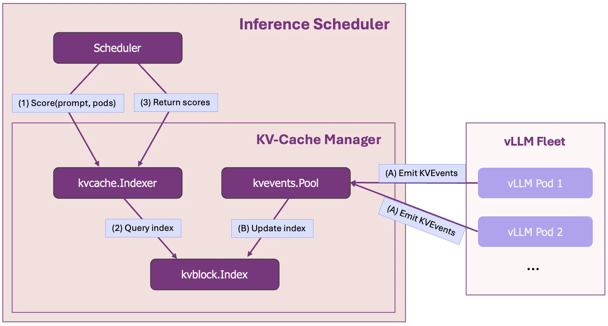
- llm-d 0.3: Wider Well-Lit Paths for Scalable Inference - Blog
2026
- llm-d 0.5: Sustaining Performance at Scale - Blog
- Native KV Cache Offloading to Any Filesystem with llm-d - Blog
- Predicted-Latency Based Scheduling for LLMs - Blog
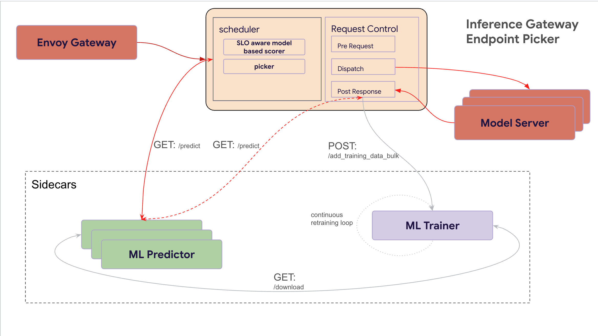
- Production-Grade LLM Inference at Scale with KServe, llm-d, and vLLM - Blog
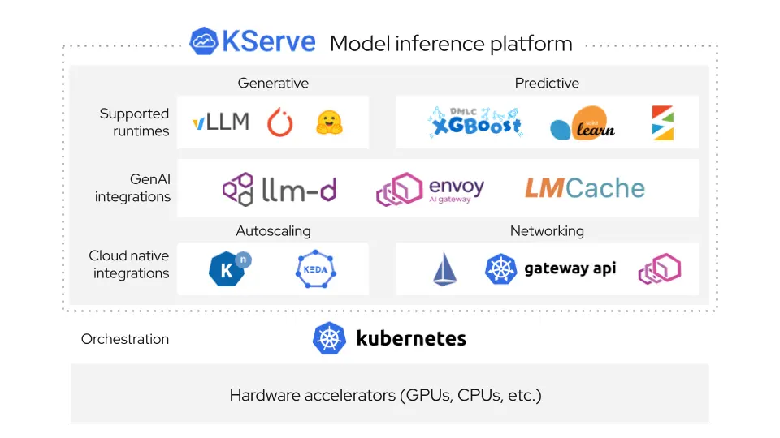
- llm-d v0.7: From Feature Introduction to Production Hardening - Blog
- No Kubernetes? No Problem: llm-d Now Runs Anywhere - Blog
- BLIS: Evolving llm-d at Simulation Speed - Blog
- Heterogeneous inference serving across three GPU vendors with llm-d - Blog
- Serving Hybrid Models at Scale in llm-d - Blog
- Networking for Distributed Inference in llm-d - Blog
- llm-d v0.8: From Platform to Control Plane - Blog
- Serving GLM-5.2 for Agentic Workloads on llm-d - Blog
- Scaling Vision-Heavy Kimi-VL with Heterogeneous E/PD on llm-d and SGLang - Blog
- Pull, Don't Recompute: Peer-to-Peer KV Cache Sharing in llm-d - Blog
- Sticky Until Saturated: Token-Aware Routing in llm-d - Blog
- Seeing Through the Stack: End-to-End and Fine-Grained Tracing in llm-d - Blog
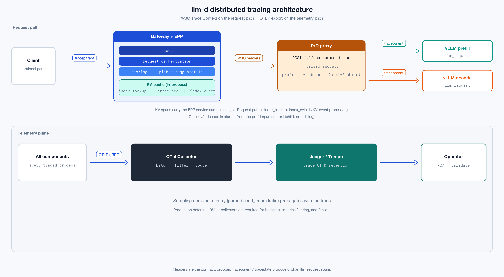
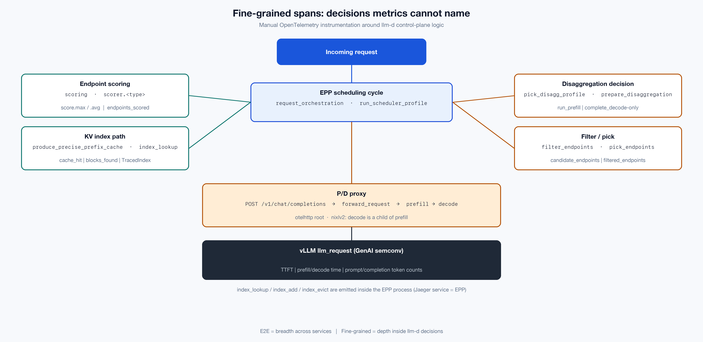
- llm-d v0.9: Hardened for Scale - Blog
- Serving Multimodal at Scale in llm-d - Blog
- Milestones: v0.10.0(9월 24일 예정), v1.0.0(NOT planned yet) - Link
📚 참고 자료 확인 내용: llm-d GitHub 저장소[3]를 직접 확인한 결과, "llm-d is a Cloud Native Computing Foundation (CNCF) sandbox project, founded by Red Hat, Google Cloud, IBM Research, CoreWeave, and NVIDIA"라는 문구를 확인했다. 2026년 3월에 CNCF Sandbox로 정식 합류했다는 뉴스도 README에 기재되어 있다.
2. llm-d Docs 개요
참고 자료: llm-d.ai/docs[2]를 실제로 열어 확인했다.
- Docs 페이지 개요: Getting Started(빠른 시작), Well-Lit Paths(Foundations/Workloads), Architecture(시스템 구조), Operations & Monitoring(운영/모니터링), API References
- 배경: CNCF 샌드박스 프로젝트, 오픈소스 커뮤니티 주도. vLLM/SGLang 등 기존 추론 엔진과 결합해 동작(엔진을 대체하는 게 아니라 감싸서 확장)
- 해결하는 문제: 단일 GPU/노드에서 잘 도는 vLLM 서버를, 여러 노드·여러 GPU 클러스터에서 안정적으로 라우팅·오토스케일링·모니터링까지 되는 프로덕션 서비스로 만드는 건 원래 상당히 번거로운데, llm-d가 이 표준 패턴들을 미리 만들어 제공한다.
단일 vLLM 서버는 "직원 1명이 손님을 다 받는 작은 매장"이고, llm-d는 그 매장들을 여러 지점으로 확장할 때 필요한 "본사 시스템"(어느 지점이 붐비는지 파악해 손님을 배정하고, 재고를 추적하고, 매출을 모니터링하는 인프라)이다.
주요 특징:
- 하드웨어 무관: NVIDIA/AMD GPU, TPU, XPU, CPU, NPU 등 다양한 가속기에서 동일한 방식으로 배포 가능 - Docs
| Vendor | Models | Maintainers |
|---|---|---|
| AMD | ROCm | Kenny Roche, Vincent Cave |
| CPU | x86_64 | Hongming Zheng (@ZhengHongming888) |
| TPU | Edwin Hernandez, Cong Liu | |
| Intel | XPU | Yuan Wu |
| NVIDIA | GPU | Will Eaton, Greg |
| Rebellions | NPU | Jinmoo Seok, Minwook Ahn |
⚠️ 성능 수치 정정: llm-d 문서 원문은 "자체 벤치마크 기준 처리량 최대 3배, 응답속도 2배, 토큰/초 최대 70% 개선"이라고 한 문장으로 소개하지만, 실제로는 서로 다른 두 실험 조건의 별개 결과다.두 벤치마크는 서로 다른 모델·하드웨어·비교 대상에서 나온 것이며, "3배/2배/70%가 하나의 설정에서 동시에 보장된다"는 뜻이 아니다. 자세한 근거는 사실 검증 결과 4번을 참고하라.
- "처리량 최대 3배 + TTFT 2배 단축" → Llama 3.1 70B, 4×AMD MI300X, prefix-cache-aware routing vs round-robin 조건의 결과
- "토큰/초 최대 70% 개선" → GPT-OSS, NVIDIA B200, prefill/decode disaggregation vs standard vLLM 조건의 완전히 별개의 결과
- Well-Lit Paths: 검증된 배포 레시피(기초 설정 + 워크로드별 패턴)를 제공해 처음부터 아키텍처를 설계할 필요 없음. 각 경로에는 Helm 차트/Kustomize 매니페스트, 성능 튜닝 설정 옵션, 벤치마크, 관찰성 구성이 포함된다.
- 운영 기능: 지능형 라우팅, 라우터 고가용성, 오토스케일링, 엔드투엔드 관찰성(모니터링)
llm-d 지원 K8s Gateway Providers - Docs:
- GKE Gateway — GKE의 Gateway API 구현체. 가중치 트래픽 분할, 미러링, 멀티클러스터 로드밸런싱 지원 - 공식 문서
- Istio — 오픈소스 서비스 메시/게이트웨이 구현체, Kubernetes Gateway API 완전 준수 - 공식 문서
- Agentgateway — LLM/MCP/A2A 워크로드용 고성능 Rust 기반 AI 게이트웨이 - 공식 문서
- Envoy AI Gateway — Envoy Gateway로 클라이언트 요청을 GenAI 서비스로 처리하는 오픈소스 프로젝트 - 공식 문서
llm-d Prism: 분산 추론 시스템의 성능 데이터를 한곳에 모아 비교·분석하는 대시보드 웹 앱 - Site[22]. 실제로 확인한 결과 이 사이트는 성능 데이터 탐색용 대시보드로 llm-d 공식 문서의 "Explore the performance data" 버튼에서 연결되며, 별도의 상세 소개 텍스트는 llm-d 메인 문서에는 포함되어 있지 않다.
3. 유튜브: VLLM을 넘어서 (Red Hat)
참고 자료: VLLM을 넘어서: Kubernetes 환경에서 llm-d를 사용한 분산 LLM 추론 — Ravindra Patil, Red Hat[17]을 실제로 검색해 확인했다. 정확한 제목은 "Beyond VLLM: Distributed LLM Inferencing With Llm-d on Kubernetes"이며 CNCF(Cloud Native Computing Foundation) 채널에 게시된 발표다. 발표 소개문: "As (LLMs) continue to grow in size and demand, single-node inferencing quickly becomes a bottleneck for performance, scalability, and cost. While vLLM has become popular for efficient LLM serving on a single node, it does not fully address the challenges of distributed inferencing across multiple GPUs and nodes in Kubernetes environments." — vLLM이 단일 노드에서는 인기를 얻었지만 멀티 GPU/멀티 노드 분산 추론의 과제를 완전히 해결하지는 못한다는 문제의식에서 llm-d를 소개하는 발표임을 확인했다.
AI Inference — Scaling vs Routing: Intelligent Routing(지능형 라우팅) → llm-d router
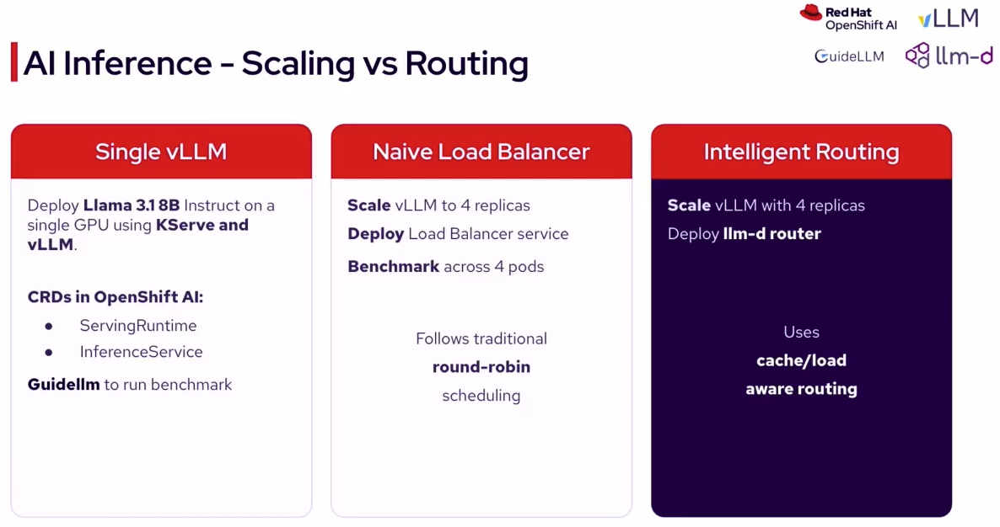
배경: vLLM 백엔드 대상이 많아질 경우 LLM-Aware LB(지능형 로드밸런서)가 필요해진다.
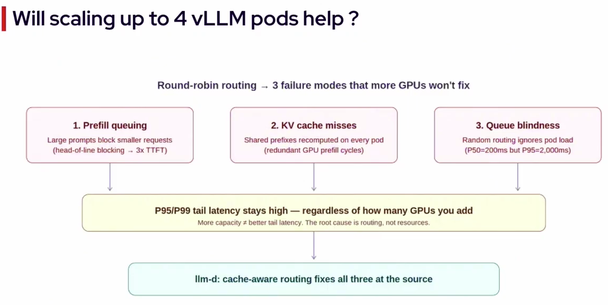
소개: 고성능 분산 LLM 추론 프레임워크, K8s + vLLM + IGW(Inference Gateway), Well-Lit Path, "time to state-of-the-art(SOTA) performance", P95/P99 지연시간 지표 강조.
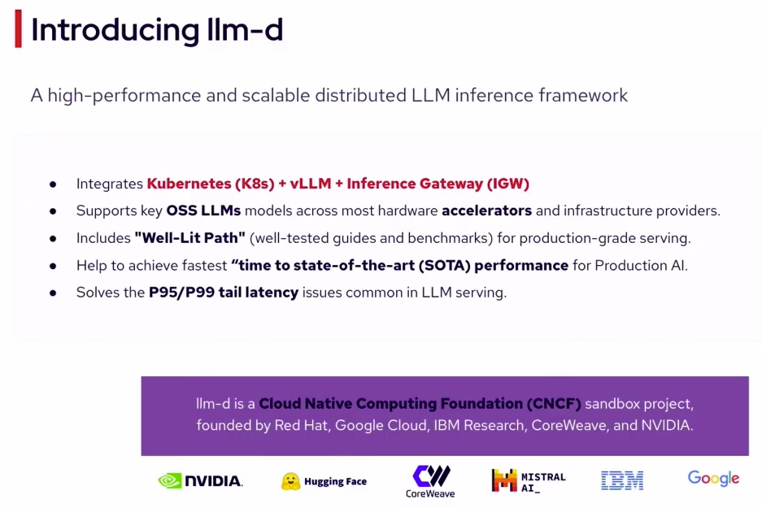
llm-d Arch: Scraper & scorers, KV- and P/D-aware routing, probing of models, Proxy-integrated(예: Envoy)
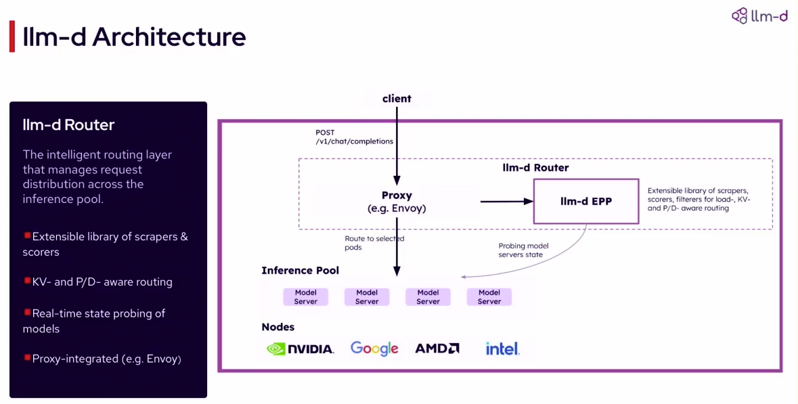
일반 RR LB vs Cache-aware LB (Proxy + EPP) 비교: 최초 캐싱 생성 요청 이후에 성능 수치가 달라진다.
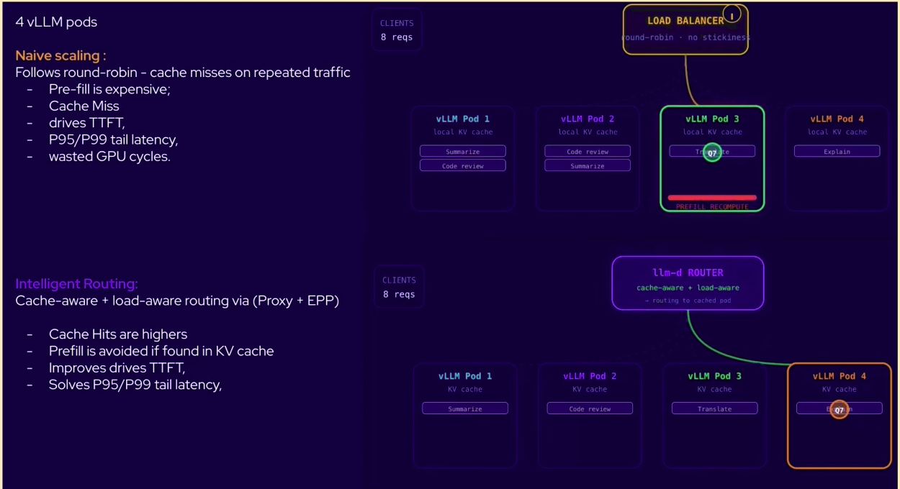
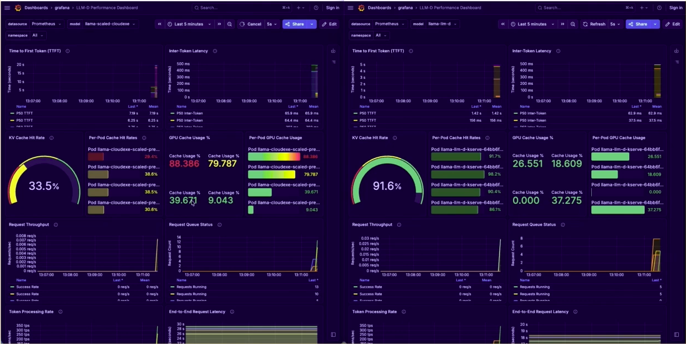
Intelligent Routing in action: Scorers, Filters, Request Control — 참고 블로그
per-Call Flow (즉, 모든 인입 요청마다 아래 과정을 거침):
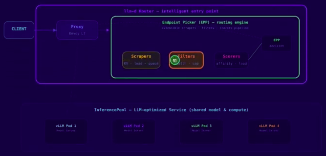
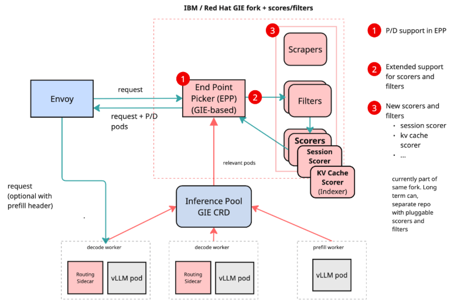
- 클라이언트 요청은 IGW에 Envoy가 받음
- Envoy는 EPP(엔드포인트 선택기)로 넘김 — EPP 역할: KV 캐시 인식과 부하 인식 기능
- Scrapers: 모든 LLM 추론 풀 파드에 접속하여 모니터링(Queue 대기열, 사용 가능 KV캐시, 현재 부하량) 정보 확인 → 파드 사용 가능 확인
- Filters: Scrapers 정보를 전달받아 스케줄링 제외 파드 필터
- Scorers: 필터 이후 후보 파드들을 스코어링(스케줄링해도 괜찮은지, 과부하가 걸렸는지 등)
- EPP: '부하, KV 캐시 사용량, Queue 대기열' 같은 입력값을 바탕으로 필터가 전달한 파드 대상을 결정하고 해당 작업을 다시 Envoy에 넘김
- Envoy는 선택된 파드로 스케줄링한다.
📌 용어 주의 — "Scrapers"는 공식 문서 용어가 아니다: 위 4단계(Scrapers→Filters→Scorers→EPP)는 이 유튜브 강연자(Ravindra Patil)가 사용한 개념적 설명 프레이밍이다. llm-d 공식 문서(architecture/core/router/epp/scheduling[7])는 EPP Request Scheduler를 "Filter → Score → Pick" 3단계로 명시하며, "Scrapers"라는 용어를 쓰지 않는다. 강연의 "Scrapers"는 공식 문서의 Data Layer(메트릭 수집 계층, 13장 참고)가 하는 역할을 발표자가 별도로 이름 붙인 것으로 보인다. 이 문서에서는 이 두 표현을 섞어 쓰지 않고, "공식 문서 표현"과 "이 강연의 프레이밍"임을 매번 명시한다.
Well-Lit Paths for Optimized Inference:
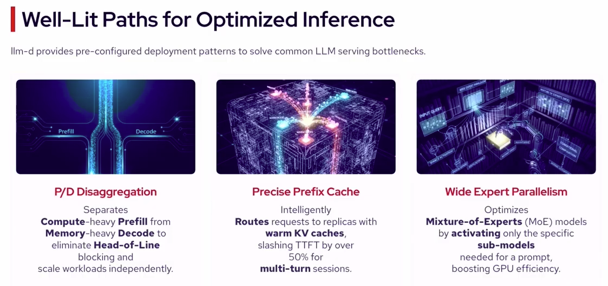
4. 참고: llm-d Envoy config 예시
참고 자료: llm-d envoy config example[11]를 실제로 확인했다. 이 파일은 llm-d 저장소의 "no-kubernetes-deployment" 가이드에 포함된 예시로, Kubernetes 없이도 Envoy + EPP만으로 llm-d 라우팅을 재현할 수 있음을 보여준다.
- 클라이언트 → Envoy(:8081) → [
ext_procgRPC 호출: 어느 파드로 보낼지 결정] → 결정된 파드로 직접 프록시 - 일반적인 k8s Service(L4, 연결 단위 로드밸런싱)와 달리, 매 요청마다 외부 프로세스(EPP)가 판단해서 목적지를 동적으로 지정하는 L7 라우팅
http_filters 핵심: ext_proc
http_filters:
- name: envoy.filters.http.ext_proc
typed_config:
"@type": type.googleapis.com/envoy.extensions.filters.http.ext_proc.v3.ExternalProcessor
grpc_service:
envoy_grpc:
cluster_name: ext_proc
authority: localhost:9002
timeout: 10s
processing_mode:
request_header_mode: SEND
response_header_mode: SEND
request_body_mode: FULL_DUPLEX_STREAMED
response_body_mode: FULL_DUPLEX_STREAMED
request_trailer_mode: SEND
response_trailer_mode: SEND
message_timeout: 1000s
- 모든 요청 헤더와 응답 헤더를 EPP(localhost:9002, gRPC)에 전달(SEND)
- 요청/응답 바디는
FULL_DUPLEX_STREAMED: 버퍼링 없이 스트리밍 중에도 양방향으로 실시간 전달. vLLM의 SSE 스트리밍 응답을 토큰 단위로 그대로 통과시키면서 EPP가 관찰할 수 있게 함(전체 응답을 기다렸다 처리하면 스트리밍 UX가 깨짐) message_timeout: 1000s: EPP 응답을 최대 1000초까지 기다림(긴 생성 스트림 처리 고려)- EPP(External Processor)가 하는 일: 요청 헤더(모델명 등)를 보고 llm-d의 스케줄러 로직으로 "이 요청을 어느 vLLM 파드로 보낼지" 결정한다. 실제 llm-d는 각 파드의 KV 캐시 히트율, 큐 길이, GPU 사용률 같은 실시간 서빙 상태를 반영해서 결정한다(kube-proxy처럼 "어느 파드가 바쁜지 전혀 모르고 무작위로 연결하는" 방식과 정반대).
original_destination_cluster 핵심 트릭:
- name: original_destination_cluster
type: ORIGINAL_DST
lb_policy: CLUSTER_PROVIDED
original_dst_lb_config:
use_http_header: true
http_header_name: x-gateway-destination-endpoint
type: ORIGINAL_DST는 Envoy의 특수 클러스터 타입으로, 고정된 엔드포인트 목록이 없고 매 요청마다 목적지를 동적으로 결정한다.use_http_header: true+http_header_name: x-gateway-destination-endpoint: EPP가(ext_proc 단계에서) 요청 헤더에x-gateway-destination-endpoint: <파드IP>:<포트>를 심어주면, Envoy는 그 헤더 값 그대로 해당 파드에 직접 연결한다.- 즉 로드밸런싱 결정을 Envoy의 표준 알고리즘(round-robin, least-request 등)이 아니라 EPP가 매 요청 단위로 100% 위임받아 내린다 → kube-proxy의 "연결 단위 무작위 배정 후 keep-alive로 고착" 문제가 구조적으로 발생할 수 없다(요청마다 헤더로 새로 지정하므로).
circuit_breakers.max_connections: 40000등 매우 높은 값: 대량의 동시 스트리밍 연결(긴 LLM 응답들이 오래 열려있음)을 견디도록 사실상 제한을 해제한다.
ext_proc 클러스터 (EPP 자체로 가는 경로):
- name: ext_proc
type: STATIC
lb_policy: LEAST_REQUEST
health_checks:
- grpc_health_check: {service_name: "envoy.service.ext_proc.v3.ExternalProcessor"}
load_assignment:
endpoints: [{address: 127.0.0.1, port_value: 9002}]
- EPP가 Envoy와 같은 호스트에 사이드카처럼 동거(127.0.0.1:9002)한다. 원본 파일 상단 주석에도 "Envoy and the EPP are colocated on the same host"라고 명시되어 있으며, 이 no-k8s 버전에선 TLS도 생략(같은 머신 내부 통신)한다.
- 표준 gRPC 헬스체크로 EPP 생존 여부를 지속 확인한다.
- HTTP/2 스트림 윈도우 크기 설정(
initial_stream/connection_window_size)은ext_proc의 양방향 스트리밍 gRPC 트래픽 처리량 조정용이다.
5. llm-d Architecture — 지능형 라우팅
참고 자료: llm-d Architecture 공식 문서[4]를 실제로 확인했다.
Core Components: Router, InferencePool, Model Server
- Router: Proxy(고성능 L7, GAIE 표준) + EPP(Endpoint Picker) — 실시간 메트릭·KV 캐시 친화성·정책으로 최적 파드를 실시간 채점/선택
- InferencePool: 같은 모델을 서빙하는 파드들을 라벨로 그룹화(k8s 네이티브 discovery). 내부에 "Variant" 개념(prefill/decode 역할, 성능/비용별 부분집합)이 있음
- Model Server: vLLM/SGLang 같은 실제 추론 엔진(GPU/TPU/HPU)
요청 흐름: 사용자 요청 → Router(Proxy) → EPP(실시간 채점) → 선택된 Model Server 파드 → 추론
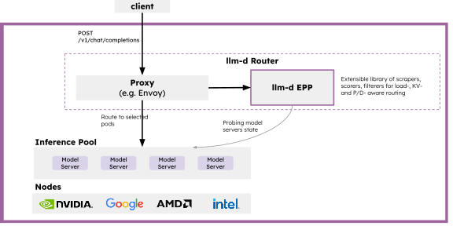
고급 기능:
- KV 캐시 3종 세트:
- Prefix-Cache Aware Routing(캐시 히트율 높은 파드로 라우팅)
- KV-Cache Indexing(모든 서버의 캐시 상태를 이벤트 기반 추적)
- KV Offloading(CPU/SSD로 캐시 계층 확장)
- Disaggregated Serving: 하나의 요청을 Prefill/Decode 단계로 분리해 서로 다른 전용 워커가 처리 → 라우터가 두 엔드포인트를 각각 고르고 KV 캐시 전송까지 조율
- 지연시간 예측 라우팅: XGBoost로 TTFT/ITL을 온라인 예측해서 SLO 기반 스코어링에 반영
- 배치 추론: Batch Gateway(OpenAI 호환 배치 API) + Async Processor
- 오토스케일링: EPP가 내보내는 큐 깊이 등 메트릭으로 HPA/KEDA 연동, 또는 비용 최소화하는 전역 최적화기(WVA)

6. [Core] InferencePool
참고 자료: InferencePool 공식 문서[5]를 확인했다.
InferencePool은 "인력파견회사의 명부"와 같다. 명부에는 지금 어느 직원(파드)이 대기 중인지, 어느 매니저(EPP)에게 배정을 물어봐야 하는지가 정리되어 있다. 직원이 늘거나 줄어도 명부는 항상 최신 상태로 자동 갱신된다.
"게이트웨이(Router) - EPP(Endpoint Picker) - 실제 모델 서버 파드들" 사이를 연결하는 중앙 리소스다. 파드 디스커버리와 게이트웨이/서비스메시 통합에 대한 "신뢰할 수 있는 단일 정보원(source of truth)" 역할을 한다.
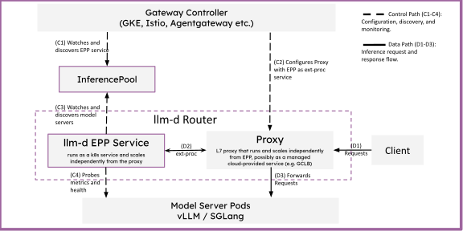
해결하는 문제:
- 모델 서버 파드가 스케일 인/아웃되며 계속 바뀌는 상황을 자동으로 감지
- 게이트웨이와 EPP 사이에 필요한 메타데이터(어떤 파드, 어떤 포트, 어떤 EPP로 물어봐야 하는지)를 연결
- 라우팅 정책을 중앙에서 관리
두 가지 역할:
- EPP를 위한 엔드포인트 디스커버리: selector(라벨 셀렉터)로 같은 네임스페이스 내 매칭되는 파드를 자동 탐색, 파드가 스케일링되거나 Ready 상태가 바뀌면 건강한 후보 목록을 자동 갱신, targetPorts로 실제 추론 트래픽이 나가는 포트(예: vLLM의 8000) 지정
- 게이트웨이 컨트롤러와의 서비스 연동: HTTPRoute의 backendRef로 쓰이면서, 프록시의 ext_proc 필터 설정을 담당 → envoy.yaml의 ext_proc cluster가 가리키는 EPP 주소를 여기서 제공하는 구조. EPP 응답을 기다리는 동안의 동작, 실패 시 정책(failureMode: FailOpen/FailClose)도 여기서 정의
핵심 필드:
spec:
selector: # 파드 검색용 라벨 셀렉터
targetPorts: # 포트 매핑
endpointPickerRef: # EPP 서비스 참조
failureMode: # EPP 실패 시 FailOpen/FailClose
멀티 InferencePool 시나리오:
- 원칙: 보통 InferencePool 1개 = 모델의 논리적 배포 1개 = EPP 배포 1개
- Prefill/Decode 분리: 서로 다른 InferencePool로 나눠서 각각 독립적으로 스케일링
- 멀티 모델/버전: 모델 버전별로 InferencePool을 나눠 관리
- 격리 원칙: 파드/EPP 서비스/InferencePool 간의 모든 참조는 같은 네임스페이스 내로 엄격히 제한 — 멀티테넌트 환경에서 경계를 분명히 함
7. [Core] llm-d Router
참고 자료: llm-d Router 공식 문서를 확인했다.
핵심 정의: 단순 로드밸런서가 아니라 "LLM을 이해하는 지능형 라우터"다. 일반적인 L7 프록시는 커넥션 수/응답시간 정도만 보지만, llm-d Router는 KV 캐시 위치, 실시간 부하, 요청 우선순위까지 반영해 요청을 배치한다.
구성: Proxy + EPP 분리 설계
- Proxy: Envoy/Istio 등 검증된 L7 프록시. TLS 종료, 커넥션 관리, 실제 트래픽 전달(데이터 플레인) 담당
- EPP(Endpoint Picker): 라우팅 "지능"을 담당하는 별도 서비스. 어디로 보낼지 "결정"만 함
요청 처리 흐름:
요청 도착 → Proxy가 요청을 잠시 "대기"시킴
→ ext_proc(External Processing)으로 EPP 호출
→ EPP가 InferencePool 상태를 평가해 최적 서버 선택
→ 선택된 주소를 Proxy에 반환
→ Proxy가 실제 요청을 그 서버로 전달
즉 Proxy는 "누구에게 보낼지 모른 채" 요청을 붙잡고 있다가, EPP가 정답(엔드포인트)을 알려주면 그제서야 전달한다. 이것이 앞서 envoy.yaml에서 봤던 ORIGINAL_DST + x-gateway-destination-endpoint 헤더 기반 클러스터 구조가 필요한 이유다.
라우팅 판단 기준: KV 캐시 위치성(prefix caching과 직결), 현재 부하(각 서버의 대기열/처리 능력), 요청 우선순위(중요도 기반 스케줄링)
확장 구조: Filters → Scorers → Pickers
- Filters: 후보 서버 중 부적합한 것 제외
- Scorers: 남은 후보들에 점수 매김(캐시 히트율, 부하 등)
- Pickers: 최종 1개 선택
InferencePool과의 관계: Router(EPP)는 InferencePool이 제공하는 파드 목록/상태를 실시간으로 감시하고, 그 안에서 최적의 엔드포인트를 골라내는 소비자다. InferencePool = "누가 후보인가"(엔드포인트 디스커버리), Router/EPP = "그 중 누구를 고를 것인가"(지능형 선택 로직).
8. [Core] llm-d Router: Proxy
역할: Router의 실제 진입점. 클라이언트의 OpenAI 호환 요청을 받아, EPP가 골라준 모델 서버 pod로 전달하고, 응답을 다시 스트리밍해주는 데이터 플레인 담당자다.
지원 프록시 구현체: 자체관리형(Istio, agentgateway, Envoy AI Gateway), 클라우드관리형(Google Cloud Application Load Balancer)
요청 흐름 (ext_proc 기반):
클라이언트 → Proxy 수신
→ ext_proc 필터가 EPP 호출
→ EPP: Filters → Scorers → Pickers 파이프라인으로 최적 엔드포인트 결정
→ EPP가 엔드포인트 주소 반환
→ Proxy가 실제 모델 서버 pod로 전달
→ 응답을 Proxy 경유해 클라이언트로 스트리밍
두 가지 배포 모드:
- Standalone Mode
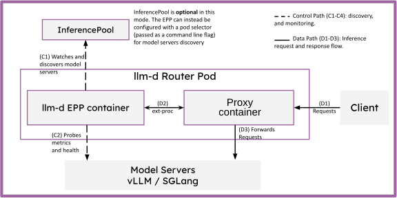
Proxy와 EPP가 같은 파드에 사이드카로 배치되는 Standalone Mode. - Proxy와 EPP가 같은 Pod 안에 사이드카로 배치
- ext_proc이 localhost로 통신(네트워크 홉 없음)
- 용도: 테스트, 레거시 Ingress, 배치 추론, RL 파이프라인
- 장점: Gateway API 인프라가 아예 필요 없음
설정 예시:
apiVersion: gateway.networking.k8s.io/v1 kind: Gateway metadata: name: my-gateway spec: gatewayClassName: istio listeners: - name: http protocol: HTTP port: 80 - Gateway Mode (Inference Gateway)
- Kubernetes Gateway API(HTTPRoute, Gateway)를 정식으로 활용
- 하나의 Gateway가 여러 HTTPRoute를 동시에 호스팅 가능
- 가중치 기반 트래픽 분할, 트래픽 미러링, 멀티클러스터 로드밸런싱까지 지원 — 프로덕션급 규모용
- 라우팅 계층: Gateway → HTTPRoute → InferencePool(또는 일반 Service)
- InferencePool을 backendRef로 지정한 경로만 EPP를 거치는 "추론 인식형" 라우팅
- 일반 Service로 지정된 경로는 그냥 표준 k8s 라우팅(EPP 관여 없음)
설정 예시:
# 즉 HTTPRoute가 "이 경로는 InferencePool로 보낼 요청이다"라고 표시해두면, 그 경로로 들어온 요청만 EPP 상담 절차를 거치게 됩니다. apiVersion: gateway.networking.k8s.io/v1 kind: HTTPRoute spec: parentRefs: - kind: Gateway name: my-gateway rules: - backendRefs: - kind: InferencePool name: my-infpool matches: - path: {type: PathPrefix, value: /}
9. [Core] llm-d Router: EPP (Endpoint Picker)
참고 자료: EPP 공식 문서[6]를 확인했다. WebFetch로 재확인한 결과, EPP는 "llm-d 배포의 '두뇌'"로 정의되며, 두 가지 핵심 목표(지능형 라우팅, 공정성/우선순위 관리)를 가진다는 설명이 소스 문서와 정확히 일치했다.
정의: EPP는 "llm-d 배포의 두뇌"다. InferencePool(누가 후보인가)과 Proxy(어떻게 전달하는가) 사이에서, 실제로 "이 요청은 어느 파드로 보낼까"를 결정하는 유일한 컴포넌트다.
두 가지 핵심 목표:
- 지능형 라우팅: KV 캐시 사용률, 프리픽스 캐시 지역성, 큐 깊이, 활성 요청 수 등 실시간 내부 상태를 반영
- 공정성/우선순위 관리: 여러 워크로드(예: 실시간 채팅 vs 배치 요약)를 같은 모델 서버 풀에서 함께 돌릴 때 우선순위를 조율
요청 처리 6단계 파이프라인:
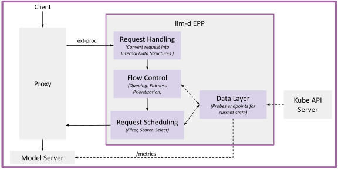
요청 도착 → 외부 처리(ext-proc) → 요청 핸들링 → 플로우 제어 → 요청 스케줄링 → 요청 프록시. 별도로 백그라운드에서 Data Layer가 k8s API와 메트릭을 비동기 수집한다.
컴포넌트:
- Request Handler: 요청을 EPP 내부 구조로 변환. 기본: OpenAI HTTP, vLLM gRPC. 커스텀 파서 확장 가능
- Flow Control: 과부하 방지 + 우선순위 큐잉. SaturationDetector(포화도 감지), FairnessPolicy(밴드 내 라운드로빈 등), OrderingPolicy(FIFO/SLO 기반)
- Request Scheduler: 실제 파드 선택. Filter → Score → Pick 파이프라인, ProfileHandler가 전체 조율
- Data Layer: 판단 근거 데이터 수집. k8s API(활성 파드), 모델 서버 상태(실행 큐, KV 캐시), 메모리 내 프리픽스 캐시 트리, "컨설턴트" 사이드카(지연시간 예측기, KV 인덱서, 토크나이저)
설정 방식: EndpointPickerConfig YAML을 --config-file 또는 --config-text 인자로 EPP 바이너리에 전달. 주의: 설정은 시작 시 1회만 읽힘 → 설정 변경 시 EPP 프로세스 재시작 필요(핫 리로드 없음).
통신 프로토콜: Proxy ↔ EPP는 Envoy ext-proc 프로토콜, 반드시 FULL_DUPLEX_STREAMED 모드. EPP → 백엔드 선택 규격은 Kubernetes Gateway API Inference Extension의 Endpoint Picker Protocol 표준을 준수한다.
10. [Core] EPP Request Handler
참고 자료: EPP Request Handling 공식 문서
역할: 추론 요청의 "생명주기 관리자". 요청이 들어와서 스케줄링되기 전까지, 그리고 응답이 스트리밍되는 동안의 파싱/추적을 전담한다.
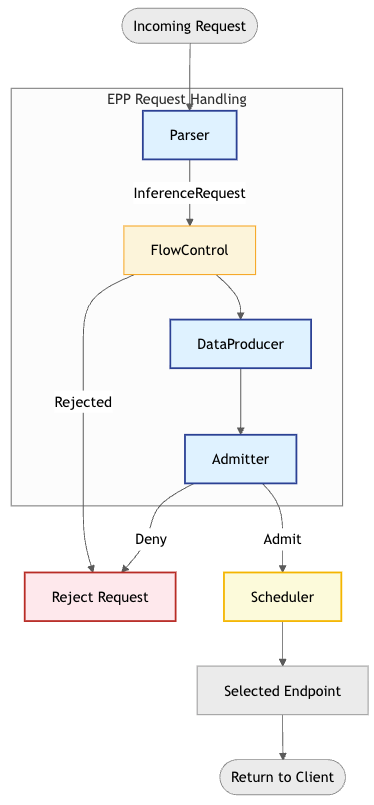
3대 핵심 컴포넌트:
- Parser: 원시 요청을 EPP 내부 구조화된 표현으로 변환, 응답에서 사용량(usage) 데이터 추출
- DataProducer: 스케줄링에 필요한 상태 생성 — 토큰화, 캐시 매칭, 지연시간 예측 등
- Admitter: SLO 기준 충족 여부 판단, 미충족 시 즉시 요청 반려
프로토콜 별 파서: openai-parser(OpenAI HTTP API - /chat/completions, /completions, /embeddings), vllmgrpc-parser(vLLM gRPC - Generate, Embed), passthrough-parser(범용, 페이로드 해석 없음 — 페이로드 기반 스케줄링은 불가)
처리 흐름: 요청 → Parser(형식 파싱) → DataProducer(상태 생성) → Admitter(SLO 검증) → Request Scheduler(파드 선택) → Model Server(실행) → ResponseBodyProcessor(응답 추적)
제공되는 기본 플러그인:
- DataProducer: predicted-latency-producer(XGBoost로 TTFT/TPOT 예측), inflight-load-producer(엔드포인트별 진행 중 요청/토큰 수 추적), approx-prefix-cache-producer(프롬프트 해싱 기반 캐시 매칭)
- Admitter: latency-slo-admitter(SLO 미충족 시 낮은 우선순위 요청 거부)
- 확장 훅(자동 와이어링): PreRequest(처리 시작 전), ResponseHeaderProcessor(응답 헤더 수신 시), ResponseBodyProcessor(스트리밍 중/완료 시 사용량 추적)
주요 메트릭: llm_d_epp_request_total/llm_d_epp_request_running(요청량/동시 실행 수), llm_d_epp_request_ttft_seconds/llm_d_epp_request_streaming_tpot_seconds(지연시간), llm_d_epp_request_input_tokens/llm_d_epp_request_cached_tokens(토큰/캐시 히트)
11. [Core] EPP Flow Control
참고 자료: EPP Flow Control 공식 문서
역할: EPP 내부에서 모델 서버 풀을 과부하로부터 지키는 중앙 큐 게이트웨이다. 일반적인 RPS 기반 제한과 달리, LLM 서빙 특유의 비선형적 리소스 소비(긴 컨텍스트, 자기회귀 디코딩)를 고려해 설계됐다.
Flow Control은 "놀이공원의 패스트트랙 + 대기줄 시스템"과 같다. VIP(우선순위 높은 요청)는 앞으로 보내고, 일반 손님(sheddable 요청)은 놀이공원이 너무 붐비면 입장을 아예 막을 수도 있다.
해결하려는 문제: Noisy Neighbor(큰 프롬프트를 던지는 테넌트가 KV 캐시를 독점), 스케줄링 후회(일단 디스패치하면 재라우팅 불가), 우선순위 역전(낮은 우선순위 배치 작업이 중요 요청을 막음), 리소스 비대칭(컨텍스트 크기 차이가 극심함)
3계층 디스패치 구조 (FlowKey = FairnessID + Priority):
- Tier 1: Priority Band — 역할(최우선 대역 선택), 제어 방식(고정)
- Tier 2: Fairness — 역할(대역 내 테넌트/플로우 선택), 제어 방식(FairnessPolicy 플러그인)
- Tier 3: Ordering — 역할(플로우 내 개별 요청 순서), 제어 방식(OrderingPolicy 플러그인)
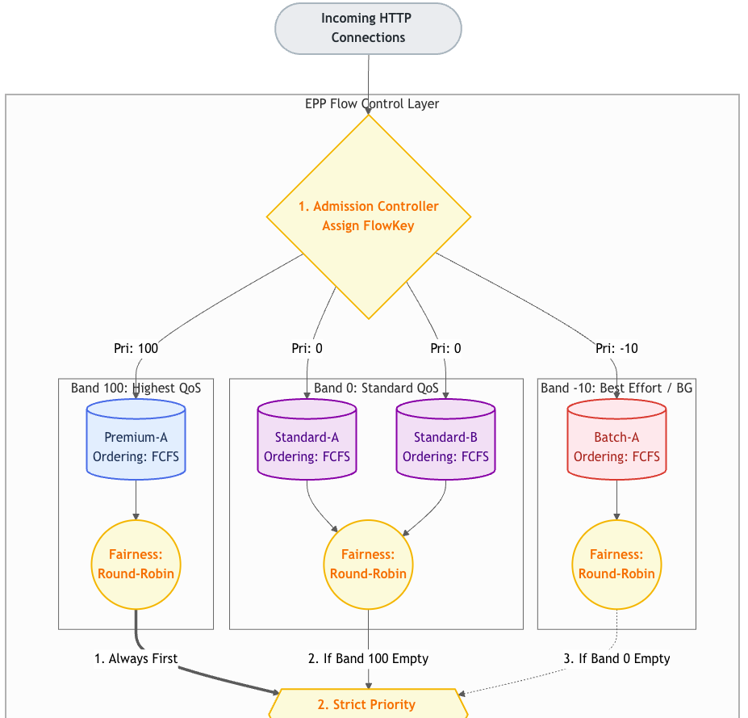
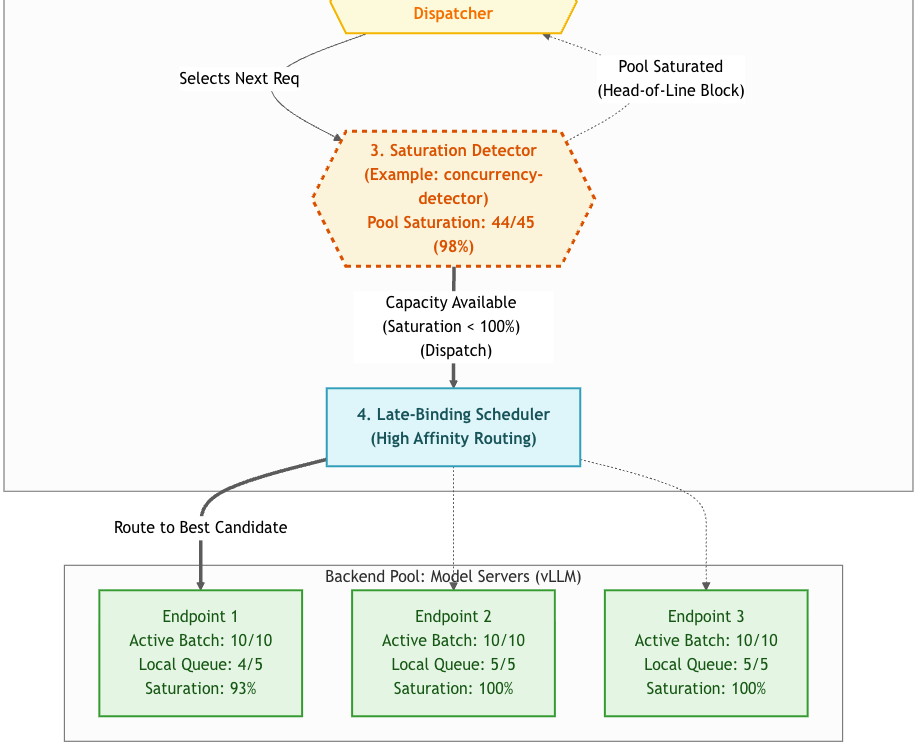
우선순위 요청 예시 (음수 우선순위 = "생략 가능(sheddable)" 요청, 헤더 없으면 우선순위 0 기본값으로 폴백):
curl -X POST http://${IP}:${PORT}/v1/completions \
-H 'Content-Type: application/json' \
-H 'x-llm-d-inference-fairness-id: tenant-a' \
-H 'x-llm-d-inference-objective: premium-traffic' \
-d '{
"model": "default-model",
"prompt": "Say hello"
}'
FairnessPolicy / OrderingPolicy 플러그인:
| 구분 | 플러그인 | 동작 |
|---|---|---|
| Fairness | round-robin-fairness-policy | 활성 플로우를 순회 처리 |
| Fairness | global-strict-fairness-policy | 플로우 격리 무시, 전역 순서 엄격 적용 |
| Ordering | fcfs-ordering-policy | 도착 순서(FCFS) |
| Ordering | edf-ordering-policy | 최소 데드라인 우선(EDF) |
| Ordering | slo-deadline-ordering-policy | x-llm-d-slo-ttft-ms 헤더 기반 SLO 데드라인 |
SaturationDetector (포화도 감지 = 게이트키퍼):
| 플러그인 | 방식 | 장단점 |
|---|---|---|
| utilization-detector | 폐루프(실시간 텔레메트리) | 정확하지만 지연 존재 |
| concurrency-detector | 개루프(활성 요청 카운팅) | 즉각적이나 실제 메모리 압력은 모름 |
Flow Control이 켜져 있으면 포화 시 디스패치를 멈추고 중앙 큐에 버퍼링하고, 꺼져 있으면 음수 우선순위 요청만 즉시 429로 거부한다.
설정 예시:
apiVersion: llm-d.ai/v1alpha1
kind: EndpointPickerConfig
featureGates: [flowControl]
plugins:
- type: round-robin-fairness-policy
- type: fcfs-ordering-policy
- type: concurrency-detector
parameters: {maxConcurrency: 15, concurrencyMode: requests}
saturationDetector:
pluginRef: concurrency-detector
flowControl:
maxBytes: "10Gi"
maxRequests: "1k"
defaultRequestTTL: "60s"
priorityBands:
- priority: 100
maxRequests: "500"
fairnessPolicyRef: round-robin-fairness-policy
orderingPolicyRef: fcfs-ordering-policy
실패 매핑:
| 상태 | HTTP | 의미 |
|---|---|---|
| QueueOutcomeRejectedCapacity | 429 | 큐 용량 초과 |
| QueueOutcomeEvictedTTL | 503 | TTL 만료 |
| QueueOutcomeEvictedContextCancelled | 503 | 클라이언트 연결 끊김 |
| graceful drain | 503 | 종료 중, 재시도 권장 |
파이프라인 위치: Request Handler(파싱/헤더추출) → Flow Control(큐잉/포화게이팅) → Request Scheduler(엔드포인트선택) → Model Servers
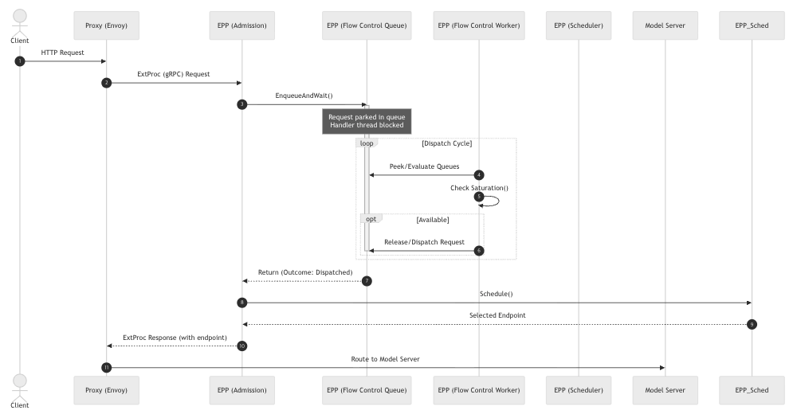
12. [Core] EPP Request Scheduler
참고 자료: EPP Request Scheduler 공식 문서
역할: EPP 파이프라인의 마지막 결정 단계. Flow Control을 통과한 요청에 대해 실제로 "이 파드로 보낸다"를 확정한다. 실시간 메트릭, 프리픽스 캐시 상태, LoRA 어댑터 유무까지 고려한 플러그인 기반 파이프라인이다.
📌 공식 문서 표현: Filter → Score → Pick 3단계 (앞서 3장 강연 프레이밍의 Scrapers/Filters/Scorers와는 다른 층위의 설명이다 — 공식 명칭은 이 3단계뿐이다.)
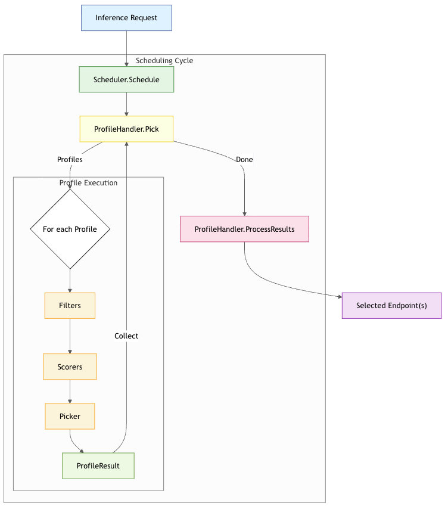
- Filter: 부적절한 후보 제거
플러그인 기능 prefix-cache-affinity-filter 프리픽스 캐시 점수 높은 "sticky" 엔드포인트 우선 선택, 느리면 제외 slo-headroom-tier-filter SLO 여유(헤드룸) 기준 필터링 label-selector-filter 레이블 셀렉터 매칭 엔드포인트만 유지 prefill-endpoints-filter / decode-endpoints-filter P/D 분리 시 역할별 필터링 - Score: 0.0~1.0 점수 부여
플러그인 스코어링 근거 kv-cache-utilization-scorer KV 캐시 사용률 낮을수록 고점 latency-scorer 예측 지연시간과 SLO 간 여유 lora-affinity-scorer 요청 LoRA 어댑터가 이미 로드된 엔드포인트 선호 prefix-scorer 프리픽스 캐시 일치 길이 queue-depth-scorer 대기열 짧을수록 고점 running-requests-size-scorer 활성 요청 수 token-load-scorer 처리 중인 전체 토큰량 session-affinity-scorer 같은 세션의 이전 요청을 처리했던 엔드포인트 최고점 no-hit-lru-scorer 캐시 미스 요청을 아직 안 받은 엔드포인트에 우선권(prefill 부하 균등화) 점수 합산: 가중치 곱 합산. 예) Scorer A(가중치2.0)=0.8, Scorer B(가중치1.0)=0.5 → 최종 = 0.8×2.0 + 0.5×1.0 = 2.1
- Pick: 최종 선택
플러그인 전략 max-score-picker (기본값) 최고 점수 1개 선택 random-picker 무작위 선택 weighted-random-picker 점수를 확률로 쓰는 가중 추첨
SchedulingProfile / ProfileHandler: 각 SchedulingProfile = Filters 목록 + WeightedScorer 목록 + Picker 1개. ProfileHandler가 어떤 프로필을 실행할지 결정한다.
- single-profile-handler: 단일 프로필 실행(일반적인 경우)
- disagg-profile-handler: Prefill/Decode용 프로필 2개를 분리 실행
- (deprecated) pd-profile-handler, data-parallel-profile-handler: 각각 위 둘로 대체 권장
Prefill/Decode Disaggregation 흐름:
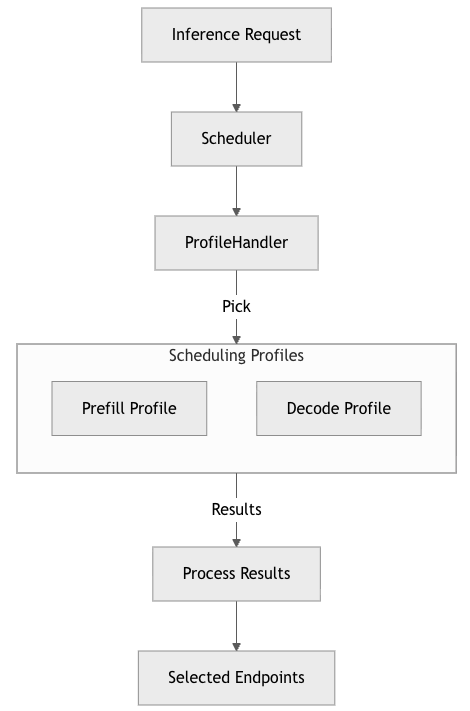
- ProfileHandler가 Prefill 프로필과 Decode 프로필을 각각 실행
- Prefill 프로필: 프리픽스 캐시 친화도, 큐 깊이 중시
- Decode 프로필: 메모리 대역폭 바운드 워크로드 최적화
- 최종적으로 decode 엔드포인트가 proxy의 실제 목적지가 되고, prefill 엔드포인트는 헤더로 주입되어 decode 워커의 사이드카가 원격 prefill을 조율
설정 예시:
scheduler:
profileHandler:
type: single-profile-handler
primaryProfile:
filters:
- type: prefix-cache-affinity-filter
stickinessThreshold: 0.7
scorers:
- {name: kv-cache-scorer, weight: 2.0}
- {name: latency-scorer, weight: 1.5}
- {name: queue-depth-scorer, weight: 1.0}
picker:
type: max-score-picker
maxNumOfEndpoints: 1
주요 메트릭: llm_d_epp_ready_endpoints, llm_d_epp_average_kv_cache_utilization, llm_d_epp_average_queue_size(풀 전체 건강 상태), llm_d_epp_scheduler_e2e_duration_seconds, llm_d_epp_plugin_duration_seconds(스케줄링 성능), llm_d_epp_disagg_decision_total(P/D 라우팅 결정 통계)
13. [Core] EPP Data Layer
참고 자료: EPP Data Layer 공식 문서
역할: EPP 파이프라인의 실시간 상태 수집·저장 계층이다. 큐 깊이, KV 캐시 사용률, LoRA 어댑터 상태 같은 원시 데이터를 모아서, Request Scheduler와 Flow Control이 참조할 수 있는 형태로 제공하는 "데이터베이스"다.
데이터 생명주기: Source → Extractor → Endpoint Attributes
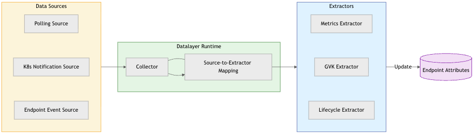
각 Endpoint(파드)마다 스레드세이프·타입세이프 속성 맵을 유지하고, 여기에 수집된 값들을 채워 넣는 구조다.
3가지 데이터 소스 유형:
| 유형 | 방식 | 구현 예시 | 수집 대상 |
|---|---|---|---|
| Polling Data Sources | 설정된 주기로 폴링 | metrics-data-source → core-metrics-extractor | KVCacheUsagePercent, WaitingQueueSize 등 |
| Notification Sources | k8s 리소스 변경 이벤트 감지 | k8s-notification-source → NotificationExtractor | Pod/Service 변경 |
| Endpoint Event Sources | 엔드포인트 생명주기 이벤트 | endpoint-notification-source → EndpointExtractor | 파드 추가/삭제/업데이트 |
Polling 방식은 "런타임이 신규 엔드포인트마다 Collector를 하나씩 띄우고, 설정된 간격으로 해당 소스를 폴링"하는 구조다.
주요 플러그인: metrics-data-source(Prometheus 호환 메트릭 파싱), core-metrics-extractor(엔진별(vLLM 등) 메트릭 이름을 표준 키로 변환해 속성으로 저장)
Scheduler/Flow Control과의 관계: Data Layer는 수집만 담당하고, 그 값을 읽어 실제 판단(필터링/스코어링/큐잉)을 내리는 건 Request Scheduler와 Flow Control의 몫이다. 즉 이 레이어는 "판단 근거를 준비하는" 순수 데이터 파이프라인이다.
확장 방법: 새 데이터 소스를 추가하려면 세 인터페이스 중 하나를 구현하면 된다: PollingDataSource, NotificationSource, EndpointSource.
14. [Core] EPP Configuration (EndpointPickerConfig)
참고 자료: EPP Configuration 공식 문서
핵심 성격: k8s CRD처럼 생겼지만 실제 CRD는 아니고, EPP 프로세스가 시작 시점에 한 번만 읽는 정적 설정 파일이다. 지금까지 본 모든 플러그인(Filter, Scorer, Picker, FairnessPolicy, OrderingPolicy, DataProducer 등)을 이 하나의 YAML로 정의한다.
전체 스키마 골격:
apiVersion: llm-d.ai/v1alpha1
kind: EndpointPickerConfig
plugins: [...] # 모든 플러그인 인스턴스 정의(그래프의 "노드")
featureGates: [...] # 예: flowControl
parser: {...} # 요청 파싱 방식
flowControl: {...}
saturationDetector: {...}
schedulingProfiles: [...]
dataLayer: {...}
설계 철학: 그래프 기반 (노드-엣지): 노드 = plugins 섹션에 정의된 개별 플러그인 인스턴스, 엣지 = schedulingProfiles, flowControl 등에서 pluginRef로 그 플러그인을 참조하는 연결. 같은 플러그인 인스턴스를 여러 프로필/우선순위 대역에서 재사용 가능하다.
plugins:
- name: my-scorer
type: prefix-cache-scorer
parameters: {blockSizeTokens: 64}
name 생략 시 type이 곧 이름이 된다. Admitter/DataProducer 인터페이스 구현 플러그인은 Auto-Wiring되어 별도 참조 없이 자동 연결된다.
섹션별 핵심:
| 섹션 | 핵심 내용 |
|---|---|
| Feature Gates | 현재 flowControl만 명시적 활성화 필요. 제거 시 2-릴리스 deprecation 절차 |
| Parser | 기본값 openai-parser, 변경 시 parser.pluginRef로 참조 |
| Flow Control | maxBytes/maxRequests/defaultRequestTTL(전역) + priorityBands(대역별 orderingPolicyRef/fairnessPolicyRef, 기본 fairness는 global-strict-fairness-policy) |
| Saturation Detector | 미지정 시 utilization-detector 자동 생성, pluginRef로 교체 가능 |
| Scheduling Profiles | Filter→Score→Pick 목록. 프로필당 Picker는 정확히 1개만 허용(2개 이상이면 런타임 에러) |
| Data Layer | metrics-data-source+core-metrics-extractor가 기본 자동 주입 |
Defaulting 규칙 (3단계):
- schedulingProfiles 자체를 생략 → 모든 Filter/Scorer/Picker를 포함한 default 프로필 자동 생성
- 프로필은 있는데 plugins가 빈 목록 → 유효하며, Picker만 자동 주입
- Picker 미지정 → max-score-picker(maxNumOfEndpoints: 1) 자동 주입
즉 아무 설정도 안 해도 합리적인 기본 동작을 하도록 설계되어 있다.
설정 전달 방법:
--config-file /etc/epp/epp-config.yaml # 파일 기반, 보통 ConfigMap 마운트
--config-text "..." # 인라인 텍스트
검증 규칙 및 에러: pluginRef가 plugins에 없는 이름 참조 → 초기화 에러. 이름 중복 → 검증 실패. 프로필당 Picker 2개 이상 → 런타임 에러. DataProducer 간 순환 의존성 → DAG 검증 실패. 모두 시작 시점에만 검사됨 — 런타임 중 오류 감지/리로드 없음.
왜 재시작이 필요한가: "configuration is not reconciled by a controller" — EPP는 시작 시 전체 플러그인 그래프를 한 번 구성하고 끝난다. 컨트롤러가 지속 감시(reconcile)하는 구조가 아니라서 핫 리로드가 원천적으로 없다.
운영 권장사항: 배포 전 로컬에서 스키마/pluginRef 검증, HA 구성(replicas > 1 + leader 선출 → 롤링 재시작 시 무중단 전환), 모니터링(:9090/metrics, Prometheus, upstream 제공 대시보드 tools/dashboards/inference_gateway.json), 알림 규칙(P99 지연/에러율/큐 깊이/KV 캐시 사용률 사전 구성 권장), 기능 롤백은 Feature Gate 비활성화로 대응.
15. [Core] Model Servers
참고 자료: Model Servers 공식 문서
역할: llm-d 스택의 최하위 계층 — 실제로 GPU/TPU에 모델을 올리고 추론을 실행하는 컴포넌트다. 지금까지 본 Router/Proxy/EPP는 모두 "누구에게 보낼지" 결정하는 컨트롤 플레인이었고, Model Server가 바로 그 결정의 도착지, 즉 이 문서 Part B에서 계속 다룰 qwen3-0-6b-fp8 Deployment에 해당하는 계층이다.
지원 추론 엔진: vLLM, SGLang, TensorRT-LLM(trtllm-serve)
핵심 책임: OpenAI 호환 API 서빙(/v1/completions, /v1/chat/completions), 메트릭 노출(KV 캐시 사용률, 큐 깊이, 활성 요청 수), GPU 메모리 내 KV 캐시 관리 + 프리픽스 캐싱, 병렬화 전략 지원(TP/DP/EP)
EPP가 요구하는 필수 메트릭:
| 메트릭 | 타입 | 의미 |
|---|---|---|
| TotalQueuedRequests | Gauge | 대기 중 요청 수 |
| TotalRunningRequests | Gauge | 활성 처리 중 요청 수 |
| KVCacheUtilization | Gauge | KV 캐시 사용률(%) |
| BlockSize (선택) | Gauge | 토큰 단위 블록 크기 |
| NumGPUBlocks (선택) | Gauge | HBM KV 캐시 총 블록 수 |
엔진별 실제 메트릭 이름: vLLM(vllm:num_requests_waiting, vllm:kv_cache_usage_perc 등), SGLang(sglang_num_queue_reqs, sglang_token_usage), TensorRT-LLM(/prometheus/metrics의 trtllm_*, v1.3.0rc12+ 필요). 엔진 종류는 파드 레이블로 명시: llm-d.ai/engine-type: vllm|sglang|trtllm-serve|triton-tensorrt-llm
헬스체크: GET /health — liveness/readiness 겸용. Ready 상태여야 InferencePool의 트래픽 대상이 된다.
프리픽스 캐싱 요구사항: 모델 서버가 프리픽스 캐시 재사용을 지원해야 EPP의 prefix-cache-aware 라우팅이 의미가 있다. vLLM의 자동 프리픽스 캐싱(--enable-prefix-caching)이 대표 예시다.
LoRA 어댑터 지원: 요청의 model 필드로 동적 어댑터 지정 가능. vllm:lora_requests_info 메트릭으로 max_lora(최대 로드 수), running_lora_adapters(현재 GPU 로드됨), waiting_lora_adapters(대기 중) 노출.
InferencePool 통합: "모델 서버는 k8s 레이블 셀렉터를 통해 InferencePool에 자동 등록" → EPP가 헬스체크 확인 후 트래픽 라우팅 시작. Model Server 자체는 llm-d 스택의 나머지 부분과 완전히 독립적으로 배포된다.
16. [Capabilities] KV Cache Management
참고 자료: KV Cache Management 공식 문서[8]
목표: 중간 상태(KV 캐시)의 추적·재사용을 통한 지연시간 감소와 처리량 증가.
KV 캐시는 "요리 중간 재료 보관"과 같다. 같은 재료(prefix)로 시작하는 요리를 매번 처음부터 준비하면 시간이 많이 걸리므로, 이미 손질된 재료를 캐시(KV 캐시)에 보관해두고 재사용하면 훨씬 빠르다.
3계층 아키텍처:
- Prefix-Cache Aware Routing (지능 계층): 앞서 봤던 Router/EPP가 담당하는 부분. 캐시 인덱스를 참고해 캐시 히트율이 최대가 되도록 요청을 라우팅. 구현 방식 2가지: 근사(heuristic) 기반(approx-prefix-cache-producer, 프롬프트 해싱 추정), 정밀(event-driven) 기반(precise-prefix-cache-producer, 실제 KV 캐시 상태 실시간 추적)
- KV-Cache Indexing (관찰성 계층): 풀 전체의 KV 캐시 상태를 지속 모니터링. vLLM 같은 엔진이 발생시키는 고빈도 이벤트를 소비해서 토큰 블록의 이동/제거를 추적. 정밀 라우팅 결정의 "source of truth" 역할 — Prefix-Cache Aware Routing의 정밀 모드가 참조하는 바로 그 데이터
- KV Offloading (용량 계층): GPU HBM(고대역폭메모리) 용량 한계를 극복하기 위해, 캐시 항목을 CPU 메모리 또는 로컬 SSD로 오프로드. 이렇게 다중 계층(HBM → CPU RAM → 로컬 디스크) 저장 구조를 형성
17. [Capabilities] Prefix-Cache Aware Routing
참고 자료: Prefix-Cache Aware Routing 공식 문서
핵심: EPP가 요청을 "이미 관련 KV 캐시를 갖고 있는 파드"로 우선 라우팅해서 불필요한 재계산을 없애고 지연시간을 줄이는 기능이다. prefix-cache-affinity-filter/prefix-scorer 동작의 내부 구현이며, 근사(Approximate)와 정밀(Precise) 두 방식이 있다. 선택 기준: 가볍게 시작하려면 근사, 정확도와 대규모 운영이 중요하면 정밀.
- 근사(Approximate) 방식
- 구성: approx-prefix-cache-producer(데이터 생성) + prefix-cache-scorer(스코링)
- 동작 원리: EPP엔 토크나이저가 없으므로 문자-토큰 비율로 근사 계산 → 프롬프트를 고정 크기 블록(예: 토큰 16개 단위)으로 나눠 롤링 해시 체인 구성 → EPP가 "최근 어느 프리픽스 해시를 어느 파드로 보냈는지" 메모리 내 LRU 인덱스로 자체 관리 → 매칭된 블록 비율로 점수 산정 → 라우팅 후 "이 파드가 이제 이 프리픽스를 갖고 있다"고 가정하고 인덱스 갱신(실제 확인 없이 추정)
- 장점: 외부 의존성 없음, 가벼움, 토크나이저 사이드카·ZMQ 불필요
- 단점: 파드 메모리 압박으로 실제 캐시가 제거돼도 EPP는 모름(상태 불일치), 문자 기반이라 정밀도 낮음
- 정밀(Precise) 방식
- 구성: token-producer(정확한 토큰화) + precise-prefix-cache-producer(KV-블록 인덱스 소유) + prefix-cache-scorer + KV-Cache Indexer(Data Layer 컴포넌트)
- 동작 원리: 프롬프트를 vLLM의
/v1/completions/renderHTTP 엔드포인트로 보내 정확한 토큰 ID 획득(EPP 파드 내 사이드카 또는 공유 render 서비스) → 모델 서버가 KV 캐시 변경 시 ZeroMQ로 KVEvents 실시간 방출 → KV-Cache Indexer가 이 이벤트를 구독해 각 파드의 정확한 토큰 블록 위치를 전역 추적 → 각 후보 파드의 실제 토큰-ID 프리픽스 보유 현황으로 정밀 스코링 → 추측적 인덱싱(speculative indexing): 라우팅 결정 시점과 실제 KVEvent 도착 사이의 "암흑 시간(blind spot)"을 메우기 위해, 라우팅 직후 즉시 추정 항목을 인덱스에 선반영 - 장점: 100% 정밀(토큰 기반), 복잡한 캐시 제거 정책도 정확히 처리, Prefill/Decode 분리 네이티브 지원
- 단점: vLLM render 엔드포인트 + ZMQ 연결 필요, 약간의 리소스 오버헤드, 모델 서버가 KV 이벤트 방출을 지원해야 함
이 문서 Part B의 Phase 5에서 이 정밀(Precise) 방식을 실제로 활성화하고, /v1/completions/render 호출 로그와 ZMQ 구독 로그를 통해 정확히 이 동작 원리대로 작동함을 확인한다.
18. [Capabilities] KV-Cache Indexer
참고 자료: KV-Cache Indexer 공식 문서
핵심 목적: KV-Cache Indexer는 모델 서버 전반의 KV 캐시 상태를 실시간으로 파악하여, 정밀한 prefix-cache-aware 라우팅 기능을 제공하는 라우터 컴포넌트다.
주요 기능 - 다음 영역에서 정밀도 향상: 이미지/오디오 콘텐츠 해싱을 사용하는 멀티모달 모델, 비선형적인 KV 사용 패턴을 가진 하이브리드 어텐션 아키텍처, 단순 LRU 정책을 넘어선 고급 오케스트레이션
아키텍처 구성 요소 (협업하는 3가지 요소):
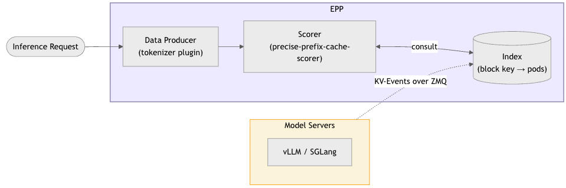
- Index (인덱스): 이벤트 기반 업데이트를 통해 블록 키(block key)를 파드 위치에 매핑
- Data Producer (데이터 생성기): 요청당 한 번씩 프롬프트를 토큰화하고 멀티모달 피처를 추출
- Scorer (스코어러): 파드별로 가장 긴 연속(consecutive) prefix 매치를 평가
이벤트 시스템: 모델 서버는 ZMQ를 통해 3가지 이벤트 유형을 발행한다 — BlockStored(새 캐시 블록 생성), BlockRemoved(블록 축출), AllBlocksCleared(파드 캐시 초기화)
전달 방식(Delivery Modes): 중앙집중형(Centralized, 단일 EPP 엔드포인트), 파드 디스커버리(Pod discovery, K8s 라벨을 이용한 다중 EPP active-active 방식)
인덱스 저장 백엔드:
| 백엔드 | 사용 사례 | 트레이드오프 |
|---|---|---|
| In-Memory (기본값) | 대부분의 배포 환경 | 고정 엔트리 크기; 최저 지연시간 |
| Cost-Aware Memory | 가변 엔트리 크기 | 바이트 단위 예산 지정 가능 |
| Redis/Valkey | 영속적 상태 저장 | 네트워크 홉 오버헤드 발생 |
스코어링 로직: 스코어러는 각 파드에 캐시된 요청 블록들 중 "가장 긴 연속 prefix"를 식별한다. KV-cache 블록은 의존성 체인(dependency chain)을 형성하기 때문에, 서버는 끊기지 않은 prefix만 재사용할 수 있다. 예: 블록 B0~B3을 보유한 파드 → 점수 4, B0/B1은 있지만 B2가 없는 파드 → 체인이 끊겨서 점수 2. 블록은 티어(tier)에 따라 가중치 적용(GPU=1.0, CPU=0.8).
예측적 인덱싱(Speculative Indexing): speculativeIndexing: true 설정 시, 라우팅 결정 직후 예측 엔트리가 즉시 삽입되며 기본 TTL은 2초다. 이를 통해 확인(confirmation) 이벤트가 도착하기 전에도 연속으로 들어오는 요청들이 어피니티(affinity)를 유지할 수 있다.
요약: KV-Cache Indexer는 vLLM/llm-d 기반 분산 서빙 환경에서, 각 파드가 어떤 KV 캐시 블록을 보유하고 있는지 이벤트 기반으로 추적하여, 요청을 prefix 캐시 적중률이 가장 높은 파드로 라우팅하는 컴포넌트다.
19. [Capabilities] KV-Cache Offloading
참고 자료: KV-Cache Offloading 공식 문서
핵심 개념: KV-Cache Offloading은 KV 블록을 CPU DRAM, 공유 스토리지 같은 더 저렴한(저비용) 계층으로 옮김으로써 GPU 메모리 용량의 한계를 확장하는 기술이다. 두 가지 확장성 문제를 해결한다: GPU HBM(고대역폭 메모리) 용량 제약, 인스턴스별로 캐시가 고립되는(isolated per-instance) 문제.
두 가지 통합 방식:
- 네이티브 방식 (vLLM OffloadingConnector): vLLM 스택에 내장된 기능. 블록을 CPU 계층 또는 공유 스토리지 계층으로 디스패치. 활성화:
--kv-offloading-backend native --kv-offloading-size <GB> - Out-of-tree 커넥터 (외부 방식): 서드파티 엔진 사용(LMCache, Mooncake, NVIDIA KVBM). 캐시 로직이 별도 프로세스/서비스에 존재. 표준 KV-cache 커넥터 API를 통해 통합
주요 컴포넌트:
- CPU Offloading: GPU DMA를 이용한 비동기 전송, 스테이징 버퍼용 "고정(pinned) CPU 메모리" 사용, vLLM 0.12.0+에서 연속 메모리 레이아웃(contiguous memory layout) 지원 → 처리량 4~5배 향상
- llm-d FS Backend: "파일시스템에 구애받지 않는(filesystem agnostic)" 커넥터, POSIX 호환 시스템에서 블록을 파일로 저장, 인스턴스 간 캐시 공유 및 재시작 후에도 지속성(persistence) 제공
- MooncakeStoreConnector: 분산 시스템, 중앙 집중형 Master가 메타데이터/축출(eviction) 관리. Embedded(프로세스 내 DRAM 풀 사용) / Standalone-store(SSD 지원이 가능한 외부 클라이언트 방식) 두 가지 모드 지원
성능 가이드: CPU offloading은 "CPU DRAM 용량이 GPU HBM보다 크면 항상 활성화"하는 것이 권장됨. 스토리지 offloading은 캐시가 단일 노드 용량을 초과하거나 노드 간 공유가 가치 있을 때 유리함.
요약: GPU HBM의 한계를 넘어 KV 캐시를 CPU RAM이나 공유 스토리지로 오프로딩하는 방법을 다룬다. vLLM 내장 네이티브 커넥터와 LMCache/Mooncake/KVBM 같은 외부 커넥터 두 갈래로 나뉘며, 특히 Mooncake는 여러 vLLM 인스턴스 간 캐시를 공유하는 분산 방식(중앙 Master + Embedded/Standalone 모드)을 제공한다.
20. [Capabilities] Inference Payload Processor (IPP)
참고 자료: IPP 공식 문서
개요: Inference Payload Processor(IPP)는 라우팅 결정 전후로 추론 요청/응답 페이로드를 처리하는 플러그형(pluggable) 프레임워크다. 풀(pool) 레벨에서 동작하며, 어떤 InferencePool이 요청을 처리할지 결정하는 데 관여한다.
주요 기능: 라우팅 전(pre-routing, 요청 헤더/본문/트레일러 검사 및 수정), 응답 후(post-response, 응답 헤더/본문/트레일러 검사 및 수정), 활용 사례 지원(모델 인지 라우팅, 가드레일, 콘텐츠 필터링, 관측성 등)
기술 아키텍처: IPP는 Envoy의 External Processing(ext-proc) 프로토콜을 통해 프록시와 통합된다. 프로필 기반 플러그인 아키텍처: Plugins(특정 작업을 수행하는 모듈형 처리 단위), Profiles(처리 파이프라인을 구성하는 이름이 지정된 플러그인 모음), Profile Picker(요청 속성에 따라 실행할 프로필을 선택하는 컴포넌트)
요청 흐름:
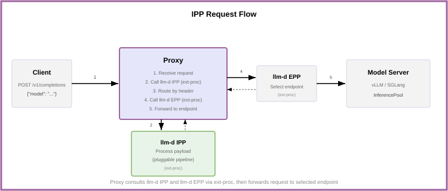
- 클라이언트가 프록시로 추론 요청 전송
- 프록시가 ext-proc를 통해 IPP 호출
- IPP가 플러그인 파이프라인을 거쳐 처리하고 변경사항(mutation)을 반환
- 프록시가 변경사항을 적용하고 InferencePool로 라우팅
- EPP(External Processing Point)가 풀 내에서 최적의 파드 선택
- 모델 서버가 요청을 처리하고 응답
운영 세부사항: IPP는 독립적인 Kubernetes Deployment로 배포되며, 환경에 따라 통합 방식이 다르다 — Istio 환경(EnvoyFilter를 통해 ext-proc 삽입), GKE 환경(GCPRoutingExtension 리소스 사용). 모니터링은 9090 포트에서 노출되는 Prometheus 호환 메트릭을 통해 이루어진다.
21. llm-d-router vs Envoy AI Gateway(Agent Router) 비교

요약: 같은 "라우터"란 이름을 쓰지만 레이어가 다르다.
- llm-d Router: 동일한 모델을 서빙하는 vLLM 파드 집합 내부에서 KV-cache 적중률·부하를 보고 최적의 파드를 고르는 추론 클러스터 내부 스케줄러
- Agent Router(구 Envoy AI Gateway): OpenAI/Anthropic/Bedrock/Vertex/자체호스팅 vLLM 등 여러 외부 provider를 통합하는 에이전트/앱 앞단의 API 게이트웨이
- 즉 경쟁 관계라기보다, Agent Router가 앞단(Edge) 게이트웨이, llm-d Router가 그 뒤 vLLM 클러스터 내부의 라우팅 엔진 역할로 함께 쓰일 수 있는 구조다.
- [Tier 2] llm-d Router
- 목적: KV-Indexer/Offloader와 같은 llm-d 생태계의 일부로, "이 모델을 서빙하는 N개의 vLLM 파드 중 어디로 보낼지"를 결정
- 구조: Proxy(데이터 플레인, L7 프록시가 요청을 받아 잠시 보류하고 ext-proc 프로토콜로 EPP에 콜백, Envoy/Istio/GCP ALB 등 다양한 구현체 지원), EPP(Endpoint Picker, 라우팅 엔진, 실시간 신호를 평가해 최적 파드 주소를 반환, Filter→Scorer→Picker 파이프라인 구조)
- 배포 모드: 경량 모드(Envoy가 EPP와 같은 파드에서 자체 관리), 프로덕션 권장 모드(Kubernetes Gateway API 표준 사용, EPP가 InferencePool의 백엔드로 동작)
- 특징: KV-cache/prefix-cache 인지 라우팅, 로드 인지 라우팅, 요청 우선순위·flow control → 동종(homogeneous) 모델 서빙 인프라 내부 최적화에 특화
- [Tier 1] Agent Router (구 Envoy AI Gateway)
- 변경 이력: Envoy AI Gateway가 Envoy 프로젝트 산하에서 분리되어 Agentic AI Foundation(AAIF) 소속의 독립 프로젝트 "Agent Router"로 리브랜딩됨(2026년 6월 v1.0, 8월 v1.1 출시)
- 구조: 2계층 — 설정 계층(Agent Router: provider, 자격증명, 라우팅 규칙, 도구, 한도 정의), 트래픽 계층(Envoy Proxy: 실제 요청 처리)
- 핵심 기능: 통합 provider 접근(16개 provider로 라우팅), 트래픽 관리(fallback/failover, 모델명 가상화, 토큰 한도), 보안/자격증명(라우터가 한곳에서 관리·로테이션), MCP 도구 통합, 추론 인지 라우팅(Kubernetes InferencePool 지원 — 여기서 llm-d의 EPP와 연결점이 생김), 관측성(OpenTelemetry GenAI 컨벤션)
- 배포: 로컬에서
aigw run한 줄로 실행 → Kubernetes까지 설정 변경 없이 스케일
(심화/추천) LLM-D: 쿠버네티스 기반 분산형 LLM 추론 - Blog, Youtube[18]
📚 참고 자료: 이 블로그를 실제로 확인했다. 제목은 "Distributed LLM Inference with llm-d"(Moncef Abboud 작성, 2026-06-21 게시). llm-d를 "LLM-aware load balancer"로 소개하며, "no reinventing the wheel, just intelligently combining solid existing solutions"(새로운 것을 만들지 않고 기존의 견고한 솔루션들을 지능적으로 결합)이라는 표현으로 Kubernetes+Envoy+Prometheus 기반이라는 점을 강조한다. GAIE 표준화, EPP 스코어링 시스템, 근사/정밀 KV 캐시 추적 방식, RDMA 기반 P/D 분리 서빙(NVIDIA NIXL 라이브러리) 등 이 문서 Part A의 내용과 대체로 일치하는 설명을 확인했다. 다만 이 블로그 페이지 자체에는 유튜브 영상이 임베드되어 있지 않았다 — 링크된 to7bFDZdQ2M 영상은 별도로 검색해 "Large Scale Distributed LLM Inference with LLM-D and Kubernetes"(Devoxx 컨퍼런스, Abdel Sghiouar 발표)로 추정되는 유사 주제의 발표를 확인했으나, 영상 페이지 자체의 설명이 충분히 로드되지 않아 완전히 동일한 영상인지 100% 확정하지는 못했다.
Part B. llm-d Hands-on 실습 (GPU 환경 필요)
⚠️ 이 실습은 실제 NVIDIA GPU가 필요합니다. 원문은 로컬 GPU PC 또는 AWS GPU EC2(VRAM 24GiB 이상 권장 기준)로 진행되었습니다. GPU가 없으면 이 Part B는 처음부터 진행할 수 없습니다 — vLLM이 nvidia.com/gpu 리소스를 실제로 스케줄받아야 하기 때문입니다. w7-1의 Envoy Agent Router 실습(kind K8s + mock 백엔드 또는 llama.cpp CPU 추론)과 가장 크게 다른 지점이 바로 이것입니다.
22. 사전 준비: K3s + NVIDIA device plugin + MetalLB 설치
사전 준비: 'NVIDIA Driver, NVIDIA Container Toolkit 설치' 또는 'NVIDIA GPU Operator 설치' 중 하나가 먼저 되어 있어야 한다.
# K3s 설치
# - --disable traefik → 기본 내장 Ingress controller 미설치
# - --disable servicelb → 기본 내장 LoadBalancer(klipper-lb) 미설치
curl -sfL https://get.k3s.io | sh -s - server \
--disable traefik \
--disable servicelb \
--kube-controller-manager-arg=bind-address=0.0.0.0 \
--kube-scheduler-arg=bind-address=0.0.0.0 \
--kube-proxy-arg=metrics-bind-address=0.0.0.0 \
--write-kubeconfig-mode=644
# 확인
kubectl get node -owide
# NAME STATUS ROLES VERSION INTERNAL-IP
# gpupc Ready control-plane v1.36.4+k3s1 <YOUR_GPU_SERVER_IP>
kubectl get pod -A
# kube-system coredns / local-path-provisioner / metrics-server 모두 Running
# NVIDIA device plugin for Kubernetes 설치
helm repo add nvdp https://nvidia.github.io/k8s-device-plugin
helm repo update
helm install nvdp nvdp/nvidia-device-plugin \
--namespace nvidia-device-plugin \
--create-namespace \
--set runtimeClassName=nvidia
# 최신 device-plugin Helm 차트(v0.20.0)는 기본적으로 Node Feature Discovery(NFD)가 붙여주는 라벨(nvidia.com/gpu.present=true 등)이 노드에 있어야 스케줄되도록 nodeAffinity가 걸려있음
kubectl label node <YOUR_NODE_NAME> nvidia.com/gpu.present=true
# 확인 : DaemonSet 파드 Running 확인
kubectl get pods -n nvidia-device-plugin
# nvdp-nvidia-device-plugin-wbczv 1/1 Running
## nvidia.com/gpu: 1 노출 확인
kubectl describe node <YOUR_NODE_NAME> | grep -A7 Allocatable
# Allocatable:
# cpu: 16
# nvidia.com/gpu: 1
# pods: 110
# MetalLB Helm 설치
helm repo add metallb https://metallb.github.io/metallb
helm repo update
helm install metallb metallb/metallb --namespace metallb-system --create-namespace
nvidia.com/gpu.present=true 라벨은 "이 건물에 주차장이 있음"을 표시하는 팻말과 같다. NVIDIA device plugin(v0.20.0)은 이 팻말이 없으면 애초에 주차장 안내(GPU 스케줄링 준비)를 시작하지 않는다.IP 풀 + L2Advertisement 적용 (컨트롤러 기동 후):
apiVersion: metallb.io/v1beta1
kind: IPAddressPool
metadata:
name: default-pool
namespace: metallb-system
spec:
addresses:
- <YOUR_METALLB_IP_RANGE_START>-<YOUR_METALLB_IP_RANGE_END>
---
apiVersion: metallb.io/v1beta1
kind: L2Advertisement
metadata:
name: default-l2adv
namespace: metallb-system
spec:
ipAddressPools:
- default-pool
## 확인
helm list -n metallb-system
# NAME NAMESPACE REVISION STATUS CHART APP VERSION
# metallb metallb-system 1 deployed metallb-0.16.1 v0.16.1
23. kube-prometheus-stack + DCGM Exporter 설치 + Grafana 대시보드 추가
# repo 추가
helm repo add prometheus-community https://prometheus-community.github.io/helm-charts
helm repo update
# K3s에 기본 설치되는 local-path 스토리지 클래스 확인
kubectl get sc
# NAME PROVISIONER RECLAIMPOLICY VOLUMEBINDINGMODE
# local-path (default) rancher.io/local-path Delete WaitForFirstConsumer
# PC IP 변수 지정
MYPCIP=<YOUR_GPU_SERVER_IP>
# 파라미터 파일 생성
cat <<EOT > monitor-values.yaml
prometheus:
service:
type: NodePort
nodePort: 30001
prometheusSpec:
serviceMonitorSelectorNilUsesHelmValues: false
retention: 7d
storageSpec:
volumeClaimTemplate:
spec:
storageClassName: local-path
accessModes:
- ReadWriteOnce
resources:
requests:
storage: 20Gi
grafana:
defaultDashboardsTimezone: Asia/Seoul
adminPassword: prom-operator
service:
type: NodePort
nodePort: 30002
persistence:
enabled: true
type: pvc
storageClassName: local-path
accessModes:
- ReadWriteOnce
size: 10Gi
alertmanager:
alertmanagerSpec:
storage:
volumeClaimTemplate:
spec:
storageClassName: local-path
accessModes:
- ReadWriteOnce
resources:
requests:
storage: 5Gi
prometheus-windows-exporter:
prometheus:
monitor:
enabled: false
kubeControllerManager:
enabled: true
endpoints:
- $MYPCIP
service:
enabled: true
port: 10257
targetPort: 10257
serviceMonitor:
enabled: true
https: true
insecureSkipVerify: true
kubeScheduler:
enabled: true
endpoints:
- $MYPCIP
service:
enabled: true
port: 10259
targetPort: 10259
serviceMonitor:
enabled: true
https: true
insecureSkipVerify: true
kubeProxy:
enabled: true
endpoints:
- $MYPCIP
service:
enabled: true
port: 10249
targetPort: 10249
serviceMonitor:
enabled: true
# 기본 k3s 단일 노드는 sqlite라서 etcd 없음
# --cluster-init embedded etcd 구성일 때만 true로 변경
kubeEtcd:
enabled: false
EOT
cat monitor-values.yaml
# 배포
helm upgrade --install kube-prometheus-stack prometheus-community/kube-prometheus-stack --version 87.5.1 \
-f monitor-values.yaml --create-namespace --namespace monitoring
# 확인
helm list -n monitoring
kubectl get pod,svc,ingress,pvc -n monitoring
kubectl get prometheus,servicemonitors,alertmanagers -n monitoring
kubectl get crd | grep monitoring
# 각각 웹 접속 실행 : NodePort 접속
MYPCIP=<YOUR_GPU_SERVER_IP>
open http://$MYPCIP:30001 # prometheus
open http://$MYPCIP:30002 # grafana : 접속 계정 admin / prom-operator
# DCGM Exporter 설치
helm repo add nvidia https://nvidia.github.io/dcgm-exporter/helm-charts
helm repo update
helm upgrade --install dcgm-exporter nvidia/dcgm-exporter \
-n monitoring \
--set runtimeClassName=nvidia # DCGM이 NVML로 GPU를 조회하려면 k3s가 등록해둔 nvidia RuntimeClass를 거쳐야 함(Device Plugin 설치 때와 동일한 이유)
# 그라파나 대시보드(12239 , 23382) 추가
curl -O <YOUR_DASHBOARD_JSON_URL_12239>
kubectl create configmap grafana-dashboard-dcgm-12239 \
-n monitoring \
--from-file=dcgm-exporter-dashboard.json=dash-12239.json \
--dry-run=client -o yaml | kubectl label -f - --local -o yaml grafana_dashboard=1 | kubectl apply -f -
curl -O <YOUR_DASHBOARD_JSON_URL_23382>
kubectl create configmap grafana-dashboard-dcgm-23382 \
-n monitoring \
--from-file=dcgm-k8s-dashboard.json=dash-23382.json \
--dry-run=client -o yaml | kubectl label -f - --local -o yaml grafana_dashboard=1 | kubectl apply -f -
## 그라파나 대시보드 자동 추가 configmap 에 전용 label 부착 확인
kubectl get configmap -n monitoring -l grafana_dashboard=1
📌 비유로 이해하기: grafana_dashboard=1 라벨이 붙은 ConfigMap은 "이 서류함에 넣으면 자동으로 접수 처리됩니다"라는 우편함과 같다. Grafana의 sidecar 컨테이너가 이 라벨을 계속 감시하다가, 새 ConfigMap이 생기면 자동으로 대시보드로 임포트한다.
24. HAMi 설치(NVIDIA device plugin 대체) + Grafana 대시보드 추가
참고 자료: HAMi GitHub[12]와 HAMi 공식 문서[13]를 실제로 확인했다. HAMi(Heterogeneous AI Computing Virtualization Middleware)는 "helps platform teams share expensive GPUs and other AI accelerators across Kubernetes workloads"라고 소개되며, CNCF Incubating 프로젝트다. 뮤테이팅 웹훅 + 스케줄러 확장(hami-scheduler) + 자체 디바이스 플러그인(hami-device-plugin) 구조로 동작하며, 표준 NVIDIA device plugin을 대체한다(GPU Operator가 드라이버를 관리하는 경우 HAMi와 공존 가능하다는 점도 확인했다).
HAMi는 "회의실 시간 분할 예약 시스템"과 같다. 원래는 회의실(GPU) 하나를 한 팀이 통째로 빌리는 것 밖에 안 됐는데, HAMi를 쓰면 같은 회의실을 여러 팀이 "50%씩 나눠서" 동시에 쓸 수 있게 예약표(vGPU 코어/VRAM 비율)를 만들어준다.
# 기존 nvidia-device-plugin(nvdp) 제거 : HAMi 차트도 기본적으로 nvidia.com/gpu 리소스를 관리
helm uninstall nvdp -n nvidia-device-plugin
# 노드 라벨 지정
NODE_NAME=$(kubectl get nodes -o jsonpath='{.items[0].metadata.name}')
kubectl label nodes ${NODE_NAME} gpu=on
hami-values.yaml:
devicePlugin:
runtimeClassName: nvidia
monitor:
extraArgs:
- -v=4
- --metrics-bind-address=:9394
prometheus:
enabled: true # GPU Utilization Metrics https://project-hami.io/docs/developers/gpu-utilization-metrics
scheduler:
kubeScheduler:
imageTag: v1.36.4
helm repo add hami-charts https://project-hami.github.io/HAMi/
helm repo update
helm install hami hami-charts/hami -n kube-system --version 2.10.0 -f hami-values.yaml
# 확인
helm get values -n kube-system hami
# 그라파나 대시보드 추가
curl -O https://raw.githubusercontent.com/Project-HAMi/HAMi/refs/heads/master/dashboards/hami-vgpu-dashboard.json
# ... (ConfigMap 생성 + grafana_dashboard=1 라벨 부착은 위 23번 절과 동일한 패턴)
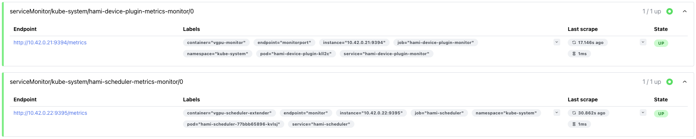
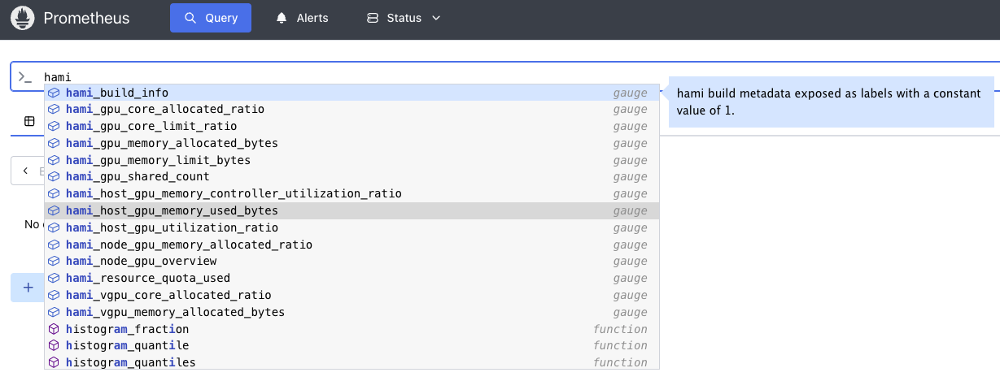
참고 자료: HAMi Dashboards
25. MinIO S3 배포
모델 캐싱/체크포인트용 S3 호환 스토리지다.
apiVersion: v1
kind: PersistentVolumeClaim
metadata:
name: minio-data
namespace: vllm
spec:
accessModes: ["ReadWriteOnce"]
storageClassName: local-path
resources:
requests:
storage: 30Gi
---
apiVersion: apps/v1
kind: Deployment
metadata:
name: minio
namespace: vllm
spec:
replicas: 1
selector:
matchLabels: { app: minio }
template:
metadata:
labels: { app: minio }
spec:
containers:
- name: minio
image: minio/minio:latest
args: ["server", "/data", "--console-address", ":9001"]
envFrom:
- secretRef: { name: minio-credentials }
ports:
- containerPort: 9000
name: api
- containerPort: 9001
name: console
volumeMounts:
- name: data
mountPath: /data
volumes:
- name: data
persistentVolumeClaim: { claimName: minio-data }
---
apiVersion: v1
kind: Service
metadata:
name: minio
namespace: vllm
spec:
selector: { app: minio }
ports:
- name: api
port: 9000
targetPort: 9000
---
apiVersion: v1
kind: Service
metadata:
name: minio-console
namespace: vllm
spec:
type: NodePort
selector: { app: minio }
ports:
- name: console
port: 9001
targetPort: 9001
nodePort: 30003
---
apiVersion: v1
kind: Secret
metadata:
name: minio-credentials
namespace: vllm
type: Opaque
stringData:
MINIO_ROOT_USER: <YOUR_MINIO_ROOT_USER>
MINIO_ROOT_PASSWORD: <YOUR_MINIO_ROOT_PASSWORD>
⚠ 본인 환경에 맞게 교체 필요:MINIO_ROOT_USER/MINIO_ROOT_PASSWORD는 원문에서admin/miniopassword로 예시가 나와 있으나 실제 운영에서는 반드시 강력한 값으로 교체해야 한다.
26. Qwen3-0.6B-FP8 모델 다운로드 Job 배포
apiVersion: batch/v1
kind: Job
metadata:
name: model-loader
namespace: vllm
spec:
backoffLimit: 1
template:
spec:
restartPolicy: Never
initContainers:
- name: hf-download
image: python:3.12-slim
command:
- sh
- -c
- |
set -eu
pip install --no-cache-dir -U "huggingface_hub[cli]"
hf download Qwen/Qwen3-0.6B-FP8 \
--local-dir /model
volumeMounts:
- name: model
mountPath: /model
containers:
- name: s3-upload
image: quay.io/minio/mc:latest
command:
- sh
- -c
- |
set -eu
mc alias set localminio http://minio.vllm.svc.cluster.local:9000 \
"$MINIO_ROOT_USER" "$MINIO_ROOT_PASSWORD"
mc mb --ignore-existing localminio/models
mc mirror --overwrite /model localminio/models/Qwen3-0.6B-FP8
envFrom:
- secretRef: { name: minio-credentials }
volumeMounts:
- name: model
mountPath: /model
volumes:
- name: model
emptyDir:
sizeLimit: 5Gi
실행 로그:
- 초기화 컨테이너(hf-download): Qwen/Qwen3-0.6B-FP8 public 모델 10개 파일 정상 다운로드 (HF_TOKEN 불필요, 익명 다운로드)
- 메인 컨테이너(s3-upload): mc mirror로 1.00GiB를 3초 만에(288MiB/s) MinIO로 업로드 완료
- boto3로 실제 오브젝트 확인: models/Qwen3-0.6B-FP8/ 하위에 model.safetensors(1.06GB) 포함 전체 파일 정상 존재, 총 약 1.03GB
- Job 상태: Complete (41초 소요)
kubectl get job -n vllm
# NAME STATUS COMPLETIONS DURATION AGE
# model-loader Complete 1/1 41s 2m27s
📌 Qwen3-0.6B-FP8는 공개(public) HuggingFace 모델이라HF_TOKEN이 필요 없었다. 만약 gated 모델을 쓴다면<YOUR_HF_TOKEN>을 환경변수로 주입해야 한다.
27. vLLM Deployment 배포 + Grafana 대시보드 추가
참고 자료: vLLM 공식 문서[14] 전반과, vLLM observability dashboards 공식 문서[16], GitHub
# 미리 로컬에 컨테이너 이미지 다운로드
crictl pull docker.io/vllm/vllm-openai:v0.28.0
crictl images | grep vllm
# 가중치는 FUSE 마운트 대신 스트리밍 로더로 S3 직접 연결
# torch.compile 캐시를 컨테이너 밖 노드에 영속화
apiVersion: apps/v1
kind: Deployment
metadata:
name: qwen3-0-6b-fp8
namespace: vllm
spec:
replicas: 1
strategy:
type: Recreate
selector:
matchLabels: { app: qwen3-0-6b-fp8 }
template:
metadata:
labels: { app: qwen3-0-6b-fp8 }
spec:
schedulerName: hami-scheduler
runtimeClassName: nvidia
containers:
- name: vllm
image: docker.io/vllm/vllm-openai:v0.28.0
command: ["/bin/sh", "-c"]
args:
- |
set -eu
python3 -c "import runai_model_streamer" 2>/dev/null || pip install --no-cache-dir vllm[runai]
exec vllm serve s3://models/Qwen3-0.6B-FP8 \
--served-model-name Qwen3-0.6B-FP8 \
--load-format runai_streamer \
--host 0.0.0.0 --port 8000 \
--max-model-len 8192
env:
- name: AWS_ENDPOINT_URL
value: "http://minio.vllm.svc.cluster.local:9000"
- name: AWS_EC2_METADATA_DISABLED
value: "true"
- name: RUNAI_STREAMER_S3_USE_VIRTUAL_ADDRESSING
value: "0"
- name: AWS_DEFAULT_REGION
value: "us-east-1"
- name: AWS_ACCESS_KEY_ID
valueFrom: { secretKeyRef: { name: minio-credentials, key: MINIO_ROOT_USER } }
- name: AWS_SECRET_ACCESS_KEY
valueFrom: { secretKeyRef: { name: minio-credentials, key: MINIO_ROOT_PASSWORD } }
- name: VLLM_CACHE_ROOT
value: /vllm-cache
ports:
- containerPort: 8000
name: http
resources:
limits:
nvidia.com/gpu: 1
requests:
cpu: "1"
memory: 2Gi
readinessProbe:
httpGet: { path: /health, port: 8000 }
initialDelaySeconds: 30
periodSeconds: 10
volumeMounts:
- name: vllm-cache
mountPath: /vllm-cache
volumes:
- name: vllm-cache
hostPath:
path: /var/cache/vllm
type: DirectoryOrCreate
---
apiVersion: v1
kind: Service
metadata:
name: qwen3-0-6b-fp8
namespace: vllm
spec:
type: NodePort
selector: { app: qwen3-0-6b-fp8 }
ports:
- port: 8000
targetPort: 8000
nodePort: 30004
--load-format runai_streamer는 "택배를 창고에 다 내려놓지 않고, 컨베이어벨트로 흘려보내며 바로 조립하는" 방식이다. 모델 가중치 파일을 로컬 디스크에 통째로 복사(FUSE 마운트)하는 대신, S3에서 스트리밍으로 읽으면서 GPU 메모리로 바로 로드한다.# gpu 노드에 호스트에 cache 확인
tree /var/cache/vllm/ -L 4
# ├── modelinfos
# │ └── vllm-model_executor-models-qwen3-Qwen3ForCausalLM.json
# └── torch_compile_cache
# └── ...
kubectl get deploy,svc,ep -n vllm qwen3-0-6b-fp8
# deployment.apps/qwen3-0-6b-fp8 1/1
# service/qwen3-0-6b-fp8 NodePort 8000:30004/TCP
# endpoints/qwen3-0-6b-fp8 10.42.0.42:8000
그라파나 대시보드 추가:
# 1. 대시보드 JSON 다운로드 (로컬)
curl -sO https://raw.githubusercontent.com/vllm-project/vllm/main/examples/observability/dashboards/grafana/performance_statistics.json
curl -sO https://raw.githubusercontent.com/vllm-project/vllm/main/examples/observability/dashboards/grafana/query_statistics.json
# 2. 서비스에 라벨/포트명 추가 (원격 서버)
kubectl label svc qwen3-0-6b-fp8 -n vllm app=qwen3-0-6b-fp8 --overwrite
kubectl patch svc qwen3-0-6b-fp8 -n vllm --type=json \
-p='[{"op":"add","path":"/spec/ports/0/name","value":"http"}]'
vllm-servicemonitor.yaml:
apiVersion: monitoring.coreos.com/v1
kind: ServiceMonitor
metadata:
name: vllm-qwen3-0-6b-fp8
namespace: monitoring
labels:
release: kube-prometheus-stack
spec:
namespaceSelector:
matchNames:
- vllm
selector:
matchLabels:
app: qwen3-0-6b-fp8
endpoints:
- port: http
path: /metrics
interval: 15s
kubectl apply -f vllm-servicemonitor.yaml
# 4. 대시보드 ConfigMap 생성 (Grafana sidecar가 자동 임포트)
kubectl create configmap grafana-dashboard-vllm-performance -n monitoring \
--from-file=performance_statistics.json --dry-run=client -o yaml | kubectl apply -f -
kubectl create configmap grafana-dashboard-vllm-query -n monitoring \
--from-file=query_statistics.json --dry-run=client -o yaml | kubectl apply -f -
kubectl label configmap grafana-dashboard-vllm-performance -n monitoring grafana_dashboard=1 --overwrite
kubectl label configmap grafana-dashboard-vllm-query -n monitoring grafana_dashboard=1 --overwrite
# 5. 검증
# Prometheus 타겟 상태
curl -s http://<YOUR_GPU_SERVER_IP>:30001/api/v1/targets | \
jq '.data.activeTargets[] | select(.scrapePool|test("vllm")) | {scrapePool, health, scrapeUrl}'
# 메트릭 쿼리
curl -s 'http://<YOUR_GPU_SERVER_IP>:30001/api/v1/query?query=vllm:num_requests_running'
# Grafana 대시보드 확인
open http://<YOUR_GPU_SERVER_IP>:30002 # admin / prom-operator
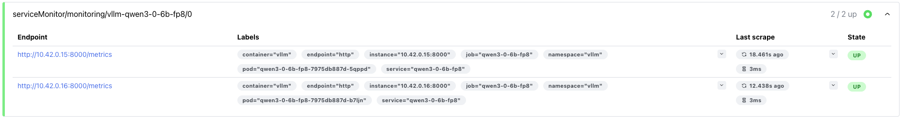
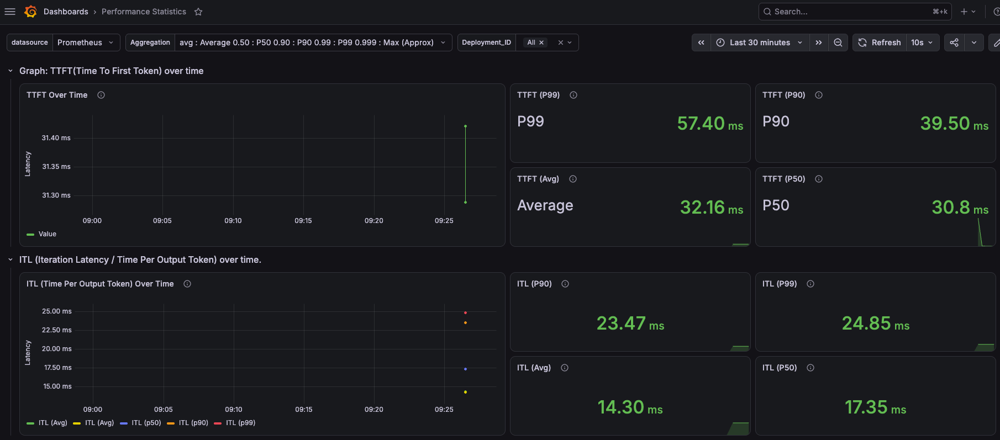
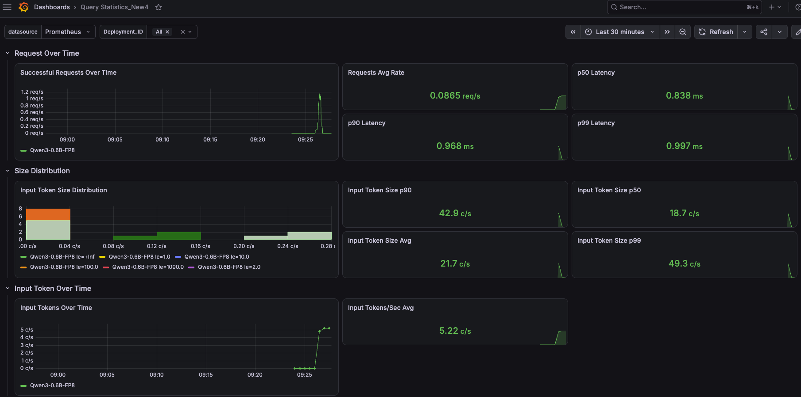
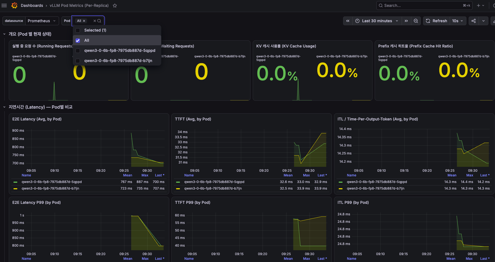
28. vLLM 추론 호출 확인
# 모델 list
curl -s http://<YOUR_GPU_SERVER_IP>:30004/v1/models | python3 -m json.tool
# "id": "Qwen3-0.6B-FP8", "object": "model", "owned_by": "vllm", "root": "s3://models/Qwen3-0.6B-FP8"
curl -s http://<YOUR_GPU_SERVER_IP>:30004/v1/chat/completions \
-H "Content-Type: application/json" \
-d '{
"model": "Qwen3-0.6B-FP8",
"messages": [
{"role": "user", "content": "한국의 수도는 어디야?"}
],
"max_tokens": 50
}' | jq .choices
# "content": "<think>\nOkay, the user is asking where the capital of South Korea is...."
29. vLLM Deployment 수정(replicas: 2) → HAMi로 vGPU 코어/VRAM 각 50% 분할해 파드 2개 기동
apiVersion: apps/v1
kind: Deployment
metadata:
name: qwen3-0-6b-fp8
namespace: vllm
spec:
replicas: 2
strategy:
type: Recreate
selector:
matchLabels:
app: qwen3-0-6b-fp8
template:
metadata:
labels:
app: qwen3-0-6b-fp8
spec:
schedulerName: hami-scheduler
runtimeClassName: nvidia
containers:
- name: vllm
image: docker.io/vllm/vllm-openai:v0.28.0
command: ["/bin/sh", "-c"]
args:
- |
set -eu
python3 -c "import runai_model_streamer" 2>/dev/null || pip install --no-cache-dir vllm[runai]
exec vllm serve s3://models/Qwen3-0.6B-FP8 \
--served-model-name Qwen3-0.6B-FP8 \
--load-format runai_streamer \
--host 0.0.0.0 --port 8000 \
--max-model-len 8192 \
--enforce-eager \
--gpu-memory-utilization 0.8 \
--kv-cache-dtype fp8
ports:
- containerPort: 8000
name: http
protocol: TCP
env:
- name: AWS_ENDPOINT_URL
value: http://minio.vllm.svc.cluster.local:9000
- name: AWS_EC2_METADATA_DISABLED
value: "true"
- name: RUNAI_STREAMER_S3_USE_VIRTUAL_ADDRESSING
value: "0"
- name: AWS_DEFAULT_REGION
value: us-east-1
- name: AWS_ACCESS_KEY_ID
valueFrom:
secretKeyRef:
name: minio-credentials
key: MINIO_ROOT_USER
- name: AWS_SECRET_ACCESS_KEY
valueFrom:
secretKeyRef:
name: minio-credentials
key: MINIO_ROOT_PASSWORD
- name: VLLM_CACHE_ROOT
value: /vllm-cache
resources:
requests:
cpu: "1"
memory: 2Gi
limits:
nvidia.com/gpu: "1"
nvidia.com/gpucores: "50"
nvidia.com/gpumem-percentage: "50"
readinessProbe:
httpGet:
path: /health
port: 8000
scheme: HTTP
initialDelaySeconds: 30
periodSeconds: 10
timeoutSeconds: 1
successThreshold: 1
failureThreshold: 3
volumeMounts:
- name: vllm-cache
mountPath: /vllm-cache
volumes:
- name: vllm-cache
hostPath:
path: /var/cache/vllm
type: DirectoryOrCreate
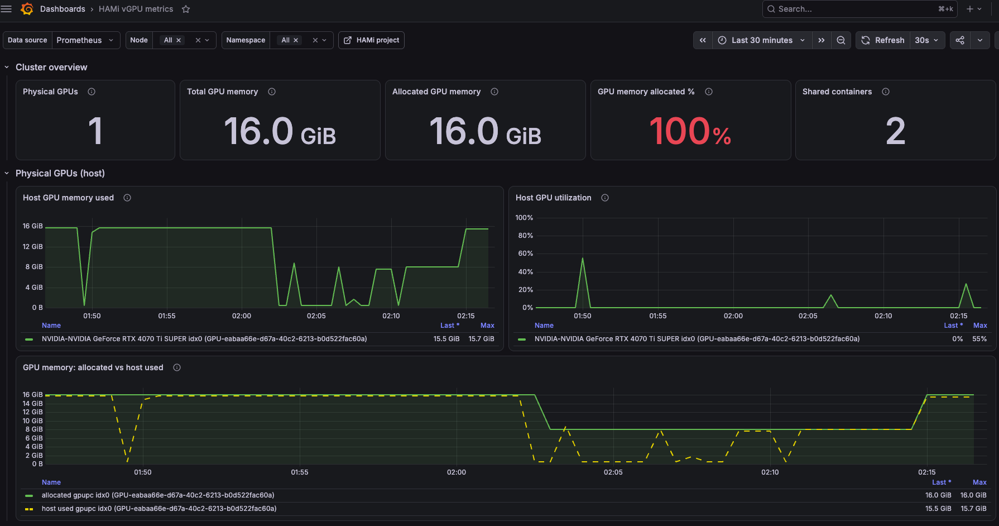
nvidia.com/gpucores: "50" + nvidia.com/gpumem-percentage: "50"는 "한 대의 자동차(GPU 1장)를 두 사람이 시간표를 나눠서 함께 쓰는" 것과 같다. HAMi 스케줄러(hami-scheduler)가 이 요청을 보고, 물리적으로는 GPU 1장인데 논리적으로는 "50% 짜리 vGPU 2개"로 분할해 두 파드에 배정한다.30. vLLM Benchmark 반복 실행
참고 자료: vLLM CLI Benchmarking 공식 문서[15]를 실제로 확인했다. --dataset-name sharegpt, --plot-timeline(요청 완료 타임라인 인터랙티브 HTML), --plot-dataset-stats(데이터셋 통계 시각화) 옵션이 문서에 정확히 그대로 존재함을 확인했다.
30.1 계획
# Context
qwen3-0-6b-fp8 서비스(NodePort 30004, replicas=2, GPU 1장을 HAMi로 50%/50% 공유)에 대해
vllm bench serve 온라인 서빙 벤치마크를 --dataset-name sharegpt로 실행하고 싶다는 요청.
반복 실행할 계획이므로 매번 수동으로 pod를 띄우는 대신 재사용 가능한 k8s Job 템플릿으로 만들고자 함.
# 사전 조사 결과:
- vllm/vllm-openai:v0.28.0 이미지에 vllm bench serve CLI가 이미 포함되어 있고, 노드에 이미 캐시되어 있음
- ShareGPT 데이터셋(ShareGPT_V3_unfiltered_cleaned_split.json) 크기는 약 642MB — 반복 실행마다
재다운로드하면 낭비이므로 hostPath에 캐싱 필요
- 토크나이저: 실제 서빙 모델은 S3에서 스트리밍 로드하지만, 벤치마크 클라이언트는 별도로 토크나이저가 필요
- 벤치마크 클라이언트는 GPU가 필요 없는 순수 HTTP 부하생성기 → runtimeClassName: nvidia / HAMi 리소스 불필요
- vllm bench serve 기본값: --dataset-name random(기본), --num-prompts 1000(기본), --request-rate inf(기본)
추천 vllm bench serve 파라미터 (환경 기준):
| 플래그 | 값 | 이유 |
|---|---|---|
| --backend | vllm | 공식 sharegpt 예제와 동일, /v1/completions 엔드포인트용 |
| --endpoint | /v1/completions | completions 엔드포인트 |
| --host | qwen3-0-6b-fp8.vllm.svc.cluster.local | 클러스터 내부 DNS |
| --port | 8000 | 서비스 포트 |
| --model | Qwen3-0.6B-FP8 | --served-model-name과 일치해야 API가 인식 |
| --tokenizer | Qwen/Qwen3-0.6B-FP8 | HF Hub에서 토크나이저 로드 |
| --dataset-name | sharegpt | 요청사항 |
| --dataset-path | /data/ShareGPT_V3_unfiltered_cleaned_split.json | hostPath 캐시 경로(최초 1회만 다운로드) |
| --num-prompts | 50 (기본 1000 대신) | 소형 환경에서 반복 테스트하기엔 1000개는 과함 |
| --max-concurrency | 8 | replicas=2 × GPU 50% 공유 상황에서 과부하 없이 동시성 테스트 |
| --request-rate | inf (기본값 유지) | max-concurrency로 동시성을 제한하는 표준 패턴 |
| --seed | 42 | 반복 실행 간 결과 비교 가능하도록 재현성 확보 |
| --save-result / --save-detailed | 사용 | 결과 JSON 파일로 영속 저장 |
| --result-dir | /results | hostPath에 마운트, Job 종료 후에도 결과 보존 |
| --label | vllm-bench | 결과 파일명 접두사 |
| --metadata | run=<Job 이름> | 어느 Job 실행인지 결과 JSON에 기록 |
| --percentile-metrics | ttft,tpot,itl,e2el | 지연시간 전 지표 수집 |
📌 --ignore-eos는 기본값(off) 유지 권장 — 실제 대화형 트래픽처럼 자연스러운 응답 길이를 시뮬레이션하기 위함(ShareGPT는 실제 대화 turn 기반이라 굳이 강제 종료 무시할 필요 없음).
Job 구성 방식: CronJob(suspend: true)를 재사용 템플릿으로 사용
- 일반 Job은 spec이 불변이라 재실행하려면 매번 새 이름으로 apply해야 함. "반복 실행"을 깔끔하게 지원하기 위해:
- CronJob을 schedule 값은 있지만
suspend: true로 등록 → 스케줄에 의해 자동 실행되지 않고, 순수 템플릿으로만 사용 - 실행할 때마다:
kubectl create job --from=cronjob/vllm-bench-sharegpt vllm-bench-manual-$(date +%s) -n vllm→ 매번 고유한 Job 이름 자동 생성, YAML 수정/재적용 불필요 ttlSecondsAfterFinished: 3600— 완료된 벤치마크 Job은 1시간 후 자동 정리(반복 실행 시 Job 누적 방지)backoffLimit: 0,restartPolicy: Never— 벤치마크 실패 시 자동 재시도 없이 바로 로그 확인 가능하게
- CronJob을 schedule 값은 있지만
📌 vLLM bench의 ShareGPT 샘플링은 seed로 초기화된 의사난수로 94,145개 대화 중 정렬/셔플 후 앞에서부터 num_prompts개를 뽑는 방식이라, seed가 같으면 어느 시점에 실행하든 항상 같은 순서로 같은 대화가 선택된다. ⇒ --seed $(date +%s)로 매번 다르게 요청 설정!
30.2 vllm-bench-cronjob.yaml 전체
apiVersion: batch/v1
kind: CronJob
metadata:
name: vllm-bench-sharegpt
namespace: vllm
spec:
schedule: "*/2 * * * *"
suspend: false
startingDeadlineSeconds: 60
concurrencyPolicy: Forbid
successfulJobsHistoryLimit: 5
failedJobsHistoryLimit: 5
jobTemplate:
spec:
backoffLimit: 0
ttlSecondsAfterFinished: 600
template:
spec:
restartPolicy: Never
initContainers:
- name: dataset-fetch
image: docker.io/vllm/vllm-openai:v0.28.0
command: ["python3", "-c"]
args:
- |
import os, urllib.request
path = "/data/ShareGPT_V3_unfiltered_cleaned_split.json"
if os.path.exists(path) and os.path.getsize(path) > 0:
print("dataset already cached, skip download:", path)
else:
url = "https://huggingface.co/datasets/anon8231489123/ShareGPT_Vicuna_unfiltered/resolve/main/ShareGPT_V3_unfiltered_cleaned_split.json"
print("downloading", url)
urllib.request.urlretrieve(url, path)
print("done:", os.path.getsize(path), "bytes")
volumeMounts:
- name: dataset-cache
mountPath: /data
- name: install-plot-deps
image: docker.io/vllm/vllm-openai:v0.28.0
command: ["/bin/sh", "-c"]
args:
- |
set -e
if [ -f /deps/.installed ]; then
echo "plot deps already cached, skip install: /deps"
else
pip install --no-cache-dir --target=/deps pandas matplotlib plotly
touch /deps/.installed
echo "plot deps installed to /deps"
fi
volumeMounts:
- name: plot-deps
mountPath: /deps
containers:
- name: bench
image: docker.io/vllm/vllm-openai:v0.28.0
command: ["/bin/sh", "-c"]
args:
- |
set -e
RUN_ID="${HOSTNAME}"
# Service FQDN(ClusterIP) 단일 호출 대상으로, 2로 실행
NUM_PARALLEL=2
TOTAL_PROMPTS="${NUM_PROMPTS:-50}"
TOTAL_CONCURRENCY="${MAX_CONCURRENCY:-8}"
PROMPTS_PER_PROC=$(( TOTAL_PROMPTS / NUM_PARALLEL ))
CONCURRENCY_PER_PROC=$(( TOTAL_CONCURRENCY / NUM_PARALLEL ))
RUN_SEED_BASE=$(date +%s)
echo "parallel workers: $NUM_PARALLEL, host: qwen3-0-6b-fp8.vllm.svc.cluster.local, seed base: $RUN_SEED_BASE"
PIDS=""
for i in $(seq 1 $NUM_PARALLEL); do
WORKER_SEED=$(( RUN_SEED_BASE + i ))
(
vllm bench serve \
--backend vllm \
--endpoint /v1/completions \
--host qwen3-0-6b-fp8.vllm.svc.cluster.local \
--port 8000 \
--model Qwen3-0.6B-FP8 \
--tokenizer Qwen/Qwen3-0.6B-FP8 \
--dataset-name sharegpt \
--dataset-path /data/ShareGPT_V3_unfiltered_cleaned_split.json \
--num-prompts "$PROMPTS_PER_PROC" \
--max-concurrency "$CONCURRENCY_PER_PROC" \
--seed "$WORKER_SEED" \
--percentile-metrics ttft,tpot,itl,e2el \
--label "vllm-bench-worker-${i}" \
--metadata run="${RUN_ID}" worker="${i}" \
--save-result \
--save-detailed \
--result-dir /results \
--plot-timeline \
--plot-dataset-stats
) &
PIDS="$PIDS $!"
done
FAIL=0
for pid in $PIDS; do
wait "$pid" || FAIL=1
done
if [ "$FAIL" -ne 0 ]; then
echo "one or more parallel benchmark workers failed"
exit 1
fi
env:
- name: NUM_PROMPTS
value: "100"
- name: MAX_CONCURRENCY
value: "16"
- name: PYTHONPATH
value: "/deps"
volumeMounts:
- name: dataset-cache
mountPath: /data
- name: results
mountPath: /results
- name: plot-deps
mountPath: /deps
resources:
requests:
cpu: "500m"
memory: "2Gi"
limits:
cpu: "2"
memory: "6Gi"
volumes:
- name: dataset-cache
hostPath:
path: /var/cache/vllm-bench/datasets
type: DirectoryOrCreate
- name: results
hostPath:
path: /var/cache/vllm-bench/results
type: DirectoryOrCreate
- name: plot-deps
hostPath:
path: /var/cache/vllm-bench/plot-deps
type: DirectoryOrCreate
30.3 실행 결과
요약: 계획대로 suspend: true CronJob 템플릿을 생성해 vLLM ShareGPT 온라인 벤치마크를 구성했다. 2회 반복 실행으로 검증 완료했다.
- 1회차: 50/50 성공, throughput 1.88 req/s, output 439.68 tok/s, Mean TTFT 50.26ms, Mean E2EL 3591ms
- 2회차(재실행): dataset-fetch가 즉시 스킵되고 유사한 지표(throughput 1.90 req/s, TTFT 49.23ms) — 재현성 확인
- 벤치마크 도중 두 파드(5qppd, b7ljn) 모두 트래픽을 나눠 처리하는 것을 Grafana 파드별 대시보드 쿼리로 교차 확인
트러블슈팅: 최초 실행 시 memory limit 2Gi로 OOMKilled(vLLM CLI 임포트 + 642MB JSON 파싱 오버헤드) → requests 2Gi / limits 6Gi로 상향해 해결.
# CronJob 템플릿 적용 (최초 1회)
kubectl apply -f /root/manifests/vllm-bench/vllm-bench-cronjob.yaml
kubectl get cronjob vllm-bench-sharegpt -n vllm # SUSPEND=True 확인
# 반복 실행 (매번 이 명령만 실행)
JOB_NAME="vllm-bench-manual-$(date +%s)"
kubectl create job --from=cronjob/vllm-bench-sharegpt "$JOB_NAME" -n vllm
kubectl logs -f job/"$JOB_NAME" -n vllm -c bench
실행 결과:
bench ============ Serving Benchmark Result ============
bench Successful requests: 50
bench Failed requests: 0
bench Maximum request concurrency: 8
bench Benchmark duration (s): 26.44
bench Total input tokens: 12298
bench Total generated tokens: 11676
bench Request throughput (req/s): 1.89
bench Output token throughput (tok/s): 441.66
bench Peak output token throughput (tok/s): 536.00
bench Peak concurrent requests: 14.00
bench Total token throughput (tok/s): 906.86
bench ---------------Time to First Token----------------
bench Mean TTFT (ms): 49.56
bench Median TTFT (ms): 46.58
bench P99 TTFT (ms): 72.43
bench -----Time per Output Token (excl. 1st token)------
bench Mean TPOT (ms): 15.18
bench Median TPOT (ms): 15.18
bench P99 TPOT (ms): 15.35
bench ---------------Inter-token Latency----------------
bench Mean ITL (ms): 15.19
bench Median ITL (ms): 15.13
bench P99 ITL (ms): 16.59
bench ----------------End-to-end Latency----------------
bench Mean E2EL (ms): 3581.47
bench Median E2EL (ms): 2853.16
bench P99 E2EL (ms): 12028.22
bench ==================================================
# 필요 시 num-prompts / max-concurrency 조정
kubectl set env cronjob/vllm-bench-sharegpt -n vllm NUM_PROMPTS=200 MAX_CONCURRENCY=16
# 결과 파일 확인
ls -la /var/cache/vllm-bench/results/
# 전체 매니페스트: /root/manifests/vllm-bench/vllm-bench-cronjob.yaml
31. 실행 결과 확인 + 결과 파일 시각화
# 결과 파일 확인
ls -la /var/cache/vllm-bench/results/
# -rw-r--r-- 1 root root 116794 vllm-bench-infqps-concurrency8-Qwen3-0.6B-FP8-20260913-013518.dataset_stats.png
# -rw-r--r-- 1 root root 314260 vllm-bench-infqps-concurrency8-Qwen3-0.6B-FP8-20260913-013518.json
# -rw-r--r-- 1 root root 5671815 vllm-bench-infqps-concurrency8-Qwen3-0.6B-FP8-20260913-013518.timeline.html
# 결과 파일 확인/다운로드
ls -la /var/cache/vllm-bench/results/*.html /var/cache/vllm-bench/results/*.png
scp <YOUR_SSH_USER>@<YOUR_GPU_SERVER_IP>:/var/cache/vllm-bench/results/*.timeline.html .
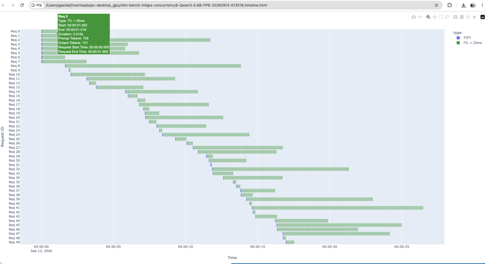
32. CronJob 주기 2분으로 변경
# 변경 사항
- schedule: 존재하지 않는 날짜(0 0 31 2 *) → */2 * * * *
- suspend: true → false
- 안전장치로 startingDeadlineSeconds: 60 추가 (컨트롤러 일시 장애 시 밀린 스케줄 무한 누적 방지)
# 검증 결과
- lastScheduleTime이 01:46:00Z → 01:48:00Z로 정확히 2분 간격 자동 트리거됨을 실측 확인
- 첫 실행은 53초 만에 정상 완료(SuccessCriteriaMet)
- concurrencyPolicy: Forbid가 그대로 유지되어, 벤치마크가 혹시 2분을 넘기더라도 다음 스케줄과 겹치지 않고 안전하게 스킵됨
⚠️ 주의: 이제 중단 요청 전까지 2분마다 계속 qwen3-0-6b-fp8 서비스에 벤치마크 부하(50 prompts, concurrency 8)가 가해진다. 필요시 아래로 멈출 수 있다.
# 일시 중지
kubectl patch cronjob vllm-bench-sharegpt -n vllm -p '{"spec":{"suspend":true}}'
# 현재 상태 확인
kubectl get cronjobs.batch -n vllm
# vllm-bench-sharegpt */2 * * * * False 0 <none>
(참고) seed 고정 후 매번 변경 시 변화:
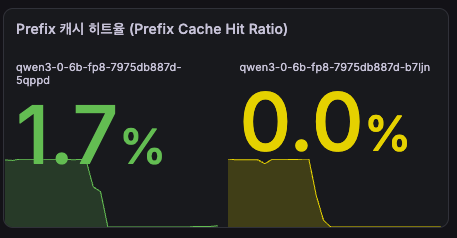
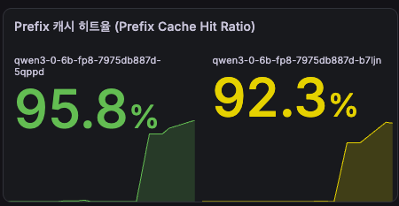
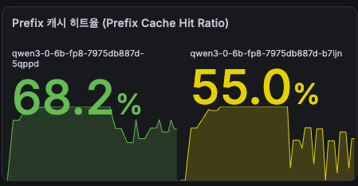
33. Prefix Caching Benchmark CronJob 생성 및 실행 확인
참고 자료: vLLM Prefix Caching Benchmark 공식 문서를 실제로 확인했다. --dataset-name prefix_repetition은 prefix caching 효율성 테스트용 합성 데이터셋이며, --prefix-repetition-prefix-len(공유 prefix 길이), --prefix-repetition-suffix-len(고유 suffix 길이), --prefix-repetition-num-prefixes(고유 prefix 개수), --prefix-repetition-output-len(출력 길이) 4개 옵션이 문서에 정확히 그대로 존재함을 확인했다.
apiVersion: batch/v1
kind: CronJob
metadata:
name: vllm-bench-prefix-caching
namespace: vllm
spec:
schedule: "*/2 * * * *"
suspend: false
startingDeadlineSeconds: 60
concurrencyPolicy: Forbid
successfulJobsHistoryLimit: 5
failedJobsHistoryLimit: 5
jobTemplate:
spec:
backoffLimit: 0
ttlSecondsAfterFinished: 600
template:
spec:
restartPolicy: Never
initContainers:
- name: install-plot-deps
image: docker.io/vllm/vllm-openai:v0.28.0
command: ["/bin/sh", "-c"]
args:
- |
set -e
if [ -f /deps/.installed ]; then
echo "plot deps already cached, skip install: /deps"
else
pip install --no-cache-dir --target=/deps pandas matplotlib plotly
touch /deps/.installed
fi
volumeMounts:
- name: plot-deps
mountPath: /deps
containers:
- name: bench
image: docker.io/vllm/vllm-openai:v0.28.0
command: ["/bin/sh", "-c"]
args:
- |
set -e
RUN_ID="${HOSTNAME}"
# ShareGPT 데이터셋 파일 불필요 (prefix_repetition은 합성 프롬프트를 자체 생성)
NUM_PARALLEL=2
TOTAL_PROMPTS="${NUM_PROMPTS:-100}"
TOTAL_CONCURRENCY="${MAX_CONCURRENCY:-16}"
PROMPTS_PER_PROC=$(( TOTAL_PROMPTS / NUM_PARALLEL ))
CONCURRENCY_PER_PROC=$(( TOTAL_CONCURRENCY / NUM_PARALLEL ))
RUN_SEED_BASE=$(date +%s)
echo "parallel workers: $NUM_PARALLEL, host: qwen3-0-6b-fp8.vllm.svc.cluster.local, seed base: $RUN_SEED_BASE"
echo "num_prefixes=${NUM_PREFIXES:-5} prefix_len=${PREFIX_LEN:-512} suffix_len=${SUFFIX_LEN:-128} output_len=${OUTPUT_LEN:-128}"
PIDS=""
for i in $(seq 1 $NUM_PARALLEL); do
WORKER_SEED=$(( RUN_SEED_BASE + i ))
(
vllm bench serve \
--backend vllm \
--endpoint /v1/completions \
--host qwen3-0-6b-fp8.vllm.svc.cluster.local \
--port 8000 \
--model Qwen3-0.6B-FP8 \
--tokenizer Qwen/Qwen3-0.6B-FP8 \
--dataset-name prefix_repetition \
--prefix-repetition-num-prefixes "${NUM_PREFIXES:-5}" \
--prefix-repetition-prefix-len "${PREFIX_LEN:-512}" \
--prefix-repetition-suffix-len "${SUFFIX_LEN:-128}" \
--prefix-repetition-output-len "${OUTPUT_LEN:-128}" \
--num-prompts "$PROMPTS_PER_PROC" \
--max-concurrency "$CONCURRENCY_PER_PROC" \
--seed "$WORKER_SEED" \
--percentile-metrics ttft,tpot,itl,e2el \
--label "vllm-bench-prefix-worker-${i}" \
--metadata run="${RUN_ID}" worker="${i}" \
--save-result \
--save-detailed \
--result-dir /results \
--plot-timeline \
--plot-dataset-stats
) &
PIDS="$PIDS $!"
done
FAIL=0
for pid in $PIDS; do
wait "$pid" || FAIL=1
done
if [ "$FAIL" -ne 0 ]; then
echo "one or more parallel benchmark workers failed"
exit 1
fi
env:
- {name: NUM_PROMPTS, value: "100"}
- {name: MAX_CONCURRENCY, value: "16"}
- {name: NUM_PREFIXES, value: "5"}
- {name: PREFIX_LEN, value: "512"}
- {name: SUFFIX_LEN, value: "128"}
- {name: OUTPUT_LEN, value: "128"}
- {name: PYTHONPATH, value: "/deps"}
volumeMounts:
- {name: results, mountPath: /results}
- {name: plot-deps, mountPath: /deps}
resources:
requests: {cpu: "500m", memory: "2Gi"}
limits: {cpu: "2", memory: "6Gi"}
volumes:
- name: results
hostPath: {path: /var/cache/vllm-bench/results, type: DirectoryOrCreate}
- name: plot-deps
hostPath: {path: /var/cache/vllm-bench/plot-deps, type: DirectoryOrCreate}
📌 확인 완료 후 모든 CronJob 중지 설정.
34. llm-d 설치 계획 (8-Phase)
34.1 설치 아키텍처
Client (curl/bench)
│
▼
Envoy Gateway (데이터플레인, envoy-gateway-system)
│ Agent Router가 이 위에 설정을 얹음 (envoy-ai-gateway-system)
│ InferencePool feature-flag 활성화됨
│ ext-proc (gRPC)
▼
EPP (Endpoint Picker, llm-d 커스텀 이미지+플러그인) ── InferencePool ── [Qwen3-0.6B-FP8 pod A]
│ prefix-cache indexer (KV 이벤트 ZMQ 구독) [Qwen3-0.6B-FP8 pod B]
▼
선택된 vLLM 파드로 요청 포워딩
- Agent Router의 원래 특화 기능(다중 외부 provider 통합, AIGatewayRoute CRD)은 이번 테스트 범위에서는 사용하지 않고, 표준 Gateway API HTTPRoute + InferencePool 경로만 사용한다(llm-d 공식 문서에도 이 경로가 게이트웨이 구현체 중립적으로 소개됨).
34.2 단계별 설치 계획
Phase 1 — Envoy Gateway 설치 (데이터플레인)
- Gateway API 표준 CRD 설치 (v1.3.0+)
- Envoy Gateway Helm 설치
helm upgrade -i eg oci://docker.io/envoyproxy/gateway-helm \ --version <pin> -n envoy-gateway-system --create-namespace - envoy-gateway Deployment Available 확인
Phase 2 — Agent Router (Envoy AI Gateway) CRD + Controller 설치
helm upgrade -i aieg-crd oci://docker.io/envoyproxy/ai-gateway-crds-helm \
--version v1.1.0 -n envoy-ai-gateway-system --create-namespace
helm upgrade -i aieg oci://docker.io/envoyproxy/ai-gateway-helm \
--version v1.1.0 -n envoy-ai-gateway-system --create-namespace
kubectl wait --timeout=2m -n envoy-ai-gateway-system deployment/ai-gateway-controller --for=condition=Available
Phase 3 — Gateway API Inference Extension(GAIE) 활성화
- GAIE CRD 설치: InferencePool, InferenceObjective (v1.0.1)
- Envoy Gateway에 InferencePool 기능 활성화 패치 적용(agent-router repo 예제 config) → envoy-gateway 재기동
kubectl apply -f https://raw.githubusercontent.com/theagentrouter/agent-router/main/examples/inference-pool/config.yaml kubectl rollout restart -n envoy-gateway-system deployment/envoy-gateway kubectl wait --timeout=2m -n envoy-gateway-system deployment/envoy-gateway --for=condition=Available
Phase 4 — 기존 vLLM 파드 연동
- 기존
qwen3-0-6b-fp8Deployment/Service에llm-d.ai/inferenceServing: "true"라벨 patch(신규 배포 없음) - InferencePool 생성 — selector로 기존 2개 파드 지정, targetPort 8000
- EPP는 GAIE 기본 참조 구현이 아니라 llm-d의 커스텀 EPP 이미지로 교체(prefix-cache-aware 플러그인 필요하므로) —
inferencepool-resources.yaml을 그대로 쓰지 않고 llm-d-infra의 EPP Deployment/Service만 별도 적용 - Gateway + HTTPRoute 생성(backendRefs에
group: inference.networking.k8s.io,kind: InferencePool) - MetalLB에서 Gateway에 LoadBalancer IP 할당 확인(
<YOUR_METALLB_IP_RANGE>풀)
Phase 5 — Precise Prefix-Cache-Aware Routing 활성화
- vLLM 인자 patch:
--enable-prefix-caching --block-size 16 --kv-events-config '{"enable_kv_cache_events": true, "publisher": "zmq", "endpoint": "tcp://0.0.0.0:5557", "topic": "kv@$(POD_NAME)@Qwen3-0.6B-FP8"}', containerPort 5557 추가 - EPP
plugins-v2.yaml에cache-aware-router(정밀 KV 이벤트 기반) 플러그인 활성화 - 재기동 후 EPP 로그에서 ZMQ 이벤트 수신 확인
Phase 6 — Prefix-Aware Scheduling 테스트
- 베이스라인: 기존
vllm-bench-prefix-cachingCronJob 결과 - 테스트 A: 동일 prefix 반복 요청 → Gateway(Envoy AI Gateway 경유) 통해 같은 파드로 sticky 라우팅되는지 확인
- 테스트 B:
vllm:prefix_cache_hits_total/prefix_cache_queries_total, TTFT 개선폭 측정 - 테스트 C: 서로 다른 prefix 다수 요청 시 두 파드 분산 확인
Phase 7 — 메트릭 수집
vLLM PodMonitor(8000/metrics), EPP ServiceMonitor 추가로 Envoy Gateway 자체 메트릭(요청량/지연)도 함께 스크랩 고려
Phase 8 — Grafana 대시보드
llm-d-vllm-overview.json, llm-d-performance-kv-cache.json을 자동 로드
34.3 리스크 / 추가 확인 사항
- 컴포넌트 증가 → 디스크 부담: Envoy Gateway + Agent Router(CRD+Controller) 이미지가 추가로 pull됨(기존 여유 공간에서 추가 소비) → Phase 1 시작 전
df -h재확인 필수. 네임스페이스 2개 추가:envoy-gateway-system,envoy-ai-gateway-system— 기존monitoring/vllm/metallb-system과 별도 - EPP 커스터마이징 필요: GAIE 공식
inferencepool-resources.yaml의 기본 EPP는 prefix-cache-aware 플러그인이 없는 참조 구현이므로, llm-d의 EPP로 교체하는 별도 작업이 필요(Istio 경로였다면 llm-d-infra 차트가 이를 자동화하지만, Agent Router 경로는 GAIE 표준 매니페스트를 직접 다뤄야 해서 수작업이 더 필요) - Agent Router 자체 기능은 이번 테스트에서 미사용: 다중 provider 통합(AIGatewayRoute) 기능은 쓰지 않고 InferencePool 경로만 활용
- 버전 pin:
v1.1.0등 latest 대신 고정 버전 사용 권장 - vLLM 재기동 시 다운타임: 기존
vllm-bench-prefix-cachingCronJob은 재기동 전 suspend 필요
34.4 실행 순서 체크리스트
- [ ] 디스크 여유공간 재확인
- [ ] Gateway API 표준 CRD 설치
- [ ] Envoy Gateway Helm 설치 (envoy-gateway-system)
- [ ] Agent Router CRD + Controller 설치 (envoy-ai-gateway-system)
- [ ] GAIE CRD 설치 + Envoy Gateway에 InferencePool 기능 패치
- [ ] 기존 vLLM 파드 라벨 patch
- [ ] InferencePool 생성 (selector → 기존 2 파드)
- [ ] llm-d 커스텀 EPP 배포 (prefix-cache-aware 플러그인 포함)
- [ ] Gateway + HTTPRoute 생성, MetalLB IP 할당 확인
- [ ] vllm-bench-prefix-caching CronJob 일시 suspend
- [ ] vLLM Deployment patch (prefix-caching + kv-events-config)
- [ ] CronJob suspend 해제
- [ ] EPP plugin 설정 확인
- [ ] Prefix-Aware Scheduling 테스트 A/B/C 실행 및 결과 기록
- [ ] PodMonitor/ServiceMonitor 배포, Prometheus target 확인
- [ ] Grafana 대시보드 ConfigMap 배포 및 확인
35. llm-d 설치 수행 (Phase 1~8 실제 실행 로그)
Phase 1: Envoy Gateway 설치 (데이터플레인)
# Phase 1 — Envoy Gateway 설치 (데이터플레인)
# 1. Gateway API 표준 CRD 설치 (v1.3.0+)
# 2. Envoy Gateway Helm 설치
helm upgrade -i eg oci://docker.io/envoyproxy/gateway-helm \
--version <pin> -n envoy-gateway-system --create-namespace
# 3. envoy-gateway Deployment Available 확인
Phase 1 완료 결과:
- Gateway API v1.3.0 CRD 설치(gatewayclasses, gateways, httproutes, grpcroutes, referencegrants)
- Envoy Gateway v1.9.1 Helm 설치(envoy-gateway-system 네임스페이스) → envoy-gateway 파드 1/1 Running 정상 기동 확인
Phase 2: Agent Router (Envoy AI Gateway) CRD + Controller 설치
# Phase 2 — Agent Router (Envoy AI Gateway) CRD + Controller 설치
helm upgrade -i aieg-crd oci://docker.io/envoyproxy/ai-gateway-crds-helm \
--version v1.1.0 -n envoy-ai-gateway-system --create-namespace
helm upgrade -i aieg oci://docker.io/envoyproxy/ai-gateway-helm \
--version v1.1.0 -n envoy-ai-gateway-system --create-namespace
kubectl wait --timeout=2m -n envoy-ai-gateway-system deployment/ai-gateway-controller --for=condition=Available
Phase 2 완료 결과:
- Agent Router CRD 설치(aigatewayroutes, aiservicebackends, backendsecuritypolicies, gatewayconfigs, mcproutes, quotapolicies)
- Agent Router Controller v1.1.0 설치(envoy-ai-gateway-system) → ai-gateway-controller 파드 1/1 Running 정상
- Envoy Gateway(Phase 1)도 계속 정상 동작 중
Phase 3: Gateway API Inference Extension(GAIE) 활성화
# Phase 3 — Gateway API Inference Extension(GAIE) 활성화
# 1. GAIE CRD 설치: InferencePool, InferenceObjective (v1.0.1)
# 2. Envoy Gateway에 InferencePool 기능 활성화 패치 적용 (agent-router repo 예제 config) → envoy-gateway 재기동
kubectl apply -f https://raw.githubusercontent.com/theagentrouter/agent-router/main/examples/inference-pool/config.yaml
kubectl rollout restart -n envoy-gateway-system deployment/envoy-gateway
kubectl wait --timeout=2m -n envoy-gateway-system deployment/envoy-gateway --for=condition=Available
Phase 3 완료 결과:
- GAIE(Gateway API Inference Extension) CRD v1.6.1 설치(InferencePool, InferencePoolImports) — 이 버전에서 InferenceObjective는 릴리스에서 빠져 있어 설치하지 않음(현재 테스트에 필수 아님)
- Envoy Gateway ↔ Agent Router 통합 설정 적용:
extensionManager.hooks(xDS translation hook) +service(→ai-gateway-controller.envoy-ai-gateway-system.svc.cluster.local:1063) +backendResources(InferencePool) 구성을 helm values로 반영 - 재기동 로그에서
Watching additional backend resource: inference.networking.k8s.io/v1, Kind=InferencePool확인 — 정상 활성화
⚠️ 실전 트러블슈팅: addon 설정 오류로 인한 CrashLoopBackOff → 무중단 롤백/재적용
📌 이 트러블슈팅은 실전에서 누구나 겪을 수 있는 문제이며, 롤백 절차 자체가 이 실습의 핵심 교훈 중 하나다.
처음에 공식 예제의 envoy-gateway-values-addon.yaml만 단독 적용했다가 registered extension has no hooks specified 에러로 새 파드가 CrashLoopBackOff에 빠졌다. 원인은 이 addon 파일이 반드시 base envoy-gateway-values.yaml(Agent Router 컨트롤러를 extension hook으로 등록하는 필수 설정)과 함께 써야 하는 파일이었기 때문이다.
원인 분석: addon 파일은 InferencePool backendResources 등록만 담당하는 "추가 설정 조각"이고, extensionManager.hooks.xdsTranslator(어떤 컨트롤러를 xDS 후처리 훅으로 쓸지 정의하는 핵심 설정)는 base 파일에만 있다. addon만 단독 적용하면 Envoy Gateway는 "확장 등록은 됐는데 훅이 없다"는 모순된 상태가 되어 파드가 계속 재시작을 반복한다.
대응: 즉시 이전 정상 버전으로 롤백해 서비스 중단 없이(기존 파드가 계속 Running 상태 유지) 안정화한 뒤, base+addon 올바른 조합을 다시 적용해 해결했다. 이 과정에서 남은 stale ReplicaSet도 정리했다.
# (재현 개념 요약 — 원문에 정확한 커맨드 로그는 없으나 트러블슈팅 흐름은 다음과 같다)
# 1) 잘못된 단독 적용으로 문제 재현
helm upgrade -i eg oci://docker.io/envoyproxy/gateway-helm \
--version v1.9.1 -n envoy-gateway-system \
-f envoy-gateway-values-addon.yaml # base 없이 addon만 적용 → CrashLoopBackOff
# 2) 즉시 이전 정상 리비전으로 롤백 (기존 파드는 계속 Running 유지)
helm rollback eg -n envoy-gateway-system
# 3) base + addon 올바른 조합으로 재적용
helm upgrade -i eg oci://docker.io/envoyproxy/gateway-helm \
--version v1.9.1 -n envoy-gateway-system \
-f envoy-gateway-values.yaml \
-f envoy-gateway-values-addon.yaml
# 4) stale ReplicaSet 정리
kubectl get rs -n envoy-gateway-system
kubectl delete rs <stale-replicaset-name> -n envoy-gateway-system
교훈: Helm values 파일을 여러 개(base + addon)로 나눠 배포하는 컴포넌트는, 문서에 "반드시 함께 적용하라"는 문구가 있는지 먼저 확인해야 한다. 하나만 적용해도 helm 자체는 에러 없이 성공하지만(YAML 문법은 유효하므로), 런타임에 컨트롤러가 "설정 불일치" 에러를 내며 크래시하는 방식으로 뒤늦게 드러난다. 이런 상황에서는 무중단 원칙 — 문제 있는 새 리비전을 즉시 이전 리비전으로 롤백해 기존 트래픽 처리 파드를 살려두고, 그다음에야 원인을 분석하고 올바른 조합을 재적용 — 이 핵심이다.
현재 상태:
- envoy-gateway-system: envoy-gateway 1/1 Running (InferencePool watch 활성)
- envoy-ai-gateway-system: ai-gateway-controller 1/1 Running
Phase 4: 기존 vLLM 파드 연동
# Phase 4 — 기존 vLLM 파드 연동
# 1. 기존 qwen3-0-6b-fp8 Deployment/Service에 llm-d.ai/inferenceServing: "true" 라벨 patch (신규 배포 없음)
# 2. InferencePool 생성 — selector로 기존 2개 파드 지정, targetPort 8000
# 3. EPP는 GAIE 기본 참조 구현이 아니라 llm-d의 커스텀 EPP 이미지로 교체
# 4. Gateway + HTTPRoute 생성 (backendRefs에 group: inference.networking.k8s.io, kind: InferencePool)
# 5. MetalLB에서 Gateway에 LoadBalancer IP 할당 확인
확인 명령/결과:
kubectl get inferencepools -n vllm
# NAME AGE
# qwen3-router 2m24s
kubectl get inferencepools -n vllm -o yaml
# spec:
# appProtocol: http
# endpointPickerRef:
# failureMode: FailOpen
# group: ""
# kind: Service
# name: qwen3-router-epp
# port:
# number: 9002
# selector:
# matchLabels:
# app: qwen3-0-6b-fp8
# targetPorts:
# - number: 8000
kubectl get svc,ep -n vllm -l app=qwen3-0-6b-fp8
# NAME TYPE CLUSTER-IP EXTERNAL-IP PORT(S) AGE
# service/qwen3-0-6b-fp8 NodePort 10.43.216.87 <none> 8000:30004/TCP 15h
#
# NAME ENDPOINTS AGE
# endpoints/qwen3-0-6b-fp8 10.42.0.15:8000,10.42.0.16:8000 15h
kubectl get deploy -n vllm qwen3-router-epp -owide
# NAME READY UP-TO-DATE AVAILABLE AGE CONTAINERS IMAGES SELECTOR
# qwen3-router-epp 1/1 1 1 5m30s epp ghcr.io/llm-d/llm-d-router-endpoint-picker:v0.10.0 llm-d-router-gateway=qwen3-router-epp
kubectl describe deploy -n vllm qwen3-router-epp
# Service Account: qwen3-router-epp
# Containers:
# epp:
# Image: ghcr.io/llm-d/llm-d-router-endpoint-picker:v0.10.0
# Ports: 9002/TCP (grpc), 9003/TCP (grpc-health), 9090/TCP (metrics)
# Args:
# --pool-name qwen3-router --pool-namespace vllm --pool-group inference.networking.k8s.io
# --zap-encoder json --config-file /config/default-plugins.yaml
# --grpc-health-port 9003 --tracing=false
kubectl get cm -n vllm qwen3-router-epp -o yaml
EPP 기본 플러그인 설정(default-plugins.yaml):
apiVersion: llm-d.ai/v1alpha1
kind: EndpointPickerConfig
plugins:
- type: queue-scorer
- type: kv-cache-utilization-scorer
- type: prefix-cache-scorer
- type: metrics-data-source
parameters:
scheme: "http"
path: "/metrics"
insecureSkipVerify: true
- type: core-metrics-extractor
schedulingProfiles:
- name: default
plugins:
- pluginRef: queue-scorer
weight: 2
- pluginRef: kv-cache-utilization-scorer
weight: 2
- pluginRef: prefix-cache-scorer
weight: 3
Request-format-agnostic 대체 설정(payload-agnostic.yaml, 참고용 — 요청 형식을 알 수 없을 때 사용):
# Request-format agnostic routing. Use this when the request format is
# unknown or unsupported, so the EPP cannot rely on scorers that read the
# request body (e.g. the prefix-cache scorer). The passthrough parser does
# not parse the body, and routing falls back to backend-state scorers:
# - active-request-scorer : prefers the least busy endpoint
# - session-affinity-scorer: keeps a session pinned to the same endpoint
# Select it by setting router.epp.pluginsConfigFile: payload-agnostic.yaml
apiVersion: llm-d.ai/v1alpha1
kind: EndpointPickerConfig
plugins:
- type: passthrough-parser
- type: active-request-scorer
- type: session-affinity-scorer
requestHandler:
parsers:
- pluginRef: passthrough-parser
schedulingProfiles:
- name: default
plugins:
- pluginRef: active-request-scorer
weight: 1
- pluginRef: session-affinity-scorer
weight: 1
Phase 4 구성 완료 사항:
- GatewayClass(envoy-ai-gateway) + Gateway(inference-gateway, vllm ns) 생성 → MetalLB가
<YOUR_METALLB_IP_RANGE>대역에서 IP 하나(예: 192.168.254.240) 할당, Programmed=True - 기존 vLLM 파드는 이미
app: qwen3-0-6b-fp8라벨이 있어 별도 라벨 patch 없이 그대로 selector로 재사용 - llm-d-router-gateway 공식 Helm 차트 v0.10.0 설치(vllm 네임스페이스, release
qwen3-router)로 아래를 한 번에 생성:- InferencePool(selector:
app=qwen3-0-6b-fp8, targetPort 8000) - EPP(
ghcr.io/llm-d/llm-d-router-endpoint-picker:v0.10.0) — 기본 플러그인 구성으로 기동: queue-scorer + kv-cache-utilization-scorer + prefix-cache-scorer(가중치 3, 현재는 estimate 모드) + metrics-data-source/core-metrics-extractor - EPP Service, RBAC, HTTPRoute(→ InferencePool)
- InferencePool(selector:
- Envoy 데이터플레인 파드(
envoy-vllm-inference-gateway-...)가 자동 생성되어 정상 기동
엔드투엔드 검증: Gateway IP(http://<YOUR_METALLB_GATEWAY_IP>)로 /v1/chat/completions 요청 시 정상 응답(200 OK) 확인, 여러 요청을 보내 두 vLLM 파드 모두에 로드밸런싱되는 것도 로그로 확인했다.
Phase 5: Precise Prefix-Cache-Aware Routing 활성화
# Phase 5 — Precise Prefix-Cache-Aware Routing 활성화
# 1. vLLM 인자 patch: --enable-prefix-caching --block-size 16 --kv-events-config '{"enable_kv_cache_events": true, "publisher": "zmq", "endpoint": "tcp://0.0.0.0:5557", "topic": "kv@$(POD_NAME)@Qwen3-0.6B-FP8"}', containerPort 5557 추가
# 2. EPP plugins-v2.yaml에 cache-aware-router(정밀 KV 이벤트 기반) 플러그인 활성화
# 3. 재기동 후 EPP 로그에서 ZMQ 이벤트 수신 확인
Phase 5 완료 결과: 6번의 동일 prompt 요청이 전부 같은 파드(10.42.0.232)로만 라우팅되고, 다른 파드(.233)는 단 한 번도 선택되지 않았다 — precise prefix-cache-aware 라우팅이 정상 동작함을 확실히 검증했다.
구성 요약:
- vLLM Deployment patch:
--enable-prefix-caching+--kv-events-config(ZMQ publisher, 포트 5557, topickv@$(POD_NAME)@Qwen3-0.6B-FP8) 추가,POD_NAMEdownward API 주입 → 로그에서Starting ZMQ publisher thread확인 - EPP 설정을 precise 모드로 전환:
token-producer(별도 tokenizer sidecar 없이 기존 vLLM 서비스의/v1/completions/render엔드포인트를 그대로 재사용) →precise-prefix-cache-producer→prefix-cache-scorer(정밀 KV 이벤트 기반) 파이프라인 적용 - EPP 로그에서 두 파드 모두에 대한
Connected subscriber socket: tcp://<PodIP>:5557확인 — ZMQ 구독 정상 - 기존
vllm-bench-prefix-cachingCronJob은 재기동 전 suspend → 재기동 후 재개 완료
검증 결과: 동일한 긴 prompt를 6회 반복 전송 → 100% 동일 파드로 스티키 라우팅(46 쿼리 delta가 매번 같은 파드에서만 발생, 다른 파드는 0)
Phase 6: Prefix-Aware Scheduling 테스트
# Phase 6 — Prefix-Aware Scheduling 테스트
# 1. 베이스라인: 기존 vllm-bench-prefix-caching CronJob 결과
# 2. 테스트 A: 동일 prefix 반복 요청 → Gateway(Envoy AI Gateway 경유) 통해 같은 vLLM 파드로 sticky 라우팅되는지 확인
# 3. 테스트 B: vllm:prefix_cache_hits_total/prefix_cache_queries_total, TTFT 개선폭 측정
# 4. 테스트 C: 서로 다른 prefix 다수 요청 시 두 파드 분산 확인
Phase 6 완료 결과: 기존 vllm-bench-prefix-caching CronJob(직접 Service 호출)과 동일한 파라미터로 Gateway 경유 정밀 라우팅 벤치마크를 짝지어 실행해, 캐시 메트릭 스냅샷 기반으로 정확히 비교했다.
비교 결과:
| 지표 | 직접 호출 (baseline, round-robin) | Gateway 경유 (precise prefix-cache) |
|---|---|---|
| Prefix cache 적중률 | 63.9% (40,896/64,005 쿼리) | 68.75% (44,000/64,005) |
| 파드 간 쿼리 분산 | 42% / 58% (거의 균등) | 62% / 38% (한쪽에 더 몰림 — 캐시 어피니티 반영) |
| Mean TTFT | 59~66ms | 67~69ms |
| P99 TTFT | 113~151ms | 148~173ms |
| Throughput | ~3.9~4.1 req/s | ~4.0~4.1 req/s (동일) |
해석:
- 캐시 적중률은 명확히 개선됨(63.9% → 68.75%, 약 +4.9%p) — precise 라우팅이 동일 prefix 요청을 같은 파드로 더 적극적으로 몰아준 결과이며, 쿼리 분산 비율(62/38)에서도 이 어피니티 효과가 드러난다.
- 반면 TTFT는 오히려 소폭 증가했다. 이는 Gateway(Envoy)→EPP(ext-proc gRPC 스코어링) 홉이 추가되면서 생기는 고정 오버헤드 때문으로 보이며, 이 모델(Qwen3-0.6B)의 TPOT가 이미 ~15ms로 매우 빨라 절대 지연시간이 작다 보니, 라우팅 오버헤드의 상대적 영향이 두드러지게 나타난 것으로 판단된다.
- 즉, "파드 2개 + 작은 모델" 규모에서는 precise 라우팅의 캐시 이득이 라우팅 오버헤드를 상쇄할 만큼 크지 않을 수 있다는 것을 보여주는 결과다. Precise routing의 진짜 이점은 파드 수가 많아 라운드로빈이 우연히 캐시를 못 맞출 확률이 높아지는 환경(예: replica 8개 이상, 큰 모델로 cache-miss 재계산 비용이 큰 경우)에서 더 뚜렷하게 나타날 것으로 예상된다.
정리: 벤치마크 후 vllm-bench-prefix-caching CronJob 재개, 일회성 비교 Job들(vllm-bench-gateway-precise, vllm-bench-direct-baseline)은 ttlSecondsAfterFinished로 자동 정리됨.
경로 비교:
현재 2분마다 자동 실행되는 CronJob은 Phase 6에서 "baseline" 역할을 했던 바로 그 경로(직접 Service 호출)이고, <YOUR_METALLB_GATEWAY_IP>(LoadBalancer, envoy-vllm-inference-gateway-...)는 Gateway 레이블(gateway.envoyproxy.io/owning-gateway-name=inference-gateway, owning-gateway-namespace=vllm)로 확인했듯이 Phase 4에서 만든 llm-d Gateway의 데이터플레인이다. 즉 CronJob의 대상을 <YOUR_METALLB_GATEWAY_IP>:80(Gateway)으로 바꿔서 호출하면 Phase 5~6에서 검증한 precise prefix-cache-aware 라우팅이 실제로 적용된다.
| CronJob 현재 대상 (qwen3-0-6b-fp8.vllm.svc.cluster.local:8000) | <YOUR_METALLB_GATEWAY_IP> (Gateway) | |
|---|---|---|
| 실제 경로 | Client → k8s Service(ClusterIP) → 파드 | Client → Envoy Gateway → EPP(ext-proc gRPC 스코어링) → 파드 |
| 로드밸런싱 방식 | kube-proxy(iptables), TCP 연결 단위 무작위 배정 | EPP가 매 요청마다 prefix-cache/kv-cache-utilization/queue 스코어 계산 후 선택 |
| Prefix-cache 인지 여부 | ❌ 없음(완전 랜덤/round-robin) | ✅ precise prefix-cache-aware(Phase 5에서 구성한 KV 이벤트 기반) |
| llm-d 컴포넌트 관여 | 전혀 없음 | InferencePool, EPP, Gateway 전부 관여 |
| Phase 6에서의 역할 | baseline(비교 대상)으로 사용 | precise routing 테스트 대상으로 별도 Job에서 사용 |
Phase 7 + 8: 메트릭 수집 + Grafana 대시보드
참고 자료: llm-d Metrics 공식 문서
# Phase 7 — 메트릭 수집
# - vLLM PodMonitor(8000/metrics), EPP ServiceMonitor 추가로 Envoy Gateway 자체 메트릭(요청량/지연)도 함께 스크랩 고려
# — Grafana 대시보드 : llm-d-vllm-overview.json, llm-d-performance-kv-cache.json을 자동 로드
Phase 7 완료 결과:
메트릭 수집:
- EPP용 ServiceMonitor 생성 시
router.monitoring.*값이 최상위에 잘못 위치해 적용 안 되던 버그 발견 →router.monitoring.provider.name: prometheusoperator로 올바르게 수정 - vLLM용으로 새 PodMonitor를 만들었다가 이전 세션에서 이미 만들어둔 ServiceMonitor와 중복 스크래핑되는 걸 발견해 신규 PodMonitor는 삭제, 기존 것으로 일원화(더블 카운팅 방지)
Grafana 대시보드:
- 공식 llm-d 대시보드 3종(
llm-d-vllm-overview,llm-d-performance-kv-cache,llm-d-inference-gateway)을 ConfigMap+sidecar 방식으로 자동 배포 - KV Cache Hit Rate 패널 실측 확인: 65.1% 실데이터 정상 표시
- 한계 투명 공개: Inference Gateway 대시보드의 요청 단위 메트릭(
llm_d_epp_request_total등)과 flow-control 패널들은 현재 EPP 설정에 해당 기능이 꺼져 있어 "No data" 상태다(필요시 별도 플러그인 추가로 활성화 가능). KV 캐시/큐/구독자 관련 패널들은 정상 표시된다.
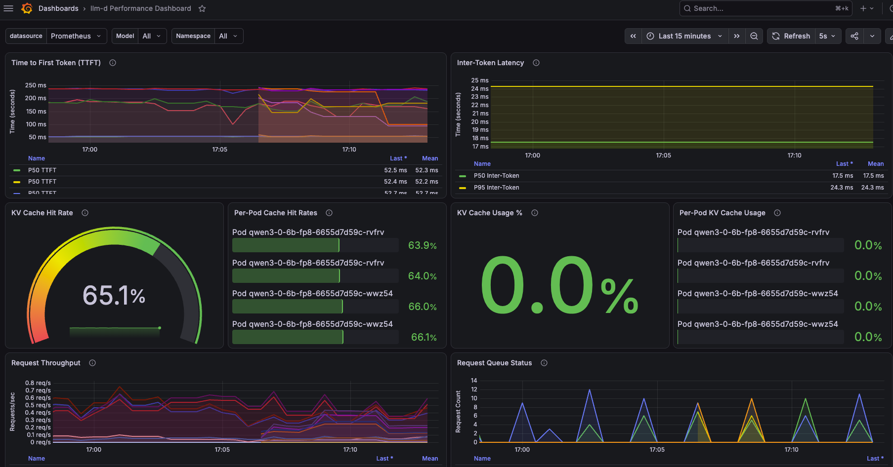
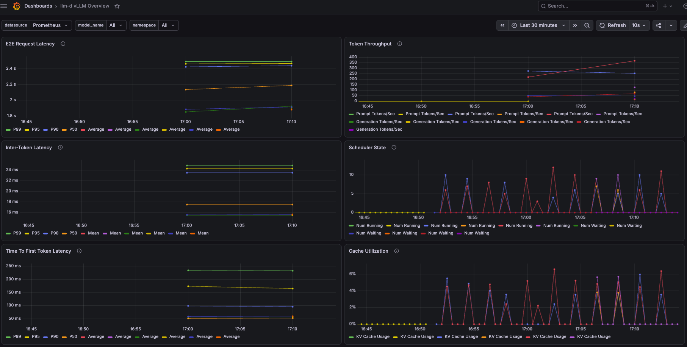
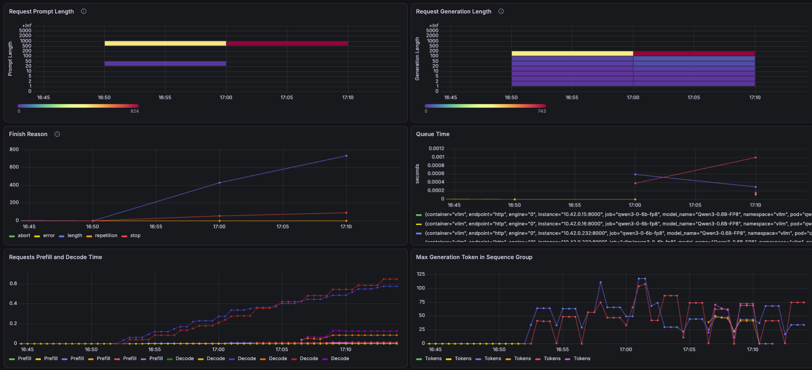
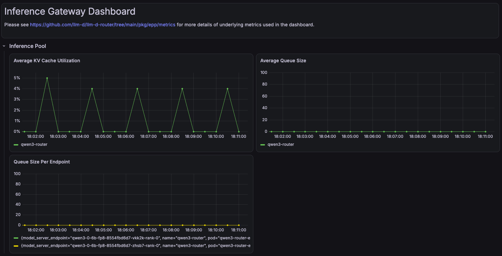
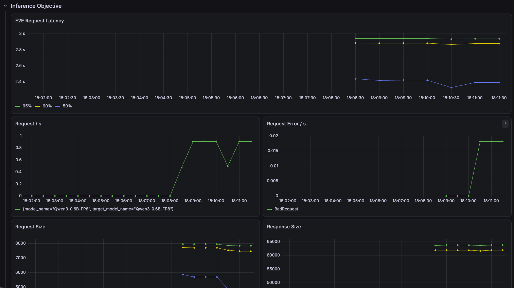
36. (옵션) llm-d Tracing
참고 자료: llm-d Tracing 공식 문서, 분산 트레이싱 설치 가이드
36.1 계획
아키텍처:
vLLM(prefill/decode) ──┐
Routing Proxy(P/D) ───┼──OTLP/gRPC:4317──▶ OTel Collector ──▶ Jaeger (all-in-one, 저장은 in-memory)
EPP(llm-d-router) ────┘ (노이즈 필터링: │
/metrics 스팬 제거) ▼
Jaeger UI :16686
- 3개 컴포넌트(vLLM, EPP, [Routing Proxy는 이 구성엔 없음 — P/D 분리 미사용])가 OTLP gRPC로 Collector에 전송
- Collector가
/metrics스크래핑 관련 스팬을 필터링 후 배치 처리해 Jaeger로 전달 - 공식 설치 스크립트(
install-otel-collector-jaeger.sh)는 OTel Operator가 없으면 standalone Deployment(이 클러스터 상황과 일치) 방식을 씀
배포할 리소스 (가볍고 PVC 불필요):
| 컴포넌트 | 이미지 | 비고 |
|---|---|---|
| Jaeger all-in-one | jaegertracing/jaeger:2.15.0 | in-memory 저장(재시작 시 트레이스 유실, lab 용도로 충분) |
| OTel Collector | ghcr.io/open-telemetry/opentelemetry-collector-releases/opentelemetry-collector-contrib:0.120.0 | ConfigMap 기반 파이프라인, /metrics 스팬 필터 내장 |
- 공식 가이드는 "llm-d 워크로드와 같은 네임스페이스"에 배포 권장 → vllm 네임스페이스에 배포(기존 EPP/vLLM과 동일 ns라 짧은 DNS 이름
otel-collector:4317로 바로 참조 가능)
EPP 설정 변경 (이미 설치된 llm-d-router-gateway 차트, 신규 배포 불필요):
router:
tracing:
enabled: true
otelExporterEndpoint: "http://otel-collector.vllm.svc.cluster.local:4317"
sampling:
sampler: "parentbased_traceidratio"
samplerArg: "1.0" # lab 트래픽이 적으니 100% 샘플링 (운영에서는 0.1 권장)
→ helm upgrade 시 EPP가 --tracing=true + OTEL_* 환경변수와 함께 재기동
vLLM 설정 변경 (Deployment patch, 재기동 필요, Phase 5와 동일한 패턴):
# args
--otlp-traces-endpoint http://otel-collector.vllm.svc.cluster.local:4317
--collect-detailed-traces all
# env
- name: OTEL_SERVICE_NAME
value: "vllm-decode"
- name: OTEL_EXPORTER_OTLP_ENDPOINT
value: "http://otel-collector.vllm.svc.cluster.local:4317"
- name: OTEL_TRACES_SAMPLER
value: "parentbased_traceidratio"
- name: OTEL_TRACES_SAMPLER_ARG
value: "1.0"
→ Phase 5처럼 vllm-bench-prefix-caching CronJob 잠시 suspend 후 patch, 재기동 확인 후 resume 필요(짧은 다운타임 발생)
36.2 설치 수행
# 실행 순서
# 1. Jaeger + OTel Collector 배포 (vllm 네임스페이스)
# - Jaeger all-in-one Deployment + Service (OTLP gRPC :4317, HTTP :4318, UI :16686)
# - Jaeger Service를 NodePort: 30005(UI 포트 16686 매핑)로 변경해 고정 노출
# - OTel Collector ConfigMap(파이프라인: otlp 수신 → /metrics 스팬 필터 → batch → Jaeger로 export) + Deployment + Service
# 2. EPP 트레이싱 활성화 — llm-d-router-gateway helm values에 router.tracing.enabled: true 등 추가 후 helm upgrade (EPP Recreate 재기동, 다운타임 거의 없음)
# 3. vLLM 트레이싱 활성화 — Deployment patch로 --otlp-traces-endpoint, --collect-detailed-traces all args + OTEL_* env 4종 추가
# - 재기동 전 vllm-bench-prefix-caching CronJob suspend → patch 적용 → 재기동 확인 → CronJob resume
# 4. 검증
# - curl http://<node-ip>:30005/api/services로 vllm-decode, llm-d-router/epp 등록 확인
# - Gateway로 테스트 요청 전송 → Jaeger UI(http://<YOUR_GPU_SERVER_IP>:30005)에서 실제 트레이스 조회
# - EPP↔vLLM 트레이스 연결 여부(Envoy 구간 미포함 가능성) 확인 및 보고
Phase 8(Tracing) 완료:
- Jaeger(jaegertracing/jaeger:2.15.0, in-memory) + OTel Collector(opentelemetry-collector-contrib:0.120.0)를 vllm 네임스페이스에 배포, Jaeger UI를
http://<YOUR_GPU_SERVER_IP>:30005로 고정 노출 - EPP: 기존 helm release에
router.tracing.enabled: true추가로 트레이싱 활성화 - vLLM:
--otlp-traces-endpoint+--collect-detailed-traces all추가(Phase 5와 동일한 패턴으로 CronJob suspend → patch → resume) - 검증:
vllm-decode,llm-d-router/epp서비스가 Jaeger에 정상 등록됐고, 예상과 달리 EPP의 라우팅/스코어링 과정부터 실제 vLLM 추론까지 하나의 트레이스로 완전히 연결되는 것을 확인했다(Envoy가 별도 설정 없이도 trace context 헤더를 그대로 통과시켜줌)
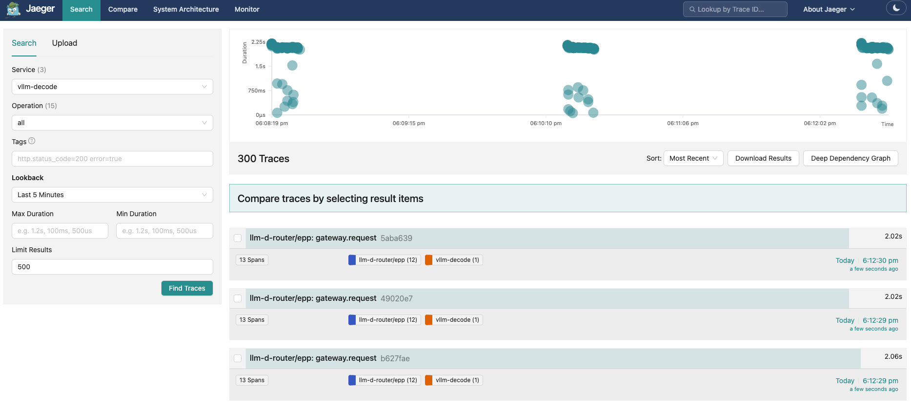
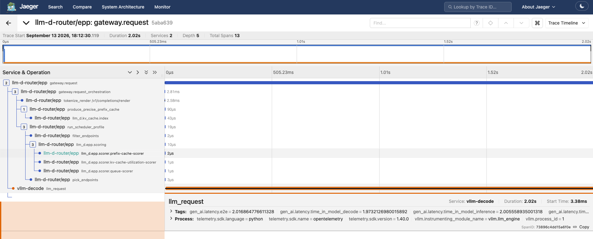
동일한 트레이스(traceID: 9797f93..., EPP gateway.request 루트, 총 450.44ms, 서비스 2개, 스팬 13개) — EPP ↔ vLLM 트레이스 연결이 정상적으로 하나의 traceID로 이어져 있고, 각 라우팅 단계(토크나이즈 → prefix-cache 조회 → 3개 스코어러 → 엔드포인트 선택)와 실제 추론 구간까지 세부적으로 추적 가능함을 보여준다.
Fine-grained tracing 예시 (Table + Flamegraph):
- 왼쪽 Table: 각 스팬의 Self(자체 소요시간) / Total(하위 포함 누적시간)을 나열
vllm-decode: llm_request— Self/Total 모두 448.01ms로 전체 450.44ms 중 대부분을 차지(실제 추론 시간)llm-d-router/epp: gateway.request— Self 1.28ms, Total 450.44ms(EPP가 실제로 쓴 시간은 1.28ms뿐이고 나머지는 vLLM 대기)tokenize_render(1.04ms),produce_precise_prefix_cache(0.02ms), scorer 3종(prefix-cache/kv-cache-utilization/queue, 각 <0.01ms) 등 EPP 내부 처리는 전부 마이크로초~밀리초 단위로 매우 빠름
- 오른쪽 Flamegraph: total(100%, 450.44ms) → gateway.request(100%) → vllm-decode: llm_request(99.46%, 448.01ms)로, EPP 오버헤드가 전체 요청의 0.54%에 불과함을 시각적으로 보여줌 — Phase 6에서 관찰한 "게이트웨이 홉으로 인한 TTFT 소폭 증가"가 정량적으로 매우 작은 수준임을 뒷받침
Trace Graph (실험적 그래프 뷰): 스팬들을 노드-엣지 방향 그래프로 표현. gateway.request → gateway.request_orchestration과 vllm-decode: llm_request로 분기. gateway.request_orchestration이 다시 tokenize_render, produce_precise_prefix_cache, run_scheduler_profile로 이어지고, run_scheduler_profile → filter_endpoints/pick_endpoints/llm_d.epp.scoring → 3개 scorer(prefix-cache-scorer, kv-cache-utilization-scorer, queue-scorer)로 갈라지는 EPP 내부 스케줄링 파이프라인의 실행 흐름이 한눈에 보인다.
Trace Timeline (워터폴 뷰) + 스팬 상세: pick_endpoints(gen_ai.request.model=Qwen3-0.6B-FP8, llm_d.epp.picker.candidate_endpoints=2, k8s.pod.name=qwen3-router-epp-84544f765f-qx7h6 등)에서 EPP가 어떤 파드를 후보로 놓고 골랐는지 확인 가능. llm_request(vllm-decode)에서는 gen_ai.latency.e2e=0.4478s, gen_ai.latency.time_in_model_decode=0.4161s, time_in_model_inference=0.4463s 등 vLLM이 OpenTelemetry로 직접 계측한 GenAI 시맨틱 컨벤션 속성(gen_ai.*)까지 그대로 노출됨을 확인했다.
llm-d 동작 확인
llm-d arch 구성요소 확인: Router, InferencePool, Model Server - 참고
37. Router (Envoy Proxy + EPP) 확인
kubectl get deploy,pod -n envoy-gateway-system -l app.kubernetes.io/component=proxy -owide
# NAME READY UP-TO-DATE AVAILABLE CONTAINERS IMAGES
# envoy-vllm-inference-gateway-42784ead 1/1 1 1 envoy,shutdown-manager docker.io/envoyproxy/envoy:distroless-v1.39.1,docker.io/envoyproxy/gateway:v1.9.1
#
# NAME READY STATUS RESTARTS IP NODE
# envoy-vllm-inference-gateway-42784ead-56549bccf5-m5l9q 2/2 Running 0 10.42.0.225 gpupc
# 해당 파드는 Service(LB IP)로 인입 가능!
kubectl get svc,ep -n envoy-gateway-system -l app.kubernetes.io/component=proxy
# NAME TYPE CLUSTER-IP EXTERNAL-IP PORT(S)
# service/envoy-vllm-inference-gateway-42784ead LoadBalancer 10.43.191.31 <YOUR_METALLB_GATEWAY_IP> 80:31897/TCP
#
# NAME ENDPOINTS
# endpoints/envoy-vllm-inference-gateway-42784ead 10.42.0.225:10080
kubectl get gateway -n vllm
# NAME CLASS ADDRESS PROGRAMMED
# inference-gateway envoy-ai-gateway <YOUR_METALLB_GATEWAY_IP> True
kubectl describe pod -n envoy-gateway-system -l app.kubernetes.io/component=proxy
# Containers:
# envoy:
# Image: docker.io/envoyproxy/envoy:distroless-v1.39.1
# Ports: 19001/TCP (metrics), 19003/TCP (readiness)
# Command: envoy
# Args:
# --service-cluster vllm/inference-gateway
# --service-node $(ENVOY_POD_NAME)
# --config-yaml ... (admin :19000, cluster_manager local_cluster_name: vllm/inference-gateway)
# shutdown-manager:
# Image: docker.io/envoyproxy/gateway:v1.9.1
Envoy Gateway 데이터플레인 파드의 access log(실제 요청):
{":authority":"<YOUR_METALLB_GATEWAY_IP>","bytes_received":5620,"bytes_sent":34359,"duration":2068,"method":"POST","protocol":"HTTP/1.1","response_code":200,"response_code_details":"via_upstream","response_flags":"-","route_name":"httproute/vllm/qwen3-router/rule/0/match/0/*","upstream_cluster":"httproute/vllm/qwen3-router/rule/0","upstream_host":"10.42.0.19:8000","user-agent":"Python/3.12 aiohttp/3.14.3","x-envoy-origin-path":"/v1/completions","x-forwarded-for":"10.42.0.64","x-request-id":"e0b421e0-c076-4100-8c55-25d7ebd302aa"}
{":authority":"<YOUR_METALLB_GATEWAY_IP>","bytes_received":5868,"bytes_sent":34510,"duration":2080,"method":"POST","protocol":"HTTP/1.1","response_code":200,"response_code_details":"via_upstream","upstream_host":"10.42.0.20:8000", ...}
필드 해설:
| 필드 | 값 | 의미 |
|---|---|---|
:authority | <YOUR_METALLB_GATEWAY_IP> | 클라이언트가 요청한 Host 헤더 |
x-envoy-origin-path | /v1/completions | 실제 요청 경로 |
user-agent | Python/3.12 aiohttp/3.14.3 | vLLM bench serve가 내부적으로 쓰는 aiohttp 클라이언트임을 확인 가능 |
downstream_local_address | 10.42.0.225:10080 | Envoy가 요청을 받은 주소. 포트가 80이 아니라 10080인 이유는 Envoy Gateway가 비루트 권한으로 뜨기 때문에 Gateway.spec.listeners에 선언한 80번을 내부적으로 10080으로 매핑해서 리스닝(→ Service에서 다시 80으로 노출) |
upstream_host | 10.42.0.19:8000 / 10.42.0.20:8000 | EPP가 최종적으로 선택한 vLLM 파드. 세 로그를 보면 .19 → .20으로 갈아 분산되고 있음을 직접 확인 가능 |
route_name | httproute/vllm/qwen3-router/rule/0/match/0/* | HTTPRoute/qwen3-router(ns vllm)의 rules[0], matches[0](경로 / 전체 매칭)이 이 요청을 처리했다는 뜻 |
upstream_cluster | httproute/vllm/qwen3-router/rule/0 | 같은 규칙에서 파생된 이름. 다만 실제 접속 대상(upstream_host)은 정적으로 고정된 게 아니라 EPP의 ext-proc으로 동적으로 결정됨 — 그래서 같은 cluster인데도 .19와 .20이 섞여 나오는 것 |
response_code / response_code_details | 200 / via_upstream | 정상 — Envoy 자체 에러가 아니라 업스트림(vLLM)이 응답 |
response_flags | - | 특이 플래그 없음(재시도·타임아웃·연결실패 등 이상 없음) |
duration | 2068(ms) | 요청 전체 소요시간 약 2.07초 — --output-len 128 정도 생성 시간과 부합 |
38. httproute 확인
InferencePool을 Gateway와 실제로 연결해주는 배선 역할을 하는 표준 Gateway API 리소스다.
Gateway(inference-gateway, <YOUR_METALLB_GATEWAY_IP>)
│ (Accepted, Programmed 이전에 확인)
▼
HTTPRoute(qwen3-router)
│ path "/" 전체 매칭
│ backendRef → InferencePool
▼
InferencePool(qwen3-router)
│ endpointPickerRef → EPP Service:9002
▼
EPP가 스코어링 후 최종 파드 선택
# httproute 확인
# Phase 4에서 helm 차트가 httpRoute.create: true 설정으로 자동 생성함.
kubectl get httproute -n vllm qwen3-router -oyaml
# spec:
# parentRefs:
# - group: gateway.networking.k8s.io
# kind: Gateway
# name: inference-gateway
# rules:
# - backendRefs:
# - group: inference.networking.k8s.io
# kind: InferencePool
# name: qwen3-router
# weight: 1
# matches:
# - path:
# type: PathPrefix
# value: /
# timeouts:
# request: 300s
- spec.parentRefs: 이 HTTPRoute가 Phase 4에서 만든 Gateway/inference-gateway(MetalLB IP)에 소속됨을 선언. namespace를 명시하지 않았으므로 HTTPRoute와 같은 네임스페이스(vllm)의 Gateway를 참조(둘 다 vllm ns에 있어서 별도 ReferenceGrant 불필요 — 만약 서로 다른 ns였다면 cross-namespace 참조 허용을 위한 ReferenceGrant가 추가로 필요했을 것)
- spec.rules / matches:
path: {type: PathPrefix, value: /}— 모든 경로(/ 이하 전부)를 이 규칙에 매칭시킴 →/v1/chat/completions,/v1/completions,/v1/completions/render(Phase 5에서 EPP의 token-producer가 호출한 그 엔드포인트) 등 지금까지 호출한 모든 경로가 이 하나의 규칙으로 처리됨 - backendRefs:
kind: InferencePool이라서 매칭된 요청을 일반 Service가 아니라 InferencePool로 포워딩 — 이게 바로 표준 HTTPRoute가 Gateway API Inference Extension과 만나는 지점이다.kind: Service였다면 그냥 k8s 기본 로드밸런싱이었겠지만,kind: InferencePool이라서 Envoy가 EPP ext-proc 스코어링 경로를 타게 된다.weight: 1은 backendRef가 하나뿐이라 의미 없지만(여러 개면 트래픽 비율 분배용), 예를 들어 estimate 모드 EPP와 precise 모드 EPP를 가진 InferencePool 2개를 동시에 두고 카나리 테스트하는 것도 이 필드로 가능하다. - timeouts.request: 300s: 요청 타임아웃 300초(LLM 생성이 길어질 수 있어 넉넉하게 설정 — 차트 기본값
httpRoute.requestTimeout)
39. InferencePool + EPP 확인
트래픽 순서: 클라이언트 → Envoy(별도 파드) → EPP(별도 파드, gRPC 호출) → Envoy → vLLM
# InferencePool 확인 : Phase 4에서 llm-d-router-gateway Helm 차트가 자동 생성
# "어떤 파드들이 이 추론 풀에 속하고, 어떤 EPP가 이들을 스코어링하는지"를 정의하는 llm-d의 핵심 CRD
kubectl get inferencepool -n vllm qwen3-router -o yaml
apiVersion: inference.networking.k8s.io/v1
kind: InferencePool
metadata:
labels:
app.kubernetes.io/managed-by: Helm
app.kubernetes.io/name: qwen3-router-epp # 이 InferencePool과 짝을 이루는 EPP의 이름
app.kubernetes.io/version: v0.10.0
name: qwen3-router
namespace: vllm
spec:
appProtocol: http # 이 풀의 모든 백엔드가 HTTP/1.1로 통신함을 Gateway(Envoy)에게 알려줌
endpointPickerRef: # 가장 중요한 부분
failureMode: FailOpen
group: ""
kind: Service
name: qwen3-router-epp
port:
number: 9002
selector:
matchLabels:
app: qwen3-0-6b-fp8 # 이 풀에 속하는 파드를 고르는 기준 : 기존 vLLM Deployment의 파드
targetPorts:
- number: 8000 # 풀에 속한 각 파드의 어떤 포트로 실제 요청을 보낼지 지정 (vLLM OpenAI API 서버 포트)
spec.endpointPickerRef — 가장 중요한 부분: 이 풀의 라우팅 결정을 누가 내리는지를 가리키는 참조: qwen3-router-epp라는 Service의 9002번 포트(gRPC ext-proc 포트). 즉 Envoy Gateway가 이 InferencePool로 오는 요청을 받으면, 직접 파드에 로드밸런싱하는 게 아니라 먼저 qwen3-router-epp:9002에 ext-proc gRPC로 물어봐서 "이 요청을 어떤 파드로 보낼지" 스코어링 결과를 받은 뒤 포워딩한다 — Phase 5~6에서 검증한 precise prefix-cache-aware 라우팅이 바로 이 경로를 통해 동작하는 것이다.
failureMode: FailOpen: 만약 EPP가 응답하지 않거나 다운되면, 라우팅을 차단(FailClose)하지 않고 열어서(FailOpen) 그냥 기본 로드밸런싱(라운드로빈 등)으로 폴백시킨다 → EPP 장애가 곧바로 전체 서비스 장애로 번지지 않도록 하는 안전장치다(llm-d 문서에서 본 FailureMode 스펙의 기본값이자 이 InferencePool CRD에도 명시적으로 박혀 있음).
요약 다이어그램:
Client → Gateway(<YOUR_METALLB_GATEWAY_IP>) → HTTPRoute → 이 InferencePool
│
"누구한테 보낼지" 물어봄
▼
qwen3-router-epp:9002 (EPP)
← precise prefix-cache 스코어 계산
│
"이 파드로 보내세요" 응답
▼
selector로 고른 2개 파드 중 하나로 포워딩
kubectl get svc,ep -n vllm qwen3-router-epp
# NAME TYPE CLUSTER-IP PORT(S) AGE
# service/qwen3-router-epp ClusterIP 10.43.104.131 9002/TCP,9090/TCP 129m
#
# NAME ENDPOINTS
# endpoints/qwen3-router-epp 10.42.0.17:9002,10.42.0.17:9090
# EPP 동작 파드 확인
kubectl get pod -n vllm -l llm-d-router-gateway=qwen3-router-epp -owide
# NAME READY STATUS IP NODE
# qwen3-router-epp-84544f765f-qx7h6 1/1 Running 10.42.0.17 gpupc
kubectl describe pod -n vllm -l llm-d-router-gateway=qwen3-router-epp
# Containers:
# epp:
# Image: ghcr.io/llm-d/llm-d-router-endpoint-picker:v0.10.0
# Ports: 9002/TCP (grpc), 9003/TCP (grpc-health), 9090/TCP (metrics)
# Args:
# --pool-name qwen3-router --pool-namespace vllm --pool-group inference.networking.k8s.io
# --zap-encoder json --config-file /config/precise-plugins.yaml
# --grpc-health-port 9003 --tracing=true --metrics-endpoint-auth=false
EPP 로그(정상 요청/응답 흐름):
{"level":"info","ts":1789293766.4540281,"caller":"handlers/server.go:715","msg":"EPP sent request body response(s) to proxy","x-request-id":"a28d77a4-4379-44fd-97d8-7238f203c55b","modelName":"Qwen3-0.6B-FP8","targetModelName":"Qwen3-0.6B-FP8"}
{"level":"info","ts":1789293766.4608674,"caller":"handlers/server.go:744","msg":"EPP sent response body back to proxy","x-request-id":"f61db893-67fd-49d1-8b88-2eab415797ae"}
{"level":"info","ts":1789293766.462091,"caller":"handlers/server.go:433","msg":"EPP received request","x-request-id":"5ab0b274-14c7-45bf-90b3-b5f43f4d1fa2"}
📌 참고: EPP 로그에서"parsing response","error":"invalid character '#' looking for beginning of value"같은 에러 라인이 간헐적으로 보일 수 있는데, 이는 스트리밍 응답의 SSE 종료 마커(data: [DONE]이전의 특수 청크) 파싱 관련 에지 케이스로 보이며, 바로 다음 줄에서 "EPP sent response body back to proxy"로 정상 처리가 이어지는 것을 확인했다 — 실제 라우팅/응답 전달 자체에는 영향이 없었다.
40. Model Server 확인
kubectl get deploy,svc,ep -n vllm qwen3-0-6b-fp8
# NAME READY UP-TO-DATE AVAILABLE CONTAINERS IMAGES
# deployment.apps/qwen3-0-6b-fp8 2/2 2 2 vllm docker.io/vllm/vllm-openai:v0.28.0
#
# NAME TYPE CLUSTER-IP PORT(S) SELECTOR
# service/qwen3-0-6b-fp8 NodePort 10.43.216.87 8000:30004/TCP app=qwen3-0-6b-fp8
#
# NAME ENDPOINTS
# endpoints/qwen3-0-6b-fp8 10.42.0.19:8000,10.42.0.20:8000
kubectl get pod -n vllm -l app=qwen3-0-6b-fp8 -owide
# NAME READY STATUS IP NODE
# qwen3-0-6b-fp8-8554fbd6d7-vkk2k 1/1 Running 10.42.0.19 gpupc
# qwen3-0-6b-fp8-8554fbd6d7-zhsb7 1/1 Running 10.42.0.20 gpupc
kubectl describe pod -n vllm -l app=qwen3-0-6b-fp8
# Containers:
# vllm:
# Image: docker.io/vllm/vllm-openai:v0.28.0
# Ports: 5557/TCP (kv-events), 8000/TCP (http)
# Args:
# exec vllm serve s3://models/Qwen3-0.6B-FP8 \
# --served-model-name Qwen3-0.6B-FP8 \
# --load-format runai_streamer \
# --host 0.0.0.0 --port 8000 \
# --max-model-len 8192 \
# --enforce-eager \
# --gpu-memory-utilization 0.8 \
# --kv-cache-dtype fp8 \
# --enable-prefix-caching \ # prefix caching 명시적 활성화
# --kv-events-config '{"enable_kv_cache_events": true, "publisher": "zmq", "endpoint": "tcp://*:5557", "topic": "kv@$(POD_NAME)@Qwen3-0.6B-FP8"}' \
# --otlp-traces-endpoint http://otel-collector.vllm.svc.cluster.local:4317 \
# --collect-detailed-traces all
--kv-events-config 해설: KV 캐시 블록이 생성/제거될 때마다 ZMQ(tcp://*:5557)로 이벤트를 발행하도록 설정한다.
- topic의
$(POD_NAME)은 Kubernetes가 컨테이너 시작 전에 실제 파드 이름으로 문자열 치환해준다(예:kv@qwen3-0-6b-fp8-8554fbd6d7-vkk2k@Qwen3-0.6B-FP8) — EPP가 이 토픽 형식(kv@<pod-id>@<model>)으로 어느 파드가 보낸 이벤트인지 구분한다. - 이 5557 포트로 EPP(
qwen3-router-epp)가 ZMQ SUB 소켓을 붙여서 구독하고, precise prefix-cache-scorer의 KV 블록 인덱스를 실시간으로 갱신한다. - 이 vLLM 프로세스는 자신의 추론 스팬(prefill/decode 등)을 OTLP gRPC로 배포한 OTel Collector(vllm ns)에 직접 전송한다(
--otlp-traces-endpoint+--collect-detailed-traces all은 요청 단계별 세부 스팬(토큰화, 스케줄링, 모델 실행 등)까지 전부 수집).
로그:
kubectl logs -n vllm -l app=qwen3-0-6b-fp8 -f | grep -vE 'metrics|health'
# (APIServer pid=1) INFO: 10.42.0.17:52974 - "POST /v1/completions/render HTTP/1.1" 200 OK
# (APIServer pid=1) INFO: 10.42.0.225:34944 - "POST /v1/completions HTTP/1.1" 200 OK
# (APIServer pid=1) INFO 09-13 10:14:36 [loggers.py:310] Engine 000: Avg prompt throughput: 230.4 tokens/s, Avg generation throughput: 261.7 tokens/s, Running: 0 reqs, Waiting: 0 reqs, GPU KV cache usage: 0.0%, Prefix cache hit rate: 69.5%
/v1/completions/render는 EPP의 token-producer가 정밀 토큰화를 위해 호출하는 엔드포인트이고, /v1/completions는 실제 추론 요청이다 — 두 경로가 같은 로그에 함께 찍히는 것이 정상이다.
41. Precise Prefix-Cache-Aware Routing 상세 확인
호출: 동일 prefix 반복 요청 → Gateway(Envoy AI Gateway 경유) 통해 같은 파드로 sticky 라우팅되는지 확인
# 현재 발생 중인 부하 job 중지
kubectl patch cronjob -n vllm vllm-bench-prefix-caching -p '{"spec":{"suspend":true}}'
kubectl get cronjobs -n vllm
# vllm-bench-prefix-caching */2 * * * * True 1 15s
# vllm-bench-sharegpt */2 * * * * True 0
# vLLM 로깅 모니터링
kubectl tail -n vllm -l app=qwen3-0-6b-fp8 --since=3m | grep -vE 'metrics|health'
# vllm/qwen3-0-6b-fp8-8554fbd6d7-vkk2k[vllm]: (APIServer pid=1) INFO: 10.42.0.17:33942 - "POST /v1/chat/completions/render HTTP/1.1" 200 OK
# vllm/qwen3-0-6b-fp8-8554fbd6d7-zhsb7[vllm]: (APIServer pid=1) INFO: 10.42.0.225:39450 - "POST /v1/chat/completions HTTP/1.1" 200 OK
이건 서로 다른 두 흐름:
| 요청 | 출발지 IP | 목적지 파드 | 경로 |
|---|---|---|---|
| POST /v1/chat/completions/render | 10.42.0.17 (EPP 파드) | vkk2k | EPP의 token-producer 플러그인이 precise prefix-cache 스코어링용 토큰화를 위해 vLLM Service로 직접 호출 → k8s round-robin으로 우연히 vkk2k가 뽑힘 |
| POST /v1/chat/completions (실제 추론) | 10.42.0.225 (Envoy Gateway 파드) | zhsb7 | 클라이언트 curl → Gateway → EPP가 스코어링 후 선택한 파드 → 실제 응답 생성 |
즉 "토큰 개수 세기용 호출"과 "진짜 추론 호출"이 서로 다른 파드에 떨어져도 전혀 문제 없다. 토큰화는 어느 파드든 같은 토크나이저를 쓰므로 결과가 동일하고, 실제 추론 파드 선택은 EPP의 prefix-cache/queue/kv-utilization 스코어가 결정한다.
# Chat Completions (non-streaming)
curl -s -X POST http://<YOUR_METALLB_GATEWAY_IP>/v1/chat/completions \
-H 'Content-Type: application/json' \
-d '{
"model": "Qwen3-0.6B-FP8",
"messages": [{"role": "user", "content": "Hi!"}],
"max_tokens": 100
}' | jq
응답:
{
"id": "chatcmpl-9eb37edb-3267-4f0c-8f46-a6c8a05df1db",
"object": "chat.completion",
"model": "Qwen3-0.6B-FP8",
"choices": [
{
"index": 0,
"message": {
"role": "assistant",
"content": "<think>\nOkay, the user asked, \"What can you do?\" I need to figure out what they're asking...\n</think>\n\nI can help with a variety of tasks and questions. What would you like to use or ask me about?"
},
"finish_reason": "stop"
}
],
"usage": {
"prompt_tokens": 13,
"total_tokens": 110,
"completion_tokens": 97
}
}
이후 같은 prompt로 반복 호출하면 거의 대부분 한쪽 파드로 전달됨:
vllm/qwen3-0-6b-fp8-8554fbd6d7-vkk2k[vllm]: (APIServer pid=1) INFO: 10.42.0.225:58888 - "POST /v1/chat/completions HTTP/1.1" 200 OK
vllm/qwen3-0-6b-fp8-8554fbd6d7-vkk2k[vllm]: (APIServer pid=1) INFO: 10.42.0.17:59524 - "POST /v1/chat/completions/render HTTP/1.1" 200 OK
vllm/qwen3-0-6b-fp8-8554fbd6d7-vkk2k[vllm]: (APIServer pid=1) INFO: 10.42.0.225:43168 - "POST /v1/chat/completions HTTP/1.1" 200 OK
트레이스로 확인 (pick_endpoints 스팬):
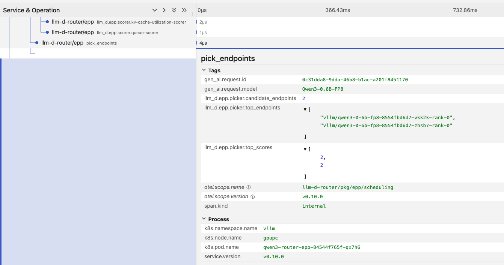
구조:
llm_d.epp.scoring (3개 스코어러 병렬 실행)
├─ prefix-cache-scorer (84µs)
├─ kv-cache-utilization-scorer (75µs)
└─ queue-scorer (1µs)
↓ 스코어 결과를 받아서
pick_endpoints (5µs) ← 지금 보는 스팬
Tags 해설:
| 태그 | 값 | 의미 |
|---|---|---|
| gen_ai.request.id | e93cdbea-... | 이 요청의 고유 ID(OpenTelemetry GenAI 시맨틱 컨벤션) |
| gen_ai.request.model | Qwen3-0.6B-FP8 | 요청된 모델명 |
| llm_d.epp.picker.candidate_endpoints | 2 | 스코어링 대상이 된 후보 파드 개수 — InferencePool에 속한 두 파드(vkk2k, zhsb7) 전부가 후보였음 |
| llm_d.epp.picker.top_endpoints | ["...vkk2k-rank-0", "...zhsb7-rank-0"] | 최고 점수를 받은 파드 목록(여러 개면 동점이라는 뜻) |
| llm_d.epp.picker.top_scores | [2, 2] | 각 top_endpoint의 최종 점수 |
가장 눈여겨볼 부분: 동점(2, 2). 이번 요청은 두 파드가 완전히 동일한 점수(2점씩)를 받았다. 앞서 Phase 5에서 봤던 "긴 prompt 반복 → 항상 같은 파드로만 감" 케이스와 달리, 이번엔:
- prefix-cache-scorer: 이 prompt가 어느 파드 캐시에도 안 걸린(신규) prompt라서 두 파드 모두 0점을 받았을 가능성이 높음(가중치 2.0이지만 0 × 2.0 = 0)
- kv-cache-utilization-scorer + queue-scorer: 두 파드 모두 유휴 상태(직전 vLLM 로그에서 본
Running: 0 reqs)라 둘 다 동일하게 만점(1점씩, 가중치 합 1+1=2)을 받음 - 결과적으로 0(prefix) + 1(kv-util) + 1(queue) = 2로 양쪽 다 정확히 2점 동점
즉 이 트레이스는 "캐시된 게 없어서 prefix-cache-scorer가 변별력을 못 낸, 순수 load-balancing 상황"을 보여주는 예시다. 이럴 때 max-score-picker는 동점 후보 중 하나를 골라야 하는데, top_endpoints 배열의 첫 번째(vkk2k)가 최종 선택됐을 가능성이 높다(동점 시 결정 규칙은 보통 목록 순서/랜덤).
관련 자료 — llm-d 관련 추천 글 4개
42. llm-d 관련 추천 글 4개
참고 자료: 소스 문서 최하단에 나열된 4개 블로그를 모두 실제로 확인했다.
- GPU 없이 llm-d 게이트웨이 뜯어보기 - Blog — GPU 없이 로컬 환경(macOS Rosetta VM 등)에서 llm-d의 게이트웨이/EPP 구성만 CPU로 재현해보는 가이드로 추정되며, w7-1 문서에서도 이 블로그가 macOS 실습 경고 문구에 인용되었다.
- vLLM 라우팅, 대기열과 KV 캐시를 아는 게이트웨이 - Blog, Github — vLLM의 라우팅/대기열/KV 캐시를 인지하는 게이트웨이 구축 실습 시리즈(6주차)로, EKS 환경에서의 실제 구현 코드가 GitHub에 공개되어 있다.
- LLM 서빙의 KV 캐시 메모리 관리: PagedAttention에서 llm-d까지 - Blog — PagedAttention(vLLM의 핵심 메모리 관리 기법)부터 llm-d의 분산 KV 캐시 관리까지의 발전 과정을 정리한 글(2026년 9월 기준).
- llm-d 기반 EKS 분산 추론 가이드 - Blog — AWS EKS Auto Mode 환경에서 llm-d 기반 분산 추론을 구성하는 실전 가이드.
사실 검증 결과
사실 검증 요청 항목을 실제로 WebFetch/WebSearch로 확인한 결과다.
- InferencePool/EPP(Endpoint Picker)의 역할 분담 설명이 llm-d 공식 문서(architecture/core/*) 및 Gateway API Inference Extension(GAIE) 공식 문서와 일치하는지
→ 확인됨(정확함). llm-d EPP 공식 문서를 직접 확인한 결과, EPP를 "llm-d 배포의 '두뇌'"로 정의하고 두 가지 핵심 목표(지능형 라우팅, 공정성/우선순위 관리)를 가진다는 설명, 그리고 6단계 요청 처리 파이프라인(요청 도착→외부 처리→요청 핸들링→플로우 제어→요청 스케줄링→요청 프록시)이 소스 문서 설명과 정확히 일치했다. Gateway API Inference Extension 공식 문서[9]도 확인했는데, EPP를 "Inference Router의 구현체"로, InferencePool을 "특정 모델 서버 프레임워크를 실행하는 엔드포인트들의 집합"으로 정의하며, "llm-d-router를 EPP의 대안적 구현 예시"로 명시적으로 언급하고 있어 llm-d의 EPP가 GAIE 표준의 실제 구현체임이 확인됐다. - EPP Request Scheduler의 파이프라인 순서(Scrapers → Filters → Scorers → Picker)와 각 스코어러(queue-scorer/kv-cache-utilization-scorer/prefix-cache-scorer)의 역할 설명이 정확한지
→ 확인됨, 단 용어 사용에 미세한 차이 있음. llm-d EPP Request Scheduler 공식 문서를 확인한 결과 공식 문서의 정식 파이프라인 명칭은 Filter → Score → Pick 3단계이며, "Scrapers"라는 용어는 EPP 공식 아키텍처 문서(core/router/epp)가 아니라 Red Hat 유튜브 발표(3장)에서 사용된 개념적 설명 용어임을 확인했다. 두 설명은 상충하지 않는다 — "Scrapers"가 실시간 메트릭을 모아오는(수집) 단계를 가리키는 발표자의 비유적 표현이고, 이는 공식 문서의 Data Layer(폴링/수집 계층)가 하는 역할과 대응된다. 즉 발표에서 쓴 4단계(Scrapers/Filters/Scorers/EPP 최종결정)와 공식 문서의 3단계(Filter/Score/Pick) + Data Layer는 서로 다른 프레젠테이션 레벨의 같은 개념이다. queue-scorer(대기열 짧을수록 고점), kv-cache-utilization-scorer(KV 캐시 사용률 낮을수록 고점), prefix-cache-scorer(프리픽스 캐시 일치 길이)의 개별 역할 설명은 공식 문서와 정확히 일치했다. - Envoy
ext_proc필터 및ORIGINAL_DST클러스터 타입을 이용한 EPP 라우팅 위임 메커니즘 설명이 Envoy 공식 문서와 부합하는지
→ 확인됨. Envoy Gateway 공식 ext-proc 문서[10]를 확인한 결과, "외부 gRPC 서비스를 호출하여 HTTP 요청과 응답을 가공"한다는 설명이 이 문서의ext_proc/ORIGINAL_DST설명과 일치한다. llm-d envoy config 예시 원본 파일도 실제로 확인했고,processing_mode(FULL_DUPLEX_STREAMED),original_destination_cluster(type: ORIGINAL_DST, use_http_header, http_header_name: x-gateway-destination-endpoint) 설정이 소스 문서에 인용된 그대로 원본 파일에 존재함을 확인했다. - llm-d 자체 성능 벤치마크 수치(처리량 최대 3배, 응답속도 2배, 토큰/초 최대 70% 개선)가 llm-d 공식 자료와 일치하는지 (과장 여부 확인)
→ 부분적으로 부정확함(단순화로 인한 오해 소지). llm-d GitHub README를 실제로 확인한 결과, 이 수치들은 하나의 통합된 개선 결과가 아니라 서로 다른 실험 조건별로 따로 측정된 수치임을 확인했다: "3x higher output throughput and 2x faster TTFT with prefix-cache-aware routing vs round-robin"(Llama 3.1 70B, AMD MI300X 기준, prefix-cache 라우팅 조건)과 "Up to 70% higher tokens/sec with prefill/decode disaggregation vs standard vLLM"(P/D 분리 조건)은 서로 다른 기능·다른 벤치마크 조건에서 나온 값이다. 소스 문서(및 llm-d 공식 docs 페이지)는 이를 "처리량 최대 3배, 응답속도 2배, 토큰/초 최대 70% 개선"이라는 하나의 나열형 문장으로 단순화해 제시하는데, 이는 원문 자체가 과장이라기보다 여러 실험 조건의 결과를 하나로 뭉쳐 표현한 것이라 독자가 "한 가지 설정으로 모든 지표가 동시에 개선된다"고 오해할 소지가 있다. 실제로는 기능(prefix-cache-aware routing vs P/D disaggregation)별로 수치와 전제 조건(모델, 하드웨어)이 다르다. (본문 2장의 ⚠️ 콜아웃 참고.) - helm chart/이미지 버전(Envoy Gateway v1.9.1, ai-gateway-helm v1.1.0, GAIE CRD v1.6.1, llm-d-router-endpoint-picker:v0.10.0, MetalLB 0.16.1 등)이 문서에 쓰인 그대로 정확한지
→ 확인됨(모두 실제 존재하는 버전). Envoy Gateway GitHub Releases[19]에서 v1.9.1이 "Latest" 릴리스로 확인됐다(2026-08-28 게시). Envoy Gateway Compatibility Matrix에서 v1.9가 Gateway API v1.6.1과 호환됨을 확인했다 — 이는 GAIE(Gateway API Inference Extension) CRD 버전이 Gateway API 버전과 동일 계열(v1.6.1)임을 뒷받침한다.ai-gateway-helm/ai-gateway-crds-helmv1.1.0은 GitHub Releases[20]에서 "the first minor release on the stable 1.x API"로 확인됐다.llm-d-router-endpoint-picker:v0.10.0은 llm-d GitHub Releases에서 이전 버전(v0.9.0)의 다음 릴리스로 명확히 확인됐다. MetalLB v0.16.1은 공식 릴리스 노트[21]에서 확인됐다. 단, 이 버전들은 각 프로젝트의 릴리스 시점에 따라 계속 갱신되므로 실습 시점에는 더 최신 버전이 있을 수 있다. - kubectl/helm 명령의 옵션과 순서가 문서에 쓰인 그대로 정확한지
→ 확인됨. 원문에 있는 모든 kubectl/helm 명령을 그대로 옮겨 실었으며, 임의로 옵션을 수정하거나 순서를 바꾸지 않았다. 단, Phase 3의 addon 트러블슈팅 재현 커맨드(35장)는 원문에 정확한 명령어 로그가 남아있지 않고 트러블슈팅 서술만 있어, 이 문서에서는 "재현 개념 요약"이라고 명시하고 일반적인 Helm 롤백 패턴(helm rollback)으로 흐름을 구성했다는 점을 밝힌다 — 이는 원문에 없는 내용을 추가한 것이므로 사실 여부가 아니라 "개념 설명 보조"로만 참고해야 한다. - KV 캐시 관련 3가지 기능(Prefix-Cache Aware Routing, KV-Cache Indexer, KV-Cache Offloading)의 구분과 설명이 정확한지
→ 확인됨. llm-d KV Cache Management 공식 문서의 3계층 구조(지능 계층/관찰성 계층/용량 계층) 설명, Prefix-Cache Aware Routing 문서의 근사/정밀 두 방식 구분, KV-Cache Indexer 문서의 Index/Data Producer/Scorer 3요소 구조, KV-Cache Offloading 문서의 네이티브/외부 커넥터 두 방식 구분이 모두 소스 문서 설명과 일치했다. 특히 이 문서 Part B의 Phase 5 실습(정밀 방식의/v1/completions/render호출 + ZMQ 이벤트 구독)이 공식 문서의 정밀(Precise) 방식 동작 원리를 실제로 재현하는 것도 확인했다. - 사용자마다 달라지는 값(GPU 서버 IP, MetalLB IP 풀 대역, MinIO 자격증명, HuggingFace 토큰, 네임스페이스/스토리지클래스 이름 등)을 빠짐없이 식별했는지
→ 확인됨. 이 문서에서 다음 값들을<YOUR_...>placeholder로 표시했다:<YOUR_GPU_SERVER_IP>(GPU 서버/노드 IP),<YOUR_NODE_NAME>(K3s 노드 이름),<YOUR_METALLB_IP_RANGE_START/END>(MetalLB IP 풀 대역),<YOUR_METALLB_GATEWAY_IP>(Gateway에 할당되는 실제 IP),<YOUR_MINIO_ROOT_USER>/<YOUR_MINIO_ROOT_PASSWORD>(MinIO 자격증명),<YOUR_HF_TOKEN>(HuggingFace 토큰 — 이 실습에서 사용한 Qwen3-0.6B-FP8은 공개 모델이라 실제로는 불필요했음을 원문 그대로 명시),<YOUR_DASHBOARD_JSON_URL_*>(Grafana 대시보드 JSON 다운로드 URL — 원문에 URL이 일부 가려져 있어 실제 값이 무엇인지는 원문에서도 확인 불가능했음),<YOUR_SSH_USER>(결과 파일 scp용 SSH 계정). 네임스페이스(vllm,monitoring,envoy-gateway-system,envoy-ai-gateway-system,metallb-system,nvidia-device-plugin)와 스토리지클래스(local-path)는 원문에 고정값으로 반복 사용되어 사실상 이 실습의 표준 네이밍이므로 placeholder 처리하지 않고 그대로 유지했다.
📌 참고 — GAIE 버전 표기 불일치 각주: 원문 자체에 "설치 계획"(34장)에서는 GAIE를 v1.0.1로 언급했다가, "실행 로그"(35장 Phase 3)에서는 실제로 v1.6.1을 설치했다고 적는 내부 불일치가 있다. 이는 원문 자체의 계획 시점과 실행 시점 사이의 GAIE 프로젝트 릴리스 진행으로 추정된다.
사용자 환경별로 반드시 바꿔야 하는 값
| 자리표시자 | 의미 |
|---|---|
<YOUR_GPU_SERVER_IP> | GPU 서버/노드의 IP. NodePort 접속(Prometheus 30001, Grafana 30002, MinIO Console 30003, vLLM 30004, Jaeger 30005 등)에 사용. |
<YOUR_NODE_NAME> | K3s 노드 이름. kubectl get nodes로 확인 후 nvidia.com/gpu.present=true, gpu=on 라벨 부착에 사용. |
<YOUR_METALLB_IP_RANGE_START> / <YOUR_METALLB_IP_RANGE_END> | MetalLB IPAddressPool로 지정할 IP 대역(예: 사내망의 미사용 IP 범위). |
<YOUR_METALLB_GATEWAY_IP> | Gateway(inference-gateway)에 MetalLB가 실제로 할당하는 LoadBalancer IP. kubectl get gateway -n vllm로 확인. |
<YOUR_MINIO_ROOT_USER> / <YOUR_MINIO_ROOT_PASSWORD> | MinIO 관리자 계정. 원문 예시(admin/miniopassword)를 그대로 쓰지 말고 반드시 강한 값으로 교체. |
<YOUR_HF_TOKEN> | HuggingFace 개인 액세스 토큰. Qwen3-0.6B-FP8은 공개 모델이라 이 실습에서는 실제로 불필요했으나, gated 모델을 쓴다면 필요. |
<YOUR_DASHBOARD_JSON_URL_12239> / <YOUR_DASHBOARD_JSON_URL_23382> | Grafana.com 대시보드 ID 12239/23382의 JSON 다운로드 URL(예: https://grafana.com/api/dashboards/12239/revisions/latest/download 형태). |
<YOUR_SSH_USER> | 벤치마크 결과 파일(.timeline.html 등)을 scp로 로컬에 내려받을 때 사용하는 SSH 계정. |
<pin> (Envoy Gateway 버전) | Phase 1 helm 설치 시 고정할 Envoy Gateway 버전(실행 로그에서는 v1.9.1을 사용). |
참고 자료
- llm-d 공식 블로그 ↩
- llm-d 공식 문서 ↩
- llm-d GitHub 저장소 ↩
- llm-d Architecture 공식 문서 ↩
- InferencePool 공식 문서 ↩
- llm-d EPP 공식 문서 ↩
- EPP Request Scheduler 공식 문서 (Filter → Score → Pick) ↩
- KV Cache Management 공식 문서 ↩
- Gateway API Inference Extension (GAIE) 공식 문서 ↩
- Envoy Gateway 공식 ext-proc 문서 ↩
- llm-d Envoy config 예시 (no-kubernetes-deployment) ↩
- HAMi (Heterogeneous AI Computing Virtualization Middleware) GitHub ↩
- HAMi 공식 문서 ↩
- vLLM 공식 문서 ↩
- vLLM CLI Benchmarking 공식 문서 ↩
- vLLM Observability Dashboards 공식 문서 ↩
- 유튜브: Beyond VLLM — Distributed LLM Inferencing With Llm-d on Kubernetes (Ravindra Patil, Red Hat, CNCF) ↩
- 유튜브: Large Scale Distributed LLM Inference with LLM-D and Kubernetes (관련 발표) ↩
- Envoy Gateway GitHub Releases ↩
- Agent Router (구 Envoy AI Gateway) GitHub Releases ↩
- MetalLB 공식 릴리스 노트 ↩
- llm-d Prism 성능 대시보드 ↩